Von dem Tage an, wo Lesseps den Isthmus von Suez durchbrach, konnte Afrika mit Recht eine Insel genannt werden; ebenso wird man nach Durchstechung des Panamacanals von einer südamerikanischen und einer nordamerikanischen Insel sprechen, denn diese zwei ungeheuren Länder werden dann von allen Seiten von Wasser umgeben sein. Aber da sie wegen ihrer Ausdehnung immer Kontinente genannt werden, so ist es ganz logisch, diesen Namen auch Australien oder Neuholland beizulegen. Dieser Kontinent mißt in seiner größten Länge von Osten nach Westen dreitausendneunhundert Kilometer und in seiner größten Breite von Norden nach Süden dreitausendzweihundert Kilometer. Das ergiebt einen Flächeninhalt von vier Millionen achthundertdreißigtausend Quadratkilometern, also sieben Neuntel von Europa. Australien wird nach den neuesten Karten in sieben Provinzen getheilt: Im Osten, dem bevölkertsten Theile, Queensland mit der Hauptstadt Brisbane, Neu-Südwales mit der Hauptstadt Sydney, Victoria mit der Hauptstadt Melbourne.
In der Mitte Nordaustralien und Alexandraland ohne Hauptstadt, Südaustralien mit der Hauptstadt Adelaïde.
Im Westen Westaustralien mit der Hauptstadt Perth. Wir müssen noch hinzufügen, daß die Australier einen Bundesstaat zu gründen suchen, »die Republik«, welche die englische Regierung zu verhindern sucht: aber es dürfte einst der Tag kommen, wo die Trennung doch eintreten wird.
Wir werden bald sehen, in welch' gefährliche und wenig bekannte Provinzen Mrs. Branican die Expedition unternahm, um Capitän John wiederzufinden und ihn dem Stamme zu entreißen, der ihn seit neun Jahren gefangen hielt. Konnten die Indas ihn nicht nach der Entweichung Harry Felton's erschlagen haben? Mrs. Branican hatte die Absicht, von Sydney sobald wie möglich aufzubrechen und sie konnte dabei auf die Ergebenheit, die Einsicht und die reichen Erfahrungen Zach Fren's rechnen. Auf einer Karte von Australien wurde nun mit großer Genauigkeit der Weg festgesetzt, den die neue Unternehmung einschlagen sollte, und es wurden folgende Punkte bestimmt:
Zuerst wurde beschlossen, die nordwestliche Küste zu besuchen, d. h. die Stelle des Dampierlandes, wo die Schiffbrüchigen des »Franklin« gelandet waren. Doch dieser Umweg hätte einen zu großen Zeitverlust herbeigeführt. Im Ganzen genommen würde man damit kaum sicherer jenen Nomadenstamm finden, der Alexandraland ebenso durchzog wie Westaustralien.
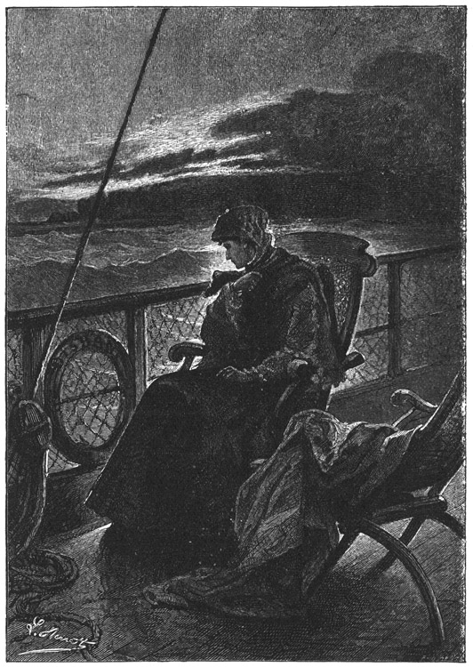... blieb Dolly auf dem Verdeck des Hinterschiffes.
Man zog nun die Richtung in Erwägung, welche Harry Felton bei seiner Wanderung durch Centralaustralien einschlug. Wenn man auch diesen Weg nicht genau kannte, so wurde er wenigstens durch die Stelle angedeutet, wo der Unglückliche gefunden wurde, nämlich das Ufer des Parru an der Grenze von Queensland und Neu-Südwales, im Nordwesten dieser Provinz.
Seit dem Jahre 1770, wo der Capitän Cook Neu-Südwales entdeckte und im Namen des Königs von England in Besitz nahm, entwickelte sich der östliche Theil desselben ungemein. Jetzt fehlte nichts, was zur Größe und zum Reichthume eines Landes gehört: Straßen, Canäle, Eisenbahnen, Postverbindungen zu Wasser und zu Lande zwischen den einzelnen Städten und Provinzen.
Da nun Mrs. Branican in Sydney, dieser reichen Stadt, Alles fand, was zur Ausrüstung einer Karawane nothwendig war, so ließ sie sich durch die Vermittlung des Mr. William Andrew einen Credit bei der australischen Bank eröffnen. So konnte sie denn jetzt leicht Leute anwerben, Karren, Wagen, Reit-, Zug- und Saumthiere, kurz Alles kaufen, was für eine Expedition in Australien zu einer Reise von ungefähr zweitausend Meilen nothwendig war. Aber sollte Sydney als Ausgangspunkt der Expedition genommen werden?
Nach der Meinung des amerikanischen Consuls, der mit der Geographie von Australien sehr vertraut war, paßte Adelaïde, die Hauptstadt von Südaustralien, als Basis der Operation besser.
Da die telegraphischen Verbindungen von dieser Stadt bis in den Golf von Van-Diemen reichten, also vom Norden bis zum Süden, und auch ein Schienenstrang in dieser Richtung verlief, würden die Reisenden die entlegensten Gegenden viel rascher erreichen können. Welchen Weg sollte nun Mrs. Branican von Sydney nach Adelaïde einschlagen? Wenn eine ununterbrochene Bahn vorhanden gewesen wäre, so hätte kein Zweifel obgewaltet. Aber die Eisenbahn, welche den Murray an der Grenze der Provinz Victoria übersetzt, geht über Benalla nach Melbourne und zweigt von hier nach Adelaïde ab, aber sie geht nicht über die Station Horscham hinaus und von dort aus giebt es nur sehr schlechte Communicationsmittel.
So beschloß denn Mrs. Branican, nach Adelaïde auf dem Meere zu fahren. Das beanspruchte nur vier Tage, und wenn man die achtundvierzig Stunden dazurechnet, welche die Postschiffe in Melbourne verbringen, so war sie in sechs Tagen in der Hauptstadt von Südaustralien. Das Postschiff »Brisbane« sollte am Morgen des 27. August in Adelaïde anlangen.
Sie ließ zwei Cabinen reserviren und that die nöthigen Schritte, damit der Credit, welcher ihr von der Bank in Sydney eröffnet wurde, auf die von Adelaïde übertragen werde.
Mrs. Branican dachte in dem Hôtel, wo sie eine Wohnung genommen hatte, nur an John, von dem sie wußte, daß er lebte, und den sie retten sollte. Zach Fren, welcher einsah, daß es besser sei, die Frau jetzt allein zu lassen, wollte einen Gang durch die Straßen von Sydney machen, um sich die Stadt anzusehen. Zuerst aber – und das konnte bei einem Seemann nicht in Verwunderung setzen – wollte er den »Brisbane« besuchen, um sich zu versichern, daß Mrs. Branican gut aufgehoben sei. Das Schiff war ganz danach gebaut, um den Anforderungen als Küstendampfer zu genügen. Als er die bestellte Cabine zu sehen wünschte, führte ihn ein junger Matrose hinein, dem er noch einige Anordnungen gab, um sie noch bequemer zu machen. In dem Augenblicke, als er das Schiff verlassen wollte, trat der Knabe auf ihn zu und fragte ihn mit bewegter Stimme:
»Ist es ganz sicher, daß Mrs. Branican sich morgen nach Adelaïde einschiffen wird?
– Ja, morgen, erwiderte Zach Fren.
– Auf dem »Brisbane«?
– Ja!
– Möchte sie doch den Capitän John finden!
– Wir werden unser Bestes thun.
– Davon bin ich überzeugt.
– Du bist auf dem »Brisbane«?
– Ja!
– Also auf Wiedersehen, mein Junge!«
Die letzten Stunden, welche Zach Fren in Sydney zubrachte, verwendete er zur Besichtigung der Sehenswürdigkeiten, denn diese älteste Hauptstadt Australiens verdient wegen ihres Reichthums an Schönheiten und ihrer prächtigen Lage den Ruf, welchen sie genießt.
Am Abend des folgenden Tages begaben sich Mrs. Branican und Zach Fren an Bord des Schiffes. In der ersten Stunde blieb Dolly auf dem Verdeck des Hintertheiles und sah träumerisch nach der Küste hinüber. In diesen Continent mußte sie also eindringen, dem John nicht hatte entrinnen können.
Seit vierzehn Jahren waren sie getrennt!
»Vierzehn Jahre,« murmelte sie.
Dann stieg sie in ihre Cajüte hinab und legte sich nieder. Am folgenden Tage war sie schon frühzeitig auf Deck, und auch Zach Fren befand sich schon oben. In diesem Augenblicke näherte sich ein Schiffsjunge schüchtern der Mrs. Branican und fragte sie im Namen des Capitäns, ob sie nicht etwas bedürfe.
»Nein, liebes Kind, erwiderte Dolly.
– Ei, das ist ja der Bursche, der mir gestern die Cajüte gezeigt hat, sagte Zach Fren.
– Ja, Herr, ich bin es.
– Wie heißt Du?
– Ich heiße Godfrey.
– Nun, Godfrey, jetzt weißt Du es wohl bestimmt, daß Mrs. Branican auf Deinem Schiffe ist ... und ich glaube, es wird Dich auch freuen.
– Ja, Herr, wie uns Alle an Bord. Ja, wir beten Alle, daß das Unternehmen der Mrs. Branican gelinge, daß sie den Capitän John auffinden möge.«
Indem Godfrey so sprach, sah er sie mit so viel Achtung und Begeisterung an, daß Dolly ganz gerührt war. Die Stimme dieses Schiffsjungen kam ihr bekannt vor.
»Mein Kind, hast Du mich nicht vor der Thür des Spitals in Sydney angesprochen?
– Das war ich.
– Du hast mich gefragt, ob der Capitän John noch lebe?
– Ja.
– Du gehörst also zu diesem Schiffe?
– Ja ... seit einem Jahre. Aber so Gott will, werde ich es bald verlassen.«
Ohne Zweifel wollte er oder wagte er nichts mehr zu sagen und zog sich zurück, um dem Capitän zu melden, daß Mrs. Branican keinen Wunsch habe.
»Dieser Junge scheint Seemannsblut in seinen Adern zu haben, bemerkte Zach Fren. Das zeigt schon sein ganzes Aussehen ... Dieser freie, klare, entschlossene Blick ... Seine Stimme ist zu gleicher Zeit sanft und entschlossen.
– Seine Stimme!« murmelte Dolly.
Es schien ihr, als wenn sie John sprechen hörte, nur war das Organ ein wenig weicher. Aber noch mehr: Diese Züge erinnerten sie an John ... an John, als er noch nicht dreißig Jahre alt war, und der »Franklin« ihn für so lange Zeit von ihr entführte.
»Sie sehen, Mrs. Branican, sagte Zach Fren, indem er sich seine großen Hände rieb, Engländer und Amerikaner, die ganze Welt bringt Ihnen Sympathie entgegen ... Sie werden in Australien dieselbe Verehrung finden, wie in Amerika ... Jeder hat denselben Wunsch, wie dieser junge Engländer.
– Ist es ein Engländer?« fragte sich Mrs. Branican tief gerührt.
Da das Meer sehr ruhig war, hatten sie an diesem Tage eine herrliche Fahrt, so daß Dolly das Verdeck fast gar nicht verließ. Die übrigen Passagiere brachten ihr ein außerordentliches Interesse entgegen und wetteiferten, ihr Gesellschaft zu leisten. Sie wünschten diese Frau zu sehen, deren Unglück so viel Theilnahme erweckte, und die nicht aufhörte, so vielen Gefahren zu trotzen, so vielen Strapazen die Stirn zu bieten, nur um ihren Gatten zu retten, wenn die Vorsehung ihn am Leben gelassen hatte. Uebrigens hätte dies Niemand bezweifelt. Wie hätte man auch nicht ihre Zuversicht theilen sollen, wenn sie von ihren Plänen sprach, wenn ihr Auge aufleuchtete und sie mit voller Zuversicht hoffte, ihren Gatten zu retten.
Je länger die Ueberfahrt dauerte, desto weniger konnte sie ihre Blicke von Godfrey abwenden. Sein Gesicht, sein Gang, seine Haltung, Alles zog sie zu ihm. Dolly konnte Zach Fren nicht verbergen, daß sie zwischen John und Godfrey eine auffallende Aehnlichkeit finde. Auch Zach Fren sah mit großer Unruhe, welch tiefen Eindruck diese zufällige Aehnlichkeit auf sie machte, und er fürchtete nicht ohne Grund, daß sie sich dabei zu sehr an ihr verlorenes Kind erinnerte.
Doch Godfrey war nicht mehr in ihre Nähe gekommen, weil sein Dienst ihn stets auf dem Vordertheile des Schiffes beschäftigte und das Hinterdeck ausschließlich den Reisenden der ersten Classe zur Verfügung stand. Aber aus der Ferne hatten sich ihre Blicke schon oft begegnet und Dolly wollte ihn rufen ... Ja! Godfrey wäre auf das geringste Zeichen sofort herbeigeeilt ... Dolly gab dieses Zeichen nicht und Godfrey kam nicht. Als Zach Fren an jenem Abend Mrs. Branican in die Cajüte hinabführte, sagte sie zu ihm:
»Zach, ich muß wissen, wer dieser junge Matrose ist ... aus welcher Familie er stammt ... seinen Geburtsort ... Vielleicht ist er kein Engländer ...
– Das ist möglich, Mistreß, antwortete Zach Fren. Er kann auch ein Amerikaner sein. Wenn Sie es wünschen, werde ich bei dem Capitän Erkundigungen einziehen ...
– Nein, nein, Zach, ich werde Godfrey selbst fragen.«
Dann hörte er, wie sie leise sagte:
»Mein Kind, mein armer kleiner Wat, wäre jetzt gerade so alt!
– Das fürchtete ich eben,« sagte Zach Fren zu sich, indem er seine Cajüte aufsuchte.
Am folgenden Tage, den 22. August, fuhr man an der Küste von Gippland entlang, eine der hauptsächlichsten Provinzen der Colonie Victoria. Dann schlug das Schiff eine südwestliche Richtung ein und fuhr um das Cap Wilson herum, dem äußersten Vorsprung des Continentes gegen Süden. Hier war die Küste weniger reich an Baien, Häfen und Caps.
Mrs. Branican verließ frühzeitig ihre Cabine und nahm ihren gewohnten Platz auf dem Hinterdeck ein; Zach Fren setzte sich neben sie und bemerkte, daß sie verändert war. Sie starrte in die Ferne, war nachdenklich und antwortete kaum auf die Fragen Zach Fren's. Die Hauptsache war, daß Dolly die eigenthümliche Aehnlichkeit Godfreys mit John vergessen habe, daß sie nicht mehr daran denke, ihn wieder zu sehen, ihn zu fragen. Es war möglich, daß sie darauf verzichtet hatte, daß ihre Gedanken eine andere Richtung eingeschlagen hatten, denn sie ersuchte Zach Fren nicht, ihr den jungen Mann herbeizurufen, der auf dem Verdeck zu thun hatte.
Nach dem Frühstück ging sie in ihre Cajüte hinab und kam erst in der vierten Stunde des Nachmittags wieder auf das Verdeck. Jetzt fuhr das Schiff eben mit vollem Dampfe gegen die Meerenge von Basse, welche Australien von Tasmanien oder Van-Diemensland trennt, und passirte dieselbe während der Nacht.
Der »Brisbane« durchschnitt die Meerenge von Basse. Im August dauert der Tag in jenen Breitegraden nur bis fünf Uhr und der Mond, der hinter den Wolken verschwand, verhinderte jeden Ausblick auf die Küsten des Continentes.
Am 23. August befand sich der »Brisbane« am Eingange der Bai von Port-Philipp, in deren Mitte die Schiffe nichts mehr von den Stürmen zu fürchten haben; aber sie müssen vorsichtig einfahren, besonders wenn die Richtung gegen die lange sandige Spitze von Nepean eingeschlagen wird. Die Bai selbst zerfällt in mehrere Häfen, wo die Schiffe ausgezeichnete Ankerplätze finden, so zu Goelong, Sandrige, Williamstown. Die beiden letzteren bilden den Hafen von Melbourne. Die Küste gewährt hier einen traurigen, monotonen Anblick, da nirgends ein grüner Platz das Auge ergötzt. Der »Brisbane« legte an einem der Quais von Williamstown an, um einen Theil seiner Passagiere auszusetzen. Da man hier einen Aufenthalt von sechsunddreißig Stunden nahm, so beschloß Mrs. Branican, diese Zeit in Melbourne zuzubringen, obwohl sie erst in Adelaïde die Expedition vorbereiten wollte und in dieser Stadt nichts zu thun hatte. Warum verließ sie den »Brisbane«? Fürchtete sie, durch zu viele Besuche belästigt zu werden? Dem hätte sie einfach dadurch ausweichen können, daß sie sich in ihre Cabine zurückzog. Wenn sie in irgend einem Hôtel abstieg, würde sie doch sicher auch sofort erkannt und von Besuchern belästigt worden sein.
Zach Fren wußte sich diesen Entschluß nicht zu erklären. Ueberhaupt konnte er an ihr ein verändertes Wesen wahrnehmen, das sich besonders durch eine gewisse Zurückhaltung kundgab. Sollte sie die Anwesenheit Godfreys zu sehr an ihr Kind erinnert haben? Ja, und Zach Fren täuschte sich nicht. Der Anblick dieses jungen Mannes hatte sie so tief bewegt, daß sie sich nach der Einsamkeit sehnte. Wollte sie ihn fragen? Vielleicht, weil sie dies nicht am vorhergehenden Abende that, obwohl sie es gewünscht hatte. Aber wenn sie jetzt in Melbourne für diese paar Stunden aussteigen wollte, so that sie es nur, um diesen vierzehnjährigen Knaben zu fliehen, zu dem sie eine unerklärliche Macht hinzog. Warum zögerte sie, mit ihm zu sprechen, sich bei ihm nach Allem zu erkundigen, was sie interessirte, nämlich nach der Nationalität, seiner Herkunft, seiner Familie? Fürchtete sie – und das war sehr wahrscheinlich – daß seine Antworten alle die Hoffnungen zerstörten, die sie hegte und denen sie sich so hingab, daß ihre Aufregung Zach Fren auffiel?
Mrs. Branican schiffte sich mit Zach Fren aus; sobald sie die Schiffsbrücke betrat, wendete sie sich um. Godfrey stand bei der Brüstung, sah ihr so traurig nach und machte eine so ausdrucksvolle Geberde, als wollte er sie zurückhalten; Dolly bemerkte es und wollte schon sagen: »Mein liebes Kind ... ich komme wieder.«
Aber sie bemeisterte sich doch und gab Zach Fren ein Zeichen, ihr zu folgen; dann begaben sie sich nach dem Bahnhof, der den Verkehr mit der Stadt vermittelt. Melbourne liegt ungefähr zwei Kilometer am linken Ufer des Yarra-Yarra entfernt, eine Strecke, welche die Eisenbahnzüge in einigen Minuten zurücklegen. Hier erhebt sich nun die Stadt mit ihren dreihunderttausend Einwohnern, die Hauptstadt der Colonie Victoria, die ungefähr eine Million Bewohner hat, und auf die seit dem Jahre 1851 der Alexanderberg im wahren Sinne des Wortes sein ganzes Gold ausgeschüttet hat.
Obwohl Mrs. Branican in einem weniger besuchten Hôtel abstieg, so war sie doch der Gegenstand allgemeiner Neugierde. Sie zog es daher vor, in Begleitung Zach Fren's die herrliche Stadt zu besichtigen. Aber weder die Schönheit derselben, noch die prächtige Umgebung mit ihren zahlreichen Villen schien die kühne Amerikanerin zu interessiren; sie sah Alles gedankenlos an und unter dem Eindrucke einer fixen Idee, als wolle sie jeden Augenblick Zach Fren gegenüber einen Wunsch zu erkennen geben, den sie nicht auszusprechen wagte.
Beide kehrten bei Einbruch der Nacht in das Hôtel zurück. Dolly ließ in ihrem Zimmer serviren, aber sie rührte fast nichts an. Dann legte sie sich nieder und schlummerte ein, indem sie stets ihren Gatten und ihr Kind sah.
Am folgenden Tage blieb sie in ihrem Zimmer bis zwei Uhr Nachmittags. Sie schrieb in dieser Zeit einen langen Brief an Mr. William Andrew, in welchem sie ihm ihre Abreise von Sydney und ihre Ankunft in der Hauptstadt Südaustraliens mittheilte und einen guten Erfolg von der Expedition mit Bestimmtheit voraussagte. Als Mr. William Andrew diesen Brief las, da war er ebenso überrascht als beunruhigt, denn er bemerkte, daß Dolly nicht allein von der bestimmten Auffindung Johns sprach, sondern sie schrieb auch von ihrem Kinde, von ihrem kleinen Wat, in einer solchen Weise, als wäre er gar nicht todt. Der Mann mußte sich fragen, ob diese schwergeprüfte Frau nicht von neuem auf dem Punkte stehe, ihren Verstand zu verlieren.
Die Passagiere, welche nach Adelaïde fahren, hatten sich fast Alle eingeschifft, als Mrs. Branican und Zach Fren an Bord zurückkehrten. Godfrey erwartete mit Ungeduld ihre Ankunft, und als er sie erblickte, leuchtete sein Auge auf, seine Traurigkeit verschwand. Er stürzte der Schiffstreppe zu und stand dicht neben ihr, als die Frau herauf kam.
Zach Fren sah dies nicht gern und er runzelte die Stirn. Was hätte er darum gegeben, wenn dieser Knabe das Schiff verlassen hätte oder wenigstens Dolly nicht immer in den Weg gekommen wäre, da seine Anwesenheit doch die schmerzlichsten Erinnerungen wachrief!
Mrs. Branican erblickte Godfrey, blieb einen Augenblick stehen und sah ihn scharf an; dann stieg sie schweigend nach ihrer Cabine hinab.
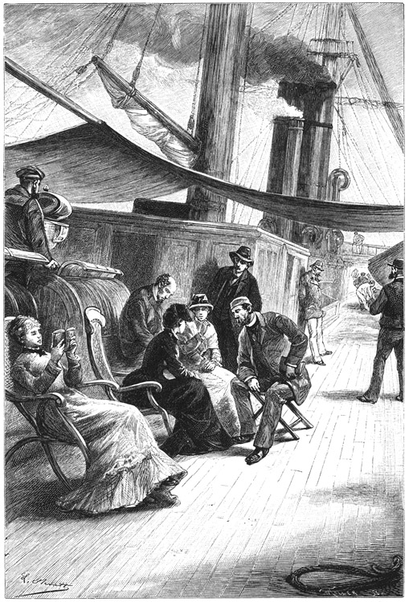Die übrigen Passagiere brachten ihr ein außerordentliches Interesse entgegen.
Um drei Uhr Nachmittags lichtete der »Brisbane« die Anker und schlug die Richtung gegen Adelaïde ein, indem er wenigstens drei Meilen der Küste von Victoria entlang fuhr.
Es waren ungefähr hundert Passagiere an Bord, die meisten davon Bewohner des südlichen Australiens, die in ihre Heimat zurückkehrten. Doch befanden sich auch einige Fremde unter ihnen, z. B. ein Chinese von ungefähr dreißig bis fünfunddreißig Jahren, mit schläfrigem, citronengelbem Gesicht, fett wie ein Mandarin, obwohl er nur ein einfacher Diener war, dessen Herrn wir etwas näher ins Auge fassen müssen. Dieser war ein Engländer, aber ein Engländer, wie er im Buche steht. Groß, mager, mit blondem Barte, ebenso blondem Kopfhaar, kleinen, listigen Augen, einer spitzigen Nase von nicht ungewöhnlicher Länge und mit einem Schädel, auf dem ein Phrenolog sofort den größten Eigensinn entdeckt hätte – Eigenschaften, die jeden Blick auf sich ziehen und auch dem Ernstesten ein Lächeln abnöthigen.
Dieser Engländer war auch ganz nach der Sitte seines Landes gekleidet:
Er trug den bekannten Hut Albions, die Weste bis zum Kinn zugeknöpft, im Rocke große Taschen, die Hose carrirt; an den Füßen Gamaschen und nägelbeschlagene Schuhe.
Wer war dieses Original? Man kannte ihn nicht, und auf den englischen Postdampfern kümmert sich Niemand um die Passagiere. Sie sind Reisende und als solche reisen sie eben. Der Kellner konnte nur sagen, daß dieser Engländer eine Cabine unter dem Namen Joshua Meritt – abgekürzt Jos Meritt – aus Liverpool – Diener Gîn-Ghi aus Hong-Kong (Himmlisches Reich) – bestellt habe.
Jos Meritt saß immer auf dem Hinterdeck und verließ dasselbe erst zum Lunch, wenn die Glocke vier Uhr schlug. Um halb fünf kam er wieder, ging um sieben Uhr zum Diner, erschien um acht Uhr und stieg um zehn Uhr in wohl abgemessenen Schritten, den Kopf weder rechts noch links drehend, steif nach der Cabine hinab.
Mrs. Branican begab sich eines Abends um neun Uhr auf das Verdeck, obwohl es ziemlich kühl war. Wollte sie dem Knaben begegnen, mit ihm sprechen, ihn fragen, von ihm erfahren ... was erfahren? Da Godfrey aber bis zehn Uhr Dienst hatte und er die Wache erst um zwei Uhr Morgens wieder beziehen sollte, mußte Dolly enttäuscht und abgespannt ihre Cajüte wieder aufsuchen.
Um Mitternacht fuhr der »Brisbane« um das Cap Otway, den äußersten Punkt des Districtes Polwarth. Von hier aus schlug er eine nordwestliche Richtung bis zur Höhe der Bucht von Discovery am 141. Längengrade ein, jener Linie, die Victoria und Neu-Südwales von den Ländern Südaustraliens trennt.
Am folgenden Morgen saß der Engländer wieder steif auf seinem gewohnten Platze; der Chinese schnarchte in einer Ecke. Zach Fren mußte wohl an die Gepflogenheiten dieser Leute gewöhnt sein, aber doch konnte er nicht ohne gewisses Erstaunen diesen so gelungenen Typus einer mechanischen Figur betrachten.
Wie groß war seine Ueberraschung, als er an diesem unbeweglichen Gentleman vorüberging und seinen Namen hörte!
»Hochbootsmann Zach Fren, nicht wahr?
– Ja! erwiderte Zach Fren.
– Der Begleiter der Mrs. Branican?
– Ganz richtig ... Ich sehe, Sie wissen ...
– Ich weiß ... auf Suche nach ihrem Gatten ... seit vierzehn Jahren verschollen ... Gut! ... O! ... Sehr gut!
– Wie ... sehr gut?
– Ja ... Mrs. Branican ... Sehr gut! ... Ich auch ... ich suche auch ...
– Ihre Frau?
– O ... nicht verheiratet! ... Wenn ich meine Frau verloren hätte, so würde ich sie nicht suchen.
– Also warum?
– Um einen ... Hut zu finden!
– Einen Hut ... Sie haben Ihren Hut verlegt?
– Meinen Hut? ... Nein! ... Den Hut ... Ich weiß schon! ... Meine Empfehlung an Mrs. Branican ... Gut! ... O! ... Sehr gut!«
Die Lippen Jos Meritt's schlossen sich und ließen keine Silbe mehr heraus.
»Das ist ein reiner Narr,« sagte Zach Fren für sich und ging weiter.
Als Dolly auf das Verdeck kam, ging Zach Fren auf sie zu und beide setzten sich dem Engländer gegenüber. Dieser rührte sich nicht mehr. Da er Zach Fren beauftragt hatte, Mrs. Branican seine Empfehlung darzubringen, hielt er es ohne Zweifel nicht mehr für nöthig, es noch selbst zu thun.
Uebrigens bemerkte Dolly gar nicht diesen sonderbaren Passagier, denn sie hatte mit Zach Fren eine wichtige Unterredung über alle Vorbereitungen zu der Expedition, die sofort nach der Ankunft in Adelaïde in Angriff genommen werden sollte, um keinen Tag, keine Stunde zu verlieren. Es war nothwendig, daß die Expedition die Länder von Central-Australien wenn möglich schon durchzogen habe, bevor dieselben unter der ungeheuren Hitze der tropischen Zone trockengelegt waren.
Sie sprach von John und seiner unüberwindlichen Energie, spielte aber gar nicht auf Godfrey an, so daß Zach Fren schon glaubte, daß sie anderen Sinnes geworden sei, als sie plötzlich sagte:
»Ich habe heute den jungen Matrosen noch nicht gesehen ... Haben Sie ihn gesehen, Zach?
– Nein, erwiderte dieser enttäuscht.
– Vielleicht könnte ich etwas für dieses Kind thun?«
Sie wollte von dem Knaben in gleichgiltigem Tone sprechen, aber Zach durchblickte sie.
»Für diesen Knaben? antwortete er. O, er hat eine ganz hübsche Stellung ... In einigen Jahren wird er Hochbootsmann sein ...
– Da liegt nichts daran! Er interessirt mich ... in einem Punkte ... Aber auch die Aehnlichkeit, ja! ... Diese auffallende Aehnlichkeit zwischen John und ihm ... Und dann würde Wat ... jetzt gerade so alt sein!«
Bei diesen Worten wurde Dolly bleich; ihre Stimme erzitterte und ihr Blick ruhte so fragend auf Zach Fren, daß dieser die Augen niederschlug.
Dann fuhr sie fort:
»Sie werden mir ihn am Nachmittag vorstellen, Zach ... Vergessen Sie es nicht ... Ich will mit ihm sprechen ... Wir schiffen uns morgen aus ... Wir werden ihn nie mehr sehen ... und bevor ich den ›Brisbane‹ verlasse ... will ich wissen ... ja, ich will wissen ...«
Zach Fren mußte Dolly versprechen, ihr Godfrey vorzustellen; dann zog sie sich in ihre Cabine zurück.
Der Hochbootsmann ging beunruhigt auf dem Verdeck hin und her, bis der Kellner zum zweiten Frühstück läutete. Er wäre beinahe an den Engländer gestoßen, der auf das Glockenzeichen in rhythmischen Schritten der Treppe zuging.
»Gut! ... O! ... Sehr gut! sagte Jos Meritt. Sie haben ... auf meine Bitte ... meine Huldigungen ... Ihr Gatte verschwunden ... Sehr gut! ... Gut! ... O! ... Sehr gut!«
Dann ging er fort und nahm seinen gewöhnlichen Platz im Dining Room ein ... versteht sich, den besten und den nächsten der Küche, um sich die besten und schönsten Stücke nehmen zu können.
Gegen drei Uhr fuhr der »Brisbane« am Cap Nelson vorüber und nahm dann die Richtung gegen Norden, indem er sich ziemlich nahe der Küste von Südaustralien hielt. In dieser Zeit setzte Zach Fren Godfrey in Kenntniß, daß Mrs. Branican mit ihm zu sprechen wünsche.
»Mit mir zu sprechen?« rief der Schiffsjunge.
Er gerieth darüber so in Aufregung, daß er sich an die Brüstung anklammern mußte, um nicht zu fallen. Godfrey wurde nun von Zach Fren in die Cabine der Mrs. Branican geführt.
Sie sah ihn einige Zeit an. Er stand vor ihr, die Mütze in der Hand. Zach Fren lehnte sich an die Thüre und betrachtete beide ängstlich, denn er wußte zwar, was Dolly fragen werde, es war ihm aber unbekannt, was der Bursche antworten würde.
»Mein Kind, sagte Mrs. Branican, ich möchte gern wissen ... aus welcher Familie Sie stammen ... Wenn ich danach frage ... so geschieht es aus Interesse für Ihre Lage ... Wollen Sie mir antworten?
– Sehr gern, Mistreß, erwiderte Godfrey mit zitternder Stimme.
– Wie alt sind Sie? fragte Dolly.
– Ich weiß es nicht genau, aber so zwischen vierzehn und fünfzehn Jahren.
– So ... zwischen vierzehn und fünfzehn ... und seit wann sind Sie auf dem Meere?
– Ich bin mit ungefähr acht Jahren als Schiffsjunge eingetreten, und seit zwei Jahren bin ich Matrose.
– Haben Sie große Reisen gemacht?
– Ja, Mistreß. Auf dem Stillen Ocean bis nach Asien ... und auf dem Atlantischen Ocean bis nach Europa.
– Sind Sie ein Engländer?
– Nein, ich bin Amerikaner.
– Wie kommen Sie da auf ein englisches Dampfboot?
– Das Schiff, auf dem ich war, wurde nach Sydney verkauft. Da ich nun ohne Stellung war, so ging ich auf dieses Schiff, indem ich auf eine Gelegenheit warte, wieder in die Dienste eines amerikanischen treten zu können.
– Gut, mein Kind, sagte Mrs. Branican, indem sie ihm ein Zeichen gab, näher zu treten. Godfrey gehorchte.
– Nun möchte ich wissen, wo Sie geboren sind.
– Zu San-Diego, Mistreß.
– Ja, zu San-Diego,« wiederholte Dolly, ohne überrascht zu sein, als wenn sie diese Antwort schon geahnt hätte.
Zach Fren konnte kaum erwarten, was er jetzt hören werde.
»Ja, zu San-Diego, wiederholte Godfrey. O, ich kenne Sie sehr gut ... Ja, ich kenne Sie ... Als ich erfuhr, daß Sie nach Sydney kämen, da freute ich mich ... Wenn Sie wüßten, wie ich mich für den Capitän John Branican interessire!«
Dolly nahm den jungen Matrosen bei der Hand und schwieg. Dann fragte sie, woraus man deutlich ihre Zerstreuung ersehen konnte:
»Wie heißen Sie?
– Godfrey.
– Godfrey ist Ihr Taufname ... Doch wie lautet Ihr Zuname?
– Ich habe keinen anderen Namen.
– Ihre Eltern?
– Ich habe keine Eltern.
– Keine Eltern, wiederholte sie. Sie sind erzogen worden ...?
– Im Wat-House, erwiderte Godfrey. Ja, Mistreß, und unter Ihrer Leitung. O, ich habe Sie oft gesehen, wenn Sie Ihre Kinder im Hospiz besuchten. Sie sahen mich nicht unter den vielen Kleinen, aber ich sah Sie ... Ich hätte Sie küssen mögen ... Da ich zur See gehen wollte, so trat ich, als ich alt genug war, als Schiffsjunge ein ... Auch andere Waisenkinder aus dem Wat-House sind zur See gegangen ... Und wir werden nie vergessen, was wir der Mrs. Branican ... unserer Mutter, schulden! ...
– Ihrer Mutter,« rief Dolly zitternd aus, wie wenn dieses Wort ihr ins Innerste gedrungen wäre.
Sie zog Godfrey an sich ... sie bedeckte ihn mit Küssen ... er küßte sie wieder ... er weinte ... Zwischen ihr und ihm war ein neues Band geknüpft worden.
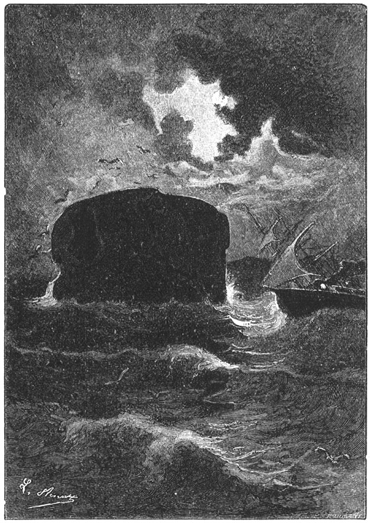Um Mitternacht fuhr der »Brisbane« um das Cap Otway.
Bestürzt sah Zach Fren auf diese Scene und murmelte:
»Die arme Frau! ... Die arme Frau! ... Wohin soll das führen?«
Mrs. Branican erhob sich und sagte:
»Gehen Sie, Godfrey! ... Gehen Sie, mein Kind! ... Ich werde Sie wiedersehen ... Ich muß jetzt allein sein.«
Sie sah ihn noch einmal an, dann ging der Matrose fort.
Zach Fren wollte ihm folgen, als Dolly ihn durch eine Handbewegung zurückhielt.
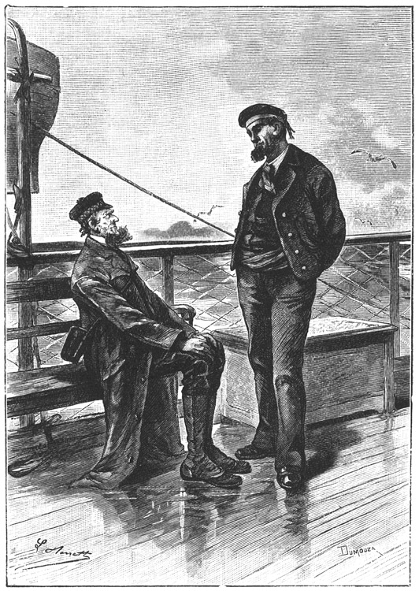»Hochbootsmann Zach Fren, nicht wahr?
»Zach, sagte sie in abgebrochenen Worten, die von ihrer großen Aufregung zeugten, dieses Kind wurde mit den Findelkindern im Wat-House erzogen ... Es wurde in San-Diego geboren ... Es ist vierzehn bis fünfzehn Jahre alt ... Zug für Zug gehören John. Seine entschlossene Haltung, seine freie Miene ... seine Vorliebe für das Meer ... das ist der Sohn eines Seemannes ... das ist der Sohn Johns ... das ist mein Sohn ...! Man glaubte, daß der Golf von San-Diego das arme kleine Wesen für immer verschlungen hätte ... Aber er war nicht todt ... man rettete ihn ... seine Retter kannten seine Mutter nicht ... und seine Mutter war ich ... ich, damals wahnsinnig ... dieses Kind heißt nicht Godfrey ... es heißt Wat ... es ist mein Sohn! ... Gott wollte mir ihn wiedergeben, bevor ich seinen Vater finde.«
Zach Fren hatte Mrs. Branican zugehört, ohne zu wagen, sie zu unterbrechen, denn er sah ein, daß die unglückliche Frau dem Scheine nach nicht anders sprechen konnte. Der brave Seemann glaubte, sein Herz müßte brechen, denn er hielt es für seine Pflicht, diese Illusionen zu zerstören, Dolly von jenem Abgrunde zurückzuhalten, der sich von neuem vor ihr öffnete. Dies that er auch ohne Zögern – fast grausam.
»Mrs. Branican, sagte er, Sie täuschen sich ... Ich will nicht, ich kann es nicht zulassen, daß Sie so etwas glauben ... Jene Aehnlichkeit ist nur zufällig ... Ihr kleiner Wat ist todt ... ja, todt ... Er ist bei jenem Unfalle ertrunken, und Godfrey ist nicht Ihr Sohn ...
– Wat ist todt, rief Mrs. Branican. Wer kann das behaupten?
– Ich, Mistreß.
– Sie?
– Eine Woche nach der Katastrophe wurde in dem Golfe eine Kindesleiche an den Strand der Lomaspitze geworfen ... Ich habe sie selbst gefunden ... Ich habe Mr. William Andrew benachrichtigt ... Der kleine Wat wurde von ihm erkannt und auf dem Friedhofe von San-Diego begraben.
– Wat! ... mein kleiner Wat ... dort ... auf dem Friedhof? ... Und man sagte mir nie etwas davon?
– Nein, Mistreß, nein! erwiderte Zach Fren. Sie waren damals wahnsinnig, und als Sie nach vier Jahren wieder gesund wurden, fürchtete man ... Mr. William Andrew befürchtete ... wenn er Ihnen von neuem Schmerz bereitete ... und er schwieg! ... Aber Ihr Kind ist todt, und Godfrey kann nicht Ihr Sohn sein ... er ist es nicht.«
Dolly sank auf das Sopha, ihre Augen schlossen sich, sie sah nichts mehr um sich als Finsterniß. Sie gab Zach Fren ein Zeichen, sie allein zu lassen.
Am Morgen des 26. August, als Mrs. Branican ihre Cabine noch nicht verlassen hatte, fuhr der »Brisbane« in den Golf von Saint-Vincent ein und warf im Hafen von Adelaïde Anker.
Von den drei Hauptstädten Australiens ist Sydney die älteste, Melbourne die folgende, Adelaïde die jüngste. In Wirklichkeit kann man behaupten, daß die letztere die schönste ist. Sie entstand im Jahre 1853 in Südaustralien, dessen politische Unabhängigkeit erst aus dem Jahre 1856 datirt. Es ist wahrscheinlich, daß Adelaïde sich rasch vergrößern wird, da sein Klima ein ungemein gesundes ist.
Mrs. Branican stieg in einem Hôtel der King William-Street ab. Die arme Mutter hatte soeben eine schwere Prüfung durchgemacht. Von dem Augenblicke an, wo ihre Hoffnung zerstört war, wollte sie den Knaben nicht wiedersehen und hatte nicht mehr mit ihm gesprochen. Sie erinnerte sich nur noch an seine überraschende Aehnlichkeit mit John.
Von nun an wollte sie sich ganz ihrem Werke hingeben und sich nur mit den Vorbereitungen zur Expedition beschäftigen. Sie war entschlossen, ihr ganzes Vermögen zu opfern, um die tüchtigsten Leute für diesen letzten Versuch zu begeistern.
Da diese Provinz eine Menge kühner Leute hat, die nach allen Richtungen hin vordringen und sich durch die Urwälder Bahn brechen, so konnte es nicht fehlen, daß ihrem Aufrufe zur Theilnahme an der Expedition von allen Seiten Folge geleistet wurde.
Man kam überein, daß der Sammelpunkt der Personen und aller Theile der Expedition nicht Adelaïde sei, sondern die Endstation der Eisenbahn gegen Norden, wodurch man Zeit gewann und Strapazen vorbeugte. Inmitten dieser culturreichen Districte würde man die nothwendige Zahl von Wagen, Thieren und Pferden finden. Es mußte für Alles gesorgt werden, was etwa vierzig Personen, die Dienerschaft und die kleine Schutzwache in jenen ungeheuren Steppen, die ohne Vegetation und ohne Wasser sind, bedurften.
Dolly fand eine mächtige Stütze in dem Gouverneur von Südaustralien, der ihr bei allen Vorbereitungen hilfreiche Hand leistete. Dank seiner Vermittlung nahmen einunddreißig wohlbewaffnete und wohlberittene Männer, theils Eingeborene, theils Colonisten, die Vorschläge der Mrs. Branican an. Sie versprach ihnen für die Dauer der Expedition eine hohe Löhnung und eine Belohnung von hundert Pfund nach Beendigung derselben, mochte der Erfolg sein, wie er wolle. An ihrer Spitze stand ein ehemaliger Officier der Polizei, Tom Marix, ein kräftiger und entschlossener Mann von ungefähr vierzig Jahren, für den der Gouverneur garantirte.
Tom Marix hatte die tapfersten und verläßlichsten Leute aus den zahlreichen Bewerbern erwählt, so daß man bei den glänzenden Bedingungen auf ihre Ergebung rechnen konnte.
Der Troß stand unter dem Befehle Zach Fren's, der überhaupt der eigentliche Führer der Expedition war; die Seele des Ganzen war aber Mrs. Branican selbst.
Nach Vollendung der Vorbereitungen wurde festgesetzt, daß Zach Fren spätestens am 30. nach der Station Farina aufbrechen sollte, wo Mrs. Branican mit den Uebrigen zu ihm stoßen würde.
»Zach, sagte sie zu ihm, Sie bieten Alles auf, daß unsere Karawane sich in der ersten Woche des September in Bewegung setzen kann. Zahlen Sie Alles und scheuen Sie keine Kosten!
– Alles wird bereit sein, erwiderte er. Nach Ihrer Ankunft brauchen Sie nur den Befehl zum Aufbruche zu geben.«
Man kann sich leicht vorstellen, daß Zach Fren alle diese Befehle ausführte, und zwar so schnell, daß er schon am 20. August nach Farina fahren konnte. Dann setzte er Mrs. Branican telegraphisch in Kenntniß, daß ein Theil der Expedition bereits beisammen sei.
Dolly unterzog sich mit Unterstützung von Tom Marix der ihr zugefallenen Aufgabe mit großer Begeisterung. Die Pferde wurden erst nach der sorgfältigsten Prüfung gekauft, und die australische Race lieferte ausgezeichnete Exemplare, die gegen Ermüdung gefeit, an jede Strapaze gewöhnt waren. So lange sie durch Wälder und Ebenen zogen, würden sie sich nicht um ihre Ernährung zu sorgen brauchen, da hier Gras und Wasser in Fülle vorgefunden wird. Aber von der Station Alice-Spring aus begannen jene Sandwüsten, die einer Expedition in Central-Australien so gefährlich werden können.
Da Mrs. Branican jetzt ungemein viel zu thun hatte, dachte sie weniger an die Vorfälle auf dem »Brisbane«, und von jener Hoffnung, die Zach Fren durch seinen Bericht auf einmal vernichtet hatte, blieb ihr nur noch eine kleine Erinnerung. Sie wußte jetzt, daß ihr kleines Kind dort drüben in einer Ecke des Friedhofes von San-Diego schlafe, daß sie auf seinem Grabe werde weinen können ... und doch war die Ähnlichkeit eine so auffallende ... und das Bild Godfreys und Johns verschmolz in ihrem Geiste stets in eines.
Seit der Ankunft des Postdampfers hatte Mrs. Branican den jungen Burschen nicht mehr wiedergesehen, und wenn dieser sie in den ersten Tagen nach ihrer Ausschiffung gesucht hatte, so wußte sie es einfach nicht. In jedem Falle schien es, als ob Godfrey nicht in das Hôtel der King William Street gekommen wäre. Was hatte er auch dort zu suchen? Nach der letzten Unterredung mit ihm hatte sich Dolly in ihre Cabine eingeschlossen und ihn nicht mehr zu sich gerufen. Dolly wußte übrigens, daß der »Brisbane« nach Melbourne zurückgekehrt sei und sie nach seiner Wiederankunft nicht in Adelaïde sein würde.
Während Mrs. Branican ihre Vorbereitungen zur Expedition traf, beschäftigte sich eine andere Persönlichkeit mit nicht weniger Beharrlichkeit mit seiner Unternehmung. In dem Hôtel in der Hindley Street logirten Jos Meritt und sein Diener, der Chinese Gîn-Ghi.
Woher kamen diese beiden Typen des äußersten Asiens und Europas? Wohin reisten sie? Was machten sie in Melbourne und was suchten sie in Adelaïde? Unter welchen Umständen hatten sich die beiden Menschen da – der eine der Herr, der andere der Diener – zusammengefunden, um die Welt zu durchreisen? Die Beantwortung wird sich aus einem Gespräche ergeben, das Jos Meritt und Gîn-Ghi am Abend des 5. September mit einander hatten.
Zuerst müssen wir noch den Chinesen näher ins Auge fassen. Wenn dieser Gîn-Ghi hieß, so verdiente er wirklich diesen Namen, denn das bedeutete so viel, wie »gleichgiltiger Mensch«. Er war gleichgiltig, und zwar in einem seltenen Grade, gegen jede Gefahr und jeden Befehl: Er hätte nicht zehn Schritte gethan, um einen Befehl auszuführen, nicht zwanzig, um einer Gefahr aus dem Wege zu gehen. Jos Meritt mußte schon eine starke Natur haben, um einen solchen Diener zu behalten; aber das kam wirklich nur auf die Gewohnheit an, denn beide reisten schon seit fünf oder sechs Jahren. Sie hatten sich zufällig in San-Francisco getroffen, wo die Chinesen wie die Ameisen herumlaufen, und der Engländer nahm den Mann nun, »auf Probe« wie er sagte, in seine Dienste, eine Probe, die wahrscheinlich bis zum Tode dauern würde. Nicht unerwähnt darf bleiben, daß Gîn-Ghi in Hong-Kong geboren war und das Englische wie ein Bewohner von Manchester sprach.
Jos Meritt war Phlegmatiker durch und durch. Wenn er Gîn-Ghi auch mit den grausamsten Torturen bedrohte, die im Himmlischen Reiche nur in Gebrauch sind, so würde er ihm doch nicht einmal einen Nasenstüber versetzt haben. Wurden seine Befehle nicht ausgeführt, gut, so führte er sie selbst aus, das war ganz einfach. Aber dieser Chinese mußte seinem Herrn überall folgen, wohin die Phantasie dieses Original trieb. Er hätte eher das Gepäck seines Bedienten auf den Schultern getragen, als Gîn-Ghi zurückgelassen, wenn der Zug oder das Schiff abfahren wollte. Der gleichgiltige Mensch folgte ihm auf Schritt und Tritt durch die Tausende von Meilen in der Alten und Neuen Welt, und so kam es denn auch, daß diese Beiden in die Hauptstadt von Südaustralien gelangten.
»Gut! ... O! ... Sehr gut! sagte an jenem Abend Jos Meritt. Ich glaube, unsere Dispositionen sind getroffen?«
Man kann sich zwar kaum erklären, warum er erst Gîn-Ghi danach fragte, da er doch Alles selbst vorbereiten mußte. Aber er unterließ solche Fragen nie, schon aus Princip.
»Zehntausendmal getroffen, erwiderte der Chinese, der sich gewisse Redensarten der Bewohner des Himmlischen Reiches nicht abgewöhnen konnte.
– Unsre Koffer?
– Sind gepackt.
– Unsre Waffen?
– Sind bereit.
– Unsre Lebensmittel?
– Die haben Sie ja selbst auf den Bahnhof getragen, Mr. Jos. Uebrigens ist es denn nothwendig, sich mit Lebensmitteln zu versehen ... wenn man ja früher oder später persönlich aufgefressen werden kann ...
– Aufgefressen werden, Gîn-Ghi? ... O, sehr gut! ... Sehr gut! ... Du glaubst also, daß Du aufgefressen werden wirst?
– Freilich, früher oder später ... Hat nicht vor sechs Wochen nur wenig daran gefehlt, daß wir unsere Reisen in dem Bauche eines Cannibalen abgeschlossen hätten ... besonders ich!
– Du ... Gîn-Ghi?
– Ja, weil ich so fett bin, während Sie, Mr. Jos, sehr mager sind, und diese Leute mir den Vorzug geben!
– Den Vorzug? ... Gut! ... O! ... Sehr gut!
– Und haben die Eingebornen von Australien nicht einen besonderen Geschmack für das gelbe Fleisch der Chinesen, das noch viel besser ist, als ihr Reis und ihr Gemüse?
– Deshalb habe ich Dir immer empfohlen zu rauchen, Gîn-Ghi, erwiderte der phlegmatische Engländer. Du weißt doch, daß die Menschenfresser das Fleisch der Raucher nicht lieben.«
Das that auch der vorsichtige »Himmlische«, indem er zwar nicht Opium, wohl aber Tabak rauchte, den ihm Jos Meritt reichlich lieferte. Da, wie es scheint, die Australier, wie ihre cannibalischen Mitbrüder andrer Länder, einen Ekel vor dem Fleische eines Rauchers haben, weil es mit Nicotin imprägnirt ist, so trachtete der Chinese danach, sich so weit wie möglich ungenießbar zu machen.
Aber war es denn wirklich wahr, daß er und sein Herr bei den Menschenfressern gewesen waren, und zwar nicht als Gäste? Ja, an der australischen Küste waren Beide nahe daran gewesen, auf so unmenschliche Weise ihr Dasein abzuschließen. Vor zehn Monaten fielen sie in Queensland den wildesten Stämmen der Cannibalen in die Hände und wären sicher gefressen worden, wenn die Polizei sie nicht zur rechten Zeit befreit hätte. Sie kamen daher wieder in die Hauptstadt von Queensland, dann nach Sydney, von wo sie der Postdampfer nach Adelaïde brachte. Aber dies hinderte die Beiden durchaus nicht, eine Reise in das centrale Australien anzutreten.
»Und dies Alles wegen eines Hutes! rief der Chinese. Ay ya ... Ay ya! ... Wenn ich daran denke, möchte ich bitterlich weinen!
– Wann wirst Du damit fertig sein ... Gîn-Ghi? erwiderte Jos Meritt, die Stirne runzelnd.
– Aber wenn Sie jemals den Hut wiederfinden, so wird er doch nur noch ein Fetzen sein ...
– Genug, Gîn-Ghi! ... Genug! ... Ich verbiete Dir, noch ein Wort über diesen Hut oder über etwas anderes zu verlieren! ... Du verstehst mich? ... Gut! ... O! ... Sehr gut! ... Wenn das noch einmal vorkommt, werde ich Dir vierzig bis fünfzig Bambushiebe auftragen lassen!
– Wir sind nicht in China!
– Ich werde Dir nichts zu essen geben!
– Da werd' ich wenigstens mager werden.
– Ich werde Dir den Zopf abschneiden.
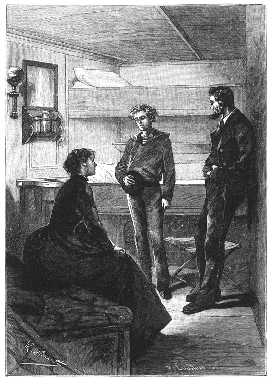Er stand vor ihr, die Mütze in der Hand.
– Werde Dir den Tabak entziehen!
– Gott Fô beschützt mich!
– Er wird Dich nicht beschützen!«
Vor dieser Drohung wurde Gîn-Ghi kleinlaut und unterwarf sich.
Um welchen Hut handelte es sich denn und warum jagte Jos Meritt sein ganzes Leben demselben nach?
Dieses Original war, wie wir wissen, ein Engländer aus Liverpool, eines jener Exemplare, die sich nicht auf Großbritannien allein beschränken, sondern an der Loire, an der Elbe ebenso zu finden sind, wie in Schottland. Jos Meritt war sehr reich und wegen seiner Sammelwuth in Lancaster und in den benachbarten Grafschaften sehr bekannt. Er sammelte aber keine Gemälde, Bücher oder Kunstgegenstände, sondern Hüte, und zwar jede menschliche Kopfbedeckung, wie Mützen, Hauben, Kappen, breit- und schmalränderige Hüte, Cylinder, Fez, Käppis, Mitren, Helme u. s. w. Er besaß schon ein ganzes Museum solcher historischer Kopfbedeckungen: So den Helm des Patrokles, als er von Hektor bei der Belagerung von Troja erschlagen wurde, den des Themistokles aus der Schlacht von Salamis, dem Hut Cäsar's, dem ein Windstoß in den Rubicon getrieben hatte, die Haube der Lucrezia Borgia, den Hut Tamerlan's, als er den Sind überschritt, den des Gengis Khan, als er Boukhara und Samarkand zerstören ließ, das Häubchen der Königin Elisabeth, das der Maria Stuart, als sie aus dem Schlosse Lockleven entfloh, das der Katharina II., als sie in Moskau war, das Käppchen Peter des Großen, als er mit den Zimmerleuten in Saardam arbeitete, den Hut Marlborough's aus der Schlacht von Ramilies, den des dänischen Königs Oläus, der zu Sticklestad ermordet wurde, den Hut Geßler's, den Wilhelm Tell nicht grüßen wollte, die Mütze Pitt's, als er mit dreiundzwanzig Jahren Minister wurde, den Zweimaster Napoleons I. bei Wagram, endlich Hunderte andere nicht weniger berühmte Kopfbedeckungen. Sein größter Schmerz war, daß er noch nicht den Hut Noah's besaß, als seine Arche auf dem Berge Ararat stehen blieb, und die Kappe Abraham's, als er Isaak opfern wollte. Aber Jos Meritt verzweifelte nicht, sie eines Tages zu finden. Was die Kopfbedeckung Adams und Evas anbelangt, als sie aus dem Paradiese gejagt wurden, so verzichtete er auf dieselben, weil tüchtige Historiker nachgewiesen haben, daß das erste Menschenpaar keine Hüte oder Kappen trug.
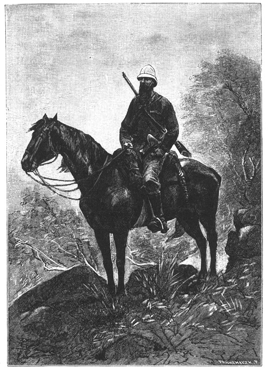Tom Marix, ein kräftiger und entschlossener Mann.
Wir sehen, daß Jos Meritt ein großes Museum derartiger Curiositäten besaß und daß er sein ganzes Leben der weiteren Bereicherung desselben widmete. Er war von der Echtheit seiner Funde fest überzeugt und durchwanderte Länder, besuchte Städte und Dörfer, durchsuchte die Trödlerläden, verschwendete Zeit und Geld, um nach monatelangem Suchen einen alten zerlumpten Hut aufzutreiben, den man ihm gegen schweres Gold verkaufte. So durchzog er denn die ganze Welt, und war nun auf seinen Reisen über Afrika, Asien, Europa, Amerika und selbst Oceanien nach Australien gekommen.
Da er gehört hatte, daß die Eingebornen Australiens sich mit den verschiedensten männlichen und weiblichen Kopfbedeckungen bekleideten, in welchem Zustande sie dieselben auch gefunden haben mochten, so glaubte der Engländer, hier »einen Hauptschlag ausführen zu können«, um nach der Gewohnheit dieser Antiquitätensammler zu sprechen. Gewiß war Jos Meritt von einer fixen Idee besessen, die ihn ganz verrückt zu machen drohte, denn halb war er es schon. Es handelte sich diesmal um einen bestimmten Hut, der das werthvollste Stück seiner Sammlung ausmachen sollte.
Welches war nun dieses Wunderwerk? Welcher alte oder moderne Fabrikant hatte ihn verfertigt? Auf welchem königlichen, bürgerlichen oder bäuerlichen Haupte hatte er geruht und unter welchen Umständen? Dieses Geheimniß hatte der Engländer Niemand anvertraut. Nach den werthvollsten Untersuchungen kam er zu der Ueberzeugung, daß er seine Rundreise mit der Kopfbedeckung eines hervorragenden Häuptlings australischen Stammes abschließen müsse. Wenn es ihm gelang, dieselbe zu entdecken, so wollte er sie mit dem schwersten Golde bezahlen, stehlen, wenn man sie ihm nicht verkaufen wollte. Das wäre das Siegeszeichen jener Unternehmung, die ihn schon bis in den Nordwesten von Australien geführt hatte. Das war auch der Grund, warum der Chinese von neuem in die Gefahr kam, von den Cannibalen gefressen zu werden. Was für Cannibalen? ... Die wildesten, die sie jemals gesehen hatten. Wie anhänglich mußte daher der Chinese seinem Herrn sein, wenn er sich trotz dieser Gefahr nicht von ihm trennen wollte!
»Morgen reisen wir mit dem Expreßzug von hier ab, sagte Jos Meritt.
– Um zwei Uhr? fragte der Chinese.
– Um zwei Uhr, und trachte, daß Alles bereit sei.
– Ich werde mein Möglichstes thun, mein Herr, aber bedenken Sie, daß ich keine zehntausend Hände habe, wie die Göttin Covan-in.
– Ich weiß nicht, ob die Göttin Covan-in zehntausend Hände hat, aber ich weiß, daß Du deren zwei hast, und ich ersuche Dich, sie nach allen Kräften in meinen Diensten zu verwenden ...
– Bis ich gefressen werde!
– Gut! ... O! ... Sehr gut!«
Ohne Zweifel setzte der Chinese seine Hände nicht in größere Bewegung, als er es gewohnt war, indem er die Arbeit seinem Herrn überließ. Am folgenden Tage verließen die beiden Originale Adelaïde und der Expreßzug entführte sie in unbekannte Gegenden, wo Jos Meritt hoffte, den Hut zu finden, der seiner Sammlung noch fehlte.
Einige Tage später verließ Mrs. Branican ebenfalls die Hauptstadt von Südaustralien. Tom Marix hatte die Mannschaft seiner Escorte vollzählig gemacht, die aus fünfzehn Weißen, ehemaligen Polizeisoldaten, und fünfzehn Eingebornen bestand, die ebenfalls schon in der Provinz zu Sicherheitsdiensten verwendet worden waren. Diese Escorte hatte den Zweck, die Karawane gegen die Nomaden zu schützen und nicht den Stamm der Indas zu bekämpfen, denn man durfte die Worte Harry Felton's nicht vergessen, welcher sagte, daß der Capitän John eher durch ein Lösegeld, als mit Gewalt befreit werden müßte.
Lebensmittel in hinreichender Menge für etwa vierzig Personen während eines Jahres füllten zwei Gepäckwagen des Zuges, der nach Farina abgehen sollte.
Jeden Tag schrieb Zach Fren an Dolly von dieser Station aus einen Brief, wodurch sie auf dem Laufenden gehalten wurde. Die Ochsen und Pferde, die nach sorgfältiger Auswahl gekauft worden waren, befanden sich schon mit den Leuten, welche ihre Fütterung und Führung zu besorgen hatten, beisammen. Die Wagen standen auf dem Bahnhof bereit, um die Lebensmittel, die Kleiderballen, die Werkzeuge, Waffen, Zelte, kurz Alles, was zu einer Expedition gehört, aufzunehmen. Zwei Tage nach Ankunft des Zuges konnte aufgebrochen werden.
Mrs. Branican setzte ihre Abreise von Adelaïde für den 9. September fest. Sie hatte eine letzte Unterredung mit dem Gouverneur der Provinz, der der unerschrockenen Frau nicht verbarg, welch' großen Gefahren sie entgegenging.
»Diese Gefahren sind zweierlei Art, Mrs. Branican, sagte er, nämlich die, welche von den wilden Stämmen, deren wir nicht Herr werden können, herrühren, und die, welche die Natur jener Gegenden mit sich bringt. Da jene Länder von Wasser ganz entblößt sind, so gehen Sie fürchterlichen Leiden entgegen. Aus diesem Grunde wäre es vielleicht besser, Sie würden erst gegen Ende der heißen Jahreszeit, d. h. sechs Monate später, aufbrechen ...
– Ich weiß es, Herr Gouverneur, antwortete Mrs. Branican, und ich bin auf Alles vorbereitet. Seit meiner Abfahrt von San-Diego habe ich auch den Continent von Australien durchstudirt, indem ich die Reisebeschreibungen eines Burke, eines Stuart, eines Giles, eines Forrest, eines Sturt, eines Grégorys, eines Warburton gelesen habe. Ich habe auch die Bekanntschaft des unerschrockenen David Lindsay gemacht, der vom September 1887 bis April 1888 Australien von Port Darwin im Norden bis nach Adelaïde im Süden durchzog. Nein, nein, ich kenne die Gefahren und die Anstrengungen einer solchen Unternehmung, aber ich weiß auch, wohin mich meine Pflicht ruft.
– Der Forscher David Lindsay, erwiderte der Gouverneur, durchzog schon bekannte Länder, indem er der transcontinentalen telegraphischen Verbindung folgte. Auch hatte er nur einen Eingebornen und vier Lastpferde mit. Sie aber, Mrs. Branican, suchen die Nomadenstämme auf und werden daher gezwungen sein, Ihre Karawane über diese Linie hinauszuführen und sich in den Nordwesten des Continents bis zu den Wüsten des Dampierlandes zu wagen ...
– Ich werde dahin gehen, wohin es nothwendig sein wird, Herr Gouverneur. Die Forschungen David Lindsay's und seiner Vorgänger wurden im Interesse der Civilisation, der Wissenschaft und des Handels unternommen. Ich aber unternehme diesen Zug zur Befreiung meines Mannes, des einzigen Ueberlebenden vom »Franklin«. Seit seinem Verschwinden hielt ich gegen die Meinung Aller die Behauptung aufrecht, daß er noch lebe, und ich hatte Recht. Ich werde ein halbes Jahr, wenn es nothwendig ist ein ganzes Jahr diese Länder durchziehen und werde meinen Gatten finden, wovon ich fest überzeugt bin. Ich rechne dabei auf die Ergebung meiner Gefährten, Herr Gouverneur, und unsere Devise wird sein: Niemals zurück!
– Das ist die Devise eines Douglas, Mrs. Branican, und ich zweifle nicht, daß Sie damit zum Ziele kommen werden.
– Ja ... mit Gottes Hilfe.«
Mrs. Branican nahm von dem Gouverneur Abschied, indem sie ihm für seine Unterstützung herzlichst dankte. Noch an demselben Tage – es war der 9. September – verließ sie Adelaïde. Sie kam um drei Uhr Nachmittags in Farina an und wurde von Zach Fren und seinen Gefährten auf dem Bahnhof begeistert empfangen. Der brave Seemann war tief gerührt, denn seit zwölf Tagen, seit zwölf langen Tagen, hatte er die Frau des Capitäns nicht mehr gesehen. Dolly fühlte sich ungemein glücklich, ihren Begleiter, dessen Ergebung sie sicher war, wieder zu sehen. Sie reichte ihm die Hand, lächelte – sie, die fast das Lächeln verlernt hatte!
Mrs. Branican sollte sich nicht lange an dieser Station aufhalten, denn Zach Fren war ebenso einsichtsvoll wie thätig. Das Material der Expedition war nach sorgfältiger Auswahl beisammen und umfaßte vier Ochsenwagen mit den dazu gehörigen Führern, und zwei Buggys, an die je zwei Pferde gespannt wurden.
Die Karren waren schon theilweise beladen und so brauchte man nur noch auf das Gepäck von der Eisenbahn zu warten, um binnen vierundzwanzig oder sechsunddreißig Stunden bereit zu sein.
Mrs. Branican prüfte sorgfältig die ganzen Vorbereitungen, und man glaubte unter diesen Bedingungen ohne Mühe die Grenze erreichen zu können, wo die Thiere Gras und Wasser finden.
»Mrs. Branican, sagte Tom Marix, so lange wir der telegraphischen Linie folgen, wird das Land genug bieten und die Thiere werden nicht viel zu leiden haben; weiter gegen Westen aber werden wir die Pferde und Ochsen durch Kameele ersetzen müssen, denn nur diese Thiere können jenen heißen Gegenden trotzen, da sie tagelang kein Wasser brauchen.
– Ich weiß es, Tom Marix, erwiderte Dolly, und ich verlasse mich ganz auf Ihre Erfahrung; wir werden die Karawane in dieser Weise bei der Station Alice-Spring umgestalten, wo ich binnen Kurzem einzutreffen hoffe.
– Die Kameeltreiber sind vor vier Tagen dahin aufgebrochen, sagte Zach Fren, und sie werden uns dort erwarten.
– Vergessen Sie nicht, Mistreß, sagte Tom Marix, daß die eigentlichen Schwierigkeiten erst dort beginnen werden ...
– Wir werden sie zu besiegen wissen!« erwiderte Dolly.
Der erste Theil der Reise, ein Weg von ungefähr dreihundertfünfzig Meilen, ging seinem Ende entgegen. Sie hatten die Absicht, wenn in Alice-Spring die Karawane durch Kameele ergänzt war, dieselben von den Weißen besteigen zu lassen, weil man von ihnen aus besser das Herannahen eines Feindes oder die zerstreut liegenden Cisternen der Wüste erblicken kann.
Wir müssen hier erwähnen, daß die Forschungsreisen in Australien meist nur mit Kameelen unternommen werden, weil diese Thiere sich vorzüglich dazu eignen. Die Forschungsreisenden Burke, Stuart, Giles wären keinen solchen Strapazen unterworfen gewesen, wenn sie diese Thiere benutzt hätten. Im Jahre 1866 importirte Edler eine große Anzahl Kameele, die auch vorzüglich gediehen. Ohne Zweifel verdankte nur ihnen der Oberst Warburton den glücklichen Erfolg seiner kühnen Forschungsreise, welche Alice-Spring zum Ausgangspunkt und Rockbonne an der Küste von Wittland als Endstation hatte. Den gleichen Erfolg verdankte David Lindsay den Kameelen bei Durchkreuzung des Continents von Norden nach Süden.
Mit Rücksicht auf diese kühnen Forschungsreisenden zögerten auch Mrs. Branican's Leute nicht, den Gefahren und Strapazen aller Art zu trotzen.
»Sie wissen wohl nicht, Mrs. Branican, sagte Zach Fren, daß wir schon auf dem Wege nach Alice-Spring überholt sind?
– Ueberholt, Zach?
– Ja, Mistreß. Erinnern Sie sich nicht mehr an jenen Engländer und dessen chinesischen Diener, die mit uns auf dem Schiffe nach Adelaide fuhren?
– In der That, erwiderte Dolly. Doch sind sie nicht in Adelaide zurückgeblieben?
– Nein, Mistreß. Vor drei Tagen kam Jos Meritt – so heißt dieser Engländer – mit der Eisenbahn in Farina an. Er fragte mich nach den Einzelheiten unsrer Expedition und nach dem Wege, den sie nehmen würde; er antwortete nur: »Gut! ... O! ... Sehr gut!« während sein Chinese mit dem Kopf schüttelte und zu sagen schien: »Schlecht! ... O! ... Sehr schlecht!« Am folgenden Tage brachen sie frühzeitig auf und schlugen die Richtung gegen Norden ein.
– Wie reisen sie? fragte Dolly.
– Zu Pferd; aber von der Station Alice-Spring werden sie, wie man sagt, ihr Dampfschiff mit einem Segelschiffe vertauschen ... was auch wir thun werden.
– Ist dieser Engländer ein Forschungsreisender?
– Danach sieht er mir nicht aus. Er scheint vielmehr von einer fixen Idee besessen zu sein.
– Hat er nicht gesagt, warum er sich in diese Wüste wagt?
– Kein Wort, Mistreß. Nichtsdestoweniger glaube ich, daß er sich mit dem Chinesen nicht einer Gefahr wird aussetzen wollen. Nun, ich wünsche ihm eine glückliche Reise.
– Vielleicht werden wir mit ihm in Alice-Spring zusammentreffen.«
Am folgenden Tage, dem 11. März, um fünf Uhr Nachmittags waren alle Vorbereitungen vollendet. Die Wagen waren voll von all dem Nothwendigen für die lange Reise.
Da waren Fleisch- und Gemüseconserven von den besten amerikanischen Marken, Mehl, Thee, Zucker, Salz, ohne die Medicamente zu rechnen, welche die Apotheke enthielt. Mehrere Fäßchen enthielten Wein, Rum und Branntwein. Auch sehr viel Tabak war vorhanden, der weniger für den ausschließlichen Gebrauch der Männer, als für den Tauschhandel mit den Eingebornen berechnet war, bei denen derselbe so viel wie klingende Münze ist. Mit Tabak und Branntwein würde man ganze Stämme des westlichen Australiens kaufen können. Mehrere große Rollen Tabak und viele andere nützliche Gegenstände bildeten einen besonderen Theil des Gepäcks, da sie als Lösegeld für den Capitän John bestimmt waren. Auf den Ochsenwagen befanden sich Zelte, Decken, Kisten mit Kleidern und Wäsche, die nothwendigen Sachen für Mrs. Branican und ihre Dienerin Harriette, die Effecten Zach Fren's, Küchengeräthe, Petroleum zum Kochen, Munition für die Jagd und für die Feinde.
So brauchte denn nur das Signal zum Aufbruche gegeben zu werden. Mrs. Branican, voll Ungeduld, setzte den Aufbruch für den nächsten Tag fest, und es wurde beschlossen, bei Sonnenaufgang Farina zu verlassen und die Richtung gegen Norden längs der Telegraphenlinie einzuschlagen.
Um neun Uhr Abends begaben sich Dolly und ihre Dienerin Harriette mit Zach Fren nach einer nochmaligen Prüfung der Vorräthe in das Haus, das sie neben dem Bahnhofe bewohnten. Sie schlossen die Thüre und wollten sich eben auf ihr Zimmer zurückziehen, als draußen geklopft wurde. Zach Fren öffnete die Thür und prallte überrascht zurück.
Draußen stand der junge Matrose vom »Brisbane«, ein kleines Bündel unter dem Arm, den Hut in der Hand.
In der That, es schien, als ob Mrs. Branican errathen hätte, daß er es war ... Ja, ja, und wie soll man sich das erklären? ... Obgleich sie nicht darauf gefaßt war, den Knaben zu sehen, so hatte sie doch immer gedacht, daß er versuchen würde, sich ihr zu nähern ... Wie dem auch immer sein möge, bevor sie ihn noch erblickte, rief sie Godfrey.
Eine halbe Stunde zuvor war Godfrey mit dem Zug von Adelaide angekommen.
Einige Tage vor der Abfahrt des Postdampfers hatte er von dem Capitän seine Löhnung verlangt und das Schiff verlassen. Wie oft befand er sich nicht bei dem Hôtel, wo Mrs. Branican wohnte! Wie oft folgte er ihr nach, ohne zu versuchen, sie anzusprechen! Uebrigens wußte er, daß Zach Fren nach Farina aufgebrochen sei, um eine Karawane zu organisiren; sobald er erfahren hatte, daß auch Mrs. Branican Adelaide verlassen hatte, fuhr er mit der Eisenbahn nach.
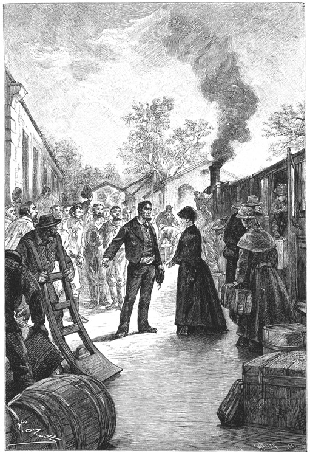... wurde von Zach Fren und seinen Gefährten begeistert empfangen.
Was wollte denn Godfrey?
Godfrey wurde in das Haus geführt und stand bald Mrs. Branican gegenüber.
»Sie sind es ... mein Kind, Sie, Godfrey? sagte sie, ihn bei der Hand nehmend.
– Er ist es, und was will er? murmelte Zach Fren ärgerlich, denn die Anwesenheit dieses Burschen schien ihm sehr lästig zu fallen.
– Was ich will? erwiderte Godfrey. Ich will Ihnen folgen, Mistreß, so weit Sie gehen, ich will mich nie mehr von Ihnen trennen ... Ich will mit Ihnen den Capitän Branican suchen, ihn finden, ihn nach San-Diego zurückbringen, ihn seinen Freunden ... seinem Vaterlande wiedergeben.«
Dolly konnte sich nicht fassen. Das Gesicht dieses Kindes ... es war John ... ihr geliebter John, den sie im Geiste sah.
Godfrey lag auf den Knien, erhob die Hände und bat flehentlich:
»Nehmen Sie mich mit ... Mistreß, nehmen Sie mich mit!
– Komm, mein Kind, komm!« rief Dolly und zog ihn an ihr Herz.
Am 12. September setzte sich die Karawane in Bewegung. Die Witterung war schön, die Hitze nicht groß, denn einige leichte Wolken milderten die Gluth der Sonnenstrahlen. Unter dem 31. Breitegrade und in dieser Jahreszeit stieg die Hitze im Innern des Landes schon an, und die Forschungsreisenden wissen nur allzu gut, wie furchtbar sie wird, wenn weder Regen noch Schatten sie in diesen Ebenen mildern.
Es war nur zu bedauern, daß Mrs. Branican die Reise nicht fünf oder sechs Monate früher antreten konnte, denn während des Winters wäre sie viel erträglicher gewesen. Wenn auch das Thermometer in dieser Jahreszeit manchmal bis zum Gefrierpunkt sinkt, so ist doch die Kälte weniger zu fürchten als die Hitze, welche die Quecksilbersäule im Schatten bis über vierzig Grad treibt. Vor dem Monat Mai lösen sich die Dünste in reichliche Regengüsse auf, wodurch sich die Cisternen füllen, so daß man nicht tagelang reisen muß, ohne auf Wasser zu stoßen. Die Wüste Australiens ist gegen die Karawanen grausamer als die Sahara, denn letztere hat doch Oasen.
Aber Mrs. Branican hatte weder in der Zeit, noch in der Richtung eine Wahl. Sie brach auf, weil sie aufbrechen mußte, sie wollte diesen furchtbaren Strapazen trotzen, weil sie ihnen trotzen mußte. Den Capitän John aufzufinden, ihn den Eingebornen zu entreißen, das verlangte keinen Aufschub, und sollte sie dabei zu Grunde gehen.
Die Karawane, die seit der Ankunft Godfreys aus einundvierzig Personen bestand, marschirte in folgender Weise. An der Spitze die fünfzehn Eingebornen. bekleidet mit einer Hose und einer Jacke, auf dem Kopfe einen Strohhut, die Füße nach ihrer Gewohnheit nackt. Sie waren mit einem Gewehre, einem Revolver und einem Schwerte bewaffnet und bildeten die Avantgarde unter dem Befehle eines Weißen, der selbst wieder Kundschafter war. Hinter ihnen zogen zwei Pferde einen Buggy, worin Mrs. Branican und ihre Dienerin Platz genommen hatten. Ein Segeltuch, das weggenommen werden konnte, schützte sie gegen Regen und Sturm. In einem zweiten Buggy saßen Zach Fren und Godfrey. Wenn auch jener zuerst nicht sehr erfreut war über die Ankunft des Burschen, so schloß er doch bald Freundschaft mit ihm, da er für Mrs. Branican so große Anhänglichkeit bewies. Hierauf kamen die vier Ochsenwagen, an den Seiten und rückwärts befanden sich die Männer des Tom Marix, die ganz wie ihr Befehlshaber gekleidet waren. Sie hatten dunkle Hosen, hohe Stiefeln, um die Taille einen Gürtel, auf dem Kopfe einen weißen Leinenhelm, und um den Oberkörper einen gerollten leichten Kautschukrock; bewaffnet waren sie wie die Eingebornen. Diese Leute waren zu Pferd und recognoscirten entweder den Weg oder sahen sich nach einem Lagerplatz für die Nacht um.
Auf solche Weise legte die Karawane täglich zwölf bis dreizehn englische Meilen zurück, manchmal durch dichte Wälder, wo die Wagen nur langsam vorwärts kamen. Abends übernahm Tom Marix die Bewachung des Lagers, und bei Sonnenaufgang brach man wieder auf.
Die Strecke zwischen Farina und Alice-Spring – ungefähr fünfhundertachtzig Kilometer oder dreihundertfünfzig Meilen – bot weder ernste Gefahren noch große Anstrengungen, und würde wahrscheinlich etwa dreißig Tage beanspruchen. Da man nun hierauf die Karawane angesichts der Wüste mit Kameelen ergänzen mußte, so würde man vor dem ersten Drittel des Monats October nicht weiter kommen.
Als die Expedition Farina verließ, zog sie mehrere hundert Meilen dem neuen Eisenbahnbau entlang; dann fuhr sie neben der Telegraphenlinie weiter. Da Tom Marix neben dem Wagen der Mrs. Branican ritt, fragte sie ihn über diese Linie.
»Sie wurde im Jahre 1870, erwiderte Tom Marix, sechzehn Jahre nach der Unabhängigkeitserklärung von Südaustralien, beschlossen und sollte vom Süden bis zum Norden des Continents, zwischen Port Adelaide und Port Darwin, reichen. Die Arbeiten wurden so rasch in die Hand genommen, daß die Linie im Jahre 1872 fertig war.
– Mußte man zu diesem Zwecke nicht den ganzen Continent in dieser Richtung untersuchen?
– Gewiß, und zwar verdanken wir diese Leistung einem unserer größten Forschungsreisenden, Stuart, der von 1860 bis 1861 diesen Weg genommen hat.
– Wer ist der Erbauer dieser Linie?
– Ein ebenso kühner wie tüchtiger Ingenieur Namens Todd, der Generalpostmeister von Adelaide, einer unserer Mitbürger, den Australien verehrt, wie er es auch verdient
– Hat er hier das nothwendige Material gefunden?
– Nein, Mistreß, erwiderte Tom Marix, er mußte die Isolatoren und die Drähte von Europa bringen lassen. Jetzt wäre freilich die Colonie im Stande, Alles für jedes beliebige industrielle Unternehmen zu liefern.
– Haben denn die Eingebornen diese Anlagen nicht zu zerstören versucht?
– Sie thaten im Anfange noch mehr. Sie vernichteten nämlich das Material, und so kamen denn auf einer Strecke von eintausendachthundertfünfzig Meilen fortwährende Kämpfe vor, die zuletzt doch lästig fielen und das ganze Unternehmen gefährdeten. Da kam denn Todd auf eine wahrhaft geniale Idee. Nachdem er sich einiger Häuptlinge bemächtigt hatte, ließ er ihnen mehrere heftige elektrische Schläge zukommen, worüber sie so entsetzt waren, daß ihre Kameraden nicht mehr wagten, sich den Arbeitern und dem Material zu nähern. So konnte die Linie vollendet werden und fungirt jetzt ganz regelmäßig.
– Wird sie nicht von der Polizei bewacht? fragte Mrs. Branican.
– Von der Polizei nicht, wohl aber durch Schwarze, die im Dienste der Gesellschaft stehen.
– Kommt diese Privatpolizei nie in die mittleren und östlichen Landestheile?
– Nie oder wenigstens sehr selten, Mistreß, da es so viel in den bewohnten Districten zu thun giebt.
– Wieso ist es denn Niemand eingefallen, diese schwarze Polizei den Indas auf die Spur zu schicken, als man erfuhr, daß der Capitän Branican von ihnen gefangen gehalten würde ... und das seit fünfzehn Jahren?
– Sie vergessen, Mistreß, daß weder wir noch Sie etwas davon wußten und es erst nach der Auffindung Harry Felton's bekannt wurde!
– Das ist richtig, erwiderte Dolly, seit einigen Wochen!
– Ich weiß übrigens, fuhr Tom Marix fort, daß die schwarze Polizei den Befehl erhalten hat, die Gegenden von Tasman- oder Dampierland zu durchstreifen, und daß eine starke Abtheilung dahin gesendet werden soll; aber ich fürchte ...«
Tom Marix hielt inne. Mrs. Branican bemerkte nicht sein Zögern.
So sicher wie Tom Marix seine übernommenen Pflichten bis zu Ende führen wollte, sah er doch keinen Erfolg von der ganzen Expedition, denn er wußte, wie schwer diese Nomadenvölker zu erreichen sind. Auch konnte er weder das blinde Vertrauen der Mrs. Branican, noch die Ueberzeugung Zach Fren's, noch die Zuversicht Godfreys theilen: doch wollte er, das müssen wir nochmals wiederholen, seine Pflicht thun.
Am 15. September lagerte die Karawane bei dem Dorfe Boorloo, wo die telegraphische Linie fast in rechtem Winkel gegen Westen abbiegt. In der Entfernung von ungefähr zwölf Meilen übersetzt sie den Cabanna, was wohl den ehernen Fäden auf den Pfählen ein leichtes war, nicht aber einer Karawane. Man mußte daher eine Furt suchen, die der junge Matrose schnell entdeckte, indem er kühn in den reißenden Fluß sprang.
Am 20. September kam die Karawane nach Emerald-Spring, nachdem sie oft Wälder mit Bäumen in einer Höhe von zweihundert Fuß durchzogen hatte. So sehr Dolly an den Reichthum der Wälder von Californien aus gewohnt war, so hätte sie doch diese großartige Vegetation bewundern müssen, wenn ihre Gedanken nicht immer in jener Einöde gewesen wären, wo die sandige Düne kaum einiges magere Gestrüpp hervorbringt.
Tom Marix kannte das Land sehr gut, und Mrs. Branican hätte keinen besseren Führer finden können, der sich mit so viel Eifer und Einsicht der Sache widmete.
Tom Marix fand aber auch in dem jungen Godfrey eine kräftige und entschlossene Stütze und er mußte sich oft über den Eifer dieses vierzehnjährigen Knaben wundern. Godfrey erklärte, wenn es nothwendig wäre, so wolle er allein in das Innere vordringen. Kräftig für sein Alter, abgehärtet durch das Seemannsleben, war er oft der Karawane voraus, so daß man ihn manchmal gar nicht sah. Blieb er auf seinem Platze, so geschah es nur auf den ausdrücklichen Befehl Dollys. Weder Zach Fren noch Tom Marix würden bei ihm das erreicht haben, was sie nur durch einen Blick erlangte. Wenn dieser nicht ihr Sohn wäre, so sollte er es, wenn nicht nach den Gesetzen der Natur, wenigstens durch Adoption werden. Godfrey sollte sie nie mehr verlassen ... und John würde auch die Liebe theilen, die sie für dieses Kind fühlte.
Eines Tages blieb er sehr lange abwesend, denn er war der Karawane schon einige Meilen voraus.
»Mein Kind, sagte sie zu ihm, Du mußt mir versprechen, Dich nicht mehr ohne meine Einwilligung zu entfernen. Wenn ich Dich fortgehen sehe, bin ich unruhig, bis Du wieder da bist. Du läßt uns immer stundenlang ohne jede Nachricht.
– Mrs. Dolly, erwiderte er, ich muß doch recognosciren ... Man hatte einen Nomadenstamm signalisirt, der am Warmercreek lagere ... Ich wollte den Häuptling besuchen und ihn fragen ...
– Was hat er gesagt? fragte Dolly.
– Er hatte von einem Weißen sprechen hören, der von Westen kam und die Richtung gegen Queensland einschlug.
– Wer war dieser Mann?
– Ich verstand schließlich, daß es sich um Harry Felton handelte, und nicht um den Capitän Branican. Aber wir werden ihn doch finden ... ja, wir werden ihn finden ... Ach, Mrs. Dolly, ich liebe ihn wie Sie ihn lieben, Sie, die Sie für mich eine Mutter sind.
– Eine Mutter ... sagte Mrs. Branican.
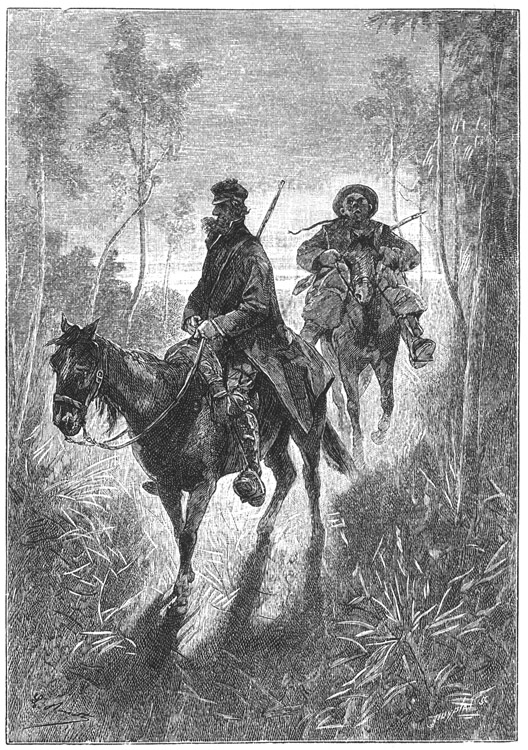Am folgenden Tage brachen sie beide frühzeitig auf.
– Doch ich kenne Sie, während ich ihn, den Capitän John, nie gesehen habe ... Und ohne diese Photographie, die Sie mir gegeben haben ... die ich immer bei mir trage ... zu der ich spreche ... die mir zu antworten scheint ...
– Du wirst ihn eines Tages kennen lernen, mein Kind, erwiderte Dolly, und er wird Dich ebenso lieb haben wie ich.«
Am 24. September machte die Karawane bei William-Spring, zweiundvierzig Meilen nördlich von Emerald, Halt.

Zach Fren öffnete die Thür und prallte überrascht zurück.
Am 29. September verließ sie die Station Umbum und zwei Tage darauf erreichte sie die Station The-Peak, die erst unlängst für den Telegraphendienst gegründet worden war.
Beim Aufbruche von hier bekam die Karawane einen Vorgeschmack von den Strapazen, welche ihr der Durchzug der Wüste Australiens bereiten sollte. Sie mußte über einen sehr trockenen Boden bis zu den Ufern des Macumbaflusses ziehen, dann über diesen, und hierauf begann ein nicht weniger beschwerlicher Marsch bis zu der Station Lady-Charlotte.
Auf diesen ungeheuren Ebenen, wo nur hier und da einige Baumgruppen standen, war immer noch Wild genug, wenn dies der richtige Ausdruck ist. Da sprang eine kleinere Art Känguruhs, die sogenannten Wallabis, in mächtigen Sätzen dahin, dort bemerkte man einige Casuare mit ihrem herausfordernden und stolzen Blick, gleich dem des Adlers. Diese Vögel haben aber das vor ihrem Könige voraus, daß sie ein fettes und nahrhaftes Fleisch, gleich dem des Rindes, liefern. Tom Marix machte seine Gefährten aufmerksam, daß die hohlen Gummibäume gewöhnlich von Bären als Schlupfwinkel benutzt würden, und sie hatten auch bald Gelegenheit, einen derselben zu tödten.
Von den Eingebornen wurde die Karawane bisher noch gar nicht belästigt, denn diese haben nördlich, östlich und westlich von der Telegraphenlinie ihre Lager.
Je weiter sie in diese Gegenden, die immer trockener wurden, vordrangen, desto mehr konnte Tom Marix den Instinct der Ochsen, welche das Gepäck zogen, benutzen. Es scheint, daß sich dieser Instinct in der Rasse seit ihrer Importirung nach Australien entwickelt hat, und daß sich diese Thiere immer zu den Gewässern hinwenden, wo sie ihren Durst löschen können. Sie täuschen sich selten, und die Leute brauchen ihnen nur zu folgen, was unter Umständen sehr werthvoll ist.
Am 7. October blieben die Ochsen des vordersten Wagens plötzlich stehen, was auch die anderen Gespanne sofort thaten. Die Führer trieben sie vergebens an, und es gelang ihnen nicht, sie nur einen Schritt weiter vorwärts zu bringen.
Tom Marix, der sofort davon in Kenntniß gesetzt wurde, ritt zu dem Wagen der Mrs. Branican hin.
»Ich weiß, was das ist, sagte er; wenn wir noch keinen Eingebornen auf unserer Route begegnet sind, so kreuzen wir jetzt einen Pfad, den sie gewöhnlich benutzen, und da unsere Ochsen ihre Spuren riechen, so weigern sie sich weiterzugehen.
– Warum mag das sein? fragte Dolly.
– Den Grund kennt man nicht genau. Aber es ist wahrscheinlich, daß die ersten Ochsen, die in Australien importirt wurden, von den Eingebornen so mißhandelt wurden, daß sie sich dies nicht nur merkten, sondern auch auf die späteren Generationen vererbten.«
Mag nun diese Erklärung richtig sein oder nicht, man brachte die Ochsen nicht dazu, ihren Weg weiter fortzusetzen. Man mußte sie ausspannen, sie umdrehen und mit Peitschenhieben zwingen, zwanzig Schritte nach rückwärts zu machen. Auf solche Weise überschritten sie den Pfad, und als sie wieder eingespannt wurden, setzten sie den Weg ruhig fort.
Als die Karawane die Ufer das Flusses Macumba erreichte, konnte jeder derselben, Mensch wie Thier, seinen Durst löschen.
Am 10. October machten sie in der Station Lady-Charlotte Halt, nachdem sie dreihundertzwanzig Meilen von Farina aus zurückgelegt hatten. Sie befanden sich jetzt an der Grenze zwischen Südaustralien und Alexandra-Land, das von Stuart im Jahre 1860 erforscht wurde.
Auf der Station Lady-Charlotte ersuchte Tom Marix Mrs. Branican um eine Rast von vierundzwanzig Stunden, da die Zugthiere wegen der großen Hitze sehr abgemattet waren. Dolly sah das ein, und man lagerte sich nun, so gut es ging. Die Station bestand nur aus einigen Hütten, deren Bevölkerung die Karawane während eines Tages verdreifachte. Ein Trapper, der in der Nähe ein hübsches Haus hatte, bot Mrs. Branican eine bequemere Unterkunft an, die sie auch annahm, indem sie sich nach Waldek-Hill begab.
Dieser Trapper war nur Pächter einer jener ungeheuren Besitzungen, Runs genannt, die sich in Australien vorfinden. Ein solcher Run umfaßt bis sechstausend Hektar, besonders in der Provinz Victoria. Obgleich Waldek-Hill eine solche Größe nicht hatte, so war es doch nicht unbedeutend. Umgeben von Pallisaden, diente die Ansiedlung besonders zur Schafzucht, weshalb eine Menge Schäfer, Züchter und andere Leute mehr da waren. Der salzige Boden brachte es mit sich, daß man gerade hier einen günstigen Platz für die Schafzucht erkannte.
Um diese Zeit begann eben in Waldek-Hill die Schafschur, und seit einigen Tagen befanden sich eine Menge herumreisender Scheerer dort, um ihr einträgliches Gewerbe auszuüben.
Als Mrs. Branican in Begleitung von Zach Fren die Pallisaden von Waldek-Hill durchschritten hatte, war sie von dem regen Leben überrascht, welches dort herrschte. Die Arbeiter verloren keine Minute. Das Krächzen der Scheere, das Blöcken der Schafe, die Rufe der Männer zu einander, dieses Kommen und Gehen mit den Körben, in denen die Wolle fortgetragen wurde, war sehr interessant. Ueberall, wo viele Arbeiter sind, müssen auch Aufseher sein, von denen sich auch einige in Waldek-Hill befanden. Auf solche Weise verdienen sich Frauen wie Männer ihren Lebensunterhalt.
Wie groß war aber die Ueberraschung der Mrs. Branican – eigentlich nicht Ueberraschung, sondern Bestürzung – als sie plötzlich hinter sich ihren Namen hörte.
Eine Frau stürzte herbei, warf sich auf die Knie und hob flehend die Hände zu ihr empor ...
Es war Jane Burker ... Jane, weniger durch die Jahre als durch Kummer gealtert, das Haar ergraut, mit fast unerkennbaren Gesichtszügen, die Dolly aber doch erkannte.
»Jane!« rief sie.
Dolly hob sie auf, die beiden Cousinen lagen sich in den Armen.
Welches Leben führten die Burker's seit zwölf Jahren? Ein elendes, sogar ein verbrecherisches, wenigstens was den Gatten der unglücklichen Jane anbelangt.
Als Len Burker sich den Nachstellungen in San-Diego entzog, flüchtete er nach Mazatlan, einem Hafen an der westlichen Küste von Mexiko. Man erinnert sich, daß er im Prospect-House die Mulattin Nô zur Bewachung Dollys, die damals noch in geistiger Umnachtung war, zurückgelassen hatte. Als aber kurze Zeit darauf die unglückliche Kranke in die Heilanstalt des Dr. Brumley übertragen wurde, reiste die Mulattin ihrem Herrn nach, dessen Zufluchtsort sie kannte.
Len Burker ließ sich unter falschem Namen in Mazatlan nieder, so daß ihn die californische Polizei nicht entdecken konnte. Uebrigens blieb er auch nur fünf bis sechs Wochen in dieser Stadt, denn mit dem wenigen Gelde – er besaß nur noch etwa dreitausend Piaster unterschlagener Beträge – konnte er in den Vereinigten Staaten nicht mehr viel anfangen, und er beschloß daher, Amerika ganz zu verlassen. Australien schien ihm ein günstiges Feld zu sein, wo es noch etwas zu »machen« gebe, bevor er seinen letzten Dollar ausgegeben hätte.
Jane, die unter der unumschränkten Herrschaft ihres Mannes stand, hatte nicht die Kraft, ihm entgegenzutreten; Mrs. Branican, ihre einzige Verwandte, wahnsinnig; Capitän John todt, und es war über sein Schicksal kein Zweifel mehr ... der »Franklin« war mit Mann und Maus untergegangen. Nichts konnte daher Jane ihrem traurigen Schicksale, dem sie Len Burker entgegenführte, entreißen und sie mußte unter solchen Umständen mit nach Australien auswandern.
Beide kamen in Sydney an und hier verwendete Len seine letzten Hilfsquellen zu neuen Betrügereien, die er aber mit größerer Schlauheit verübte, als in San-Diego. Dann ließ er sich in gewagte Speculationen ein, bei denen er das ganze Geld wieder verlor, das er bei seinen unehrlichen Gebahrungen im Anfange »verdient« hatte.
Achtzehn Monate nach seiner Flucht von San-Diego mußte er auf gleiche Weise Sydney verlassen und sein Glück an einem anderen Orte suchen. Doch dieses war ihm auch in Brisbane nicht mehr hold; er flüchtete sich von neuem und begab sich in die entlegensten Districte von Queensland.
Jane folgte ihm und mußte die schwersten Arbeiten verrichten, um nur die nothwendigsten Bedürfnisse bestreiten zu können. Gemartert und gepeinigt von dieser Mulattin, die noch immer der böse Geist Len Burker's war, wollte die Unglückliche oft entfliehen, oft ihrem elenden Dasein ein Ende bereiten. Das war sie aber bei ihrem schwachen, unentschlossenen Charakter nicht im Stande. Ein armer Hund, der Schläge erhält und das Haus nicht zu verlassen wagt!
Um diese Zeit las Len Burker in den Zeitungen von den Versuchen, die Ueberlebenden des »Franklin« aufzufinden. Die zwei Fahrten des »Dolly-Hope«, welche auf die Initiative der Mrs. Branican hin unternommen wurden, erklärten ihm die ganze Sachlage: 1. Daß Dolly wieder ihre Vernunft erlangt hatte, 2. daß sie das ungeheure Vermögen, welches sie von ihrem Onkel Edward Starter geerbt hatte, für diese beiden Unternehmungen verwende. Er erfuhr auch den Mißerfolg dieser Fahrten und die Gewißheit, daß der letzte Ueberlebende des »Franklin« auf der Insel Browse gestorben sei.
Zwischen dem Vermögen Dollys und Janes, ihrer einzigen Erbin, stand kein Kind, kein Gatte mehr, und so große Schicksalsschläge mußten ihre Gesundheit erschüttert haben. Das sagte sich Burker. Aber was konnte er versuchen? Die Verbindung mit Mrs. Branican wieder aufzunehmen war unmöglich. Sie durch Vermittlung Junes um Hilfe anzuflehen, traute er sich nicht, da er verfolgt wurde und bei dieser Gelegenheit leicht verhaftet werden konnte. Wenn aber Dolly starb, durch welches Mittel konnte er verhindern, daß die Erbschaft Jane – vielmehr ihm – nicht entgehe?
Wir wissen noch, daß ungefähr sieben Jahre seit der zweiten Aussendung des »Dolly-Hope« verflossen waren, als durch die Auffindung Harry Felton's die Katastrophe des »Franklin« wieder zur Frage gestellt worden war.
Während dieser Zeit wurde die Lage Len Burker's noch elender als sie schon war. Da er auf seiner verbrecherischen Laufbahn ohne jeden Erfolg noch weiter schritt, so hatte er nicht einmal mehr ein Heim, und Jane sah sich dem Elende eines Nomadenlebens ausgesetzt.
Die Mulattin Nô war gestorben; aber Mrs. Burker brachte der Tod dieser Peinigerin, deren Einfluß auf ihren Gatten so verderblich war, keine Erleichterung. Da er jetzt auf seiner Laufbahn keine Gefährtin mehr hatte, so zwang er seine Frau, ihm in jene Länder zu folgen, wo die Verbrechen so häufig unbestraft bleiben. Nach Erschöpfung der Goldminen in der Provinz Victoria und nach dem Fortzuge der Tausende von Goldsuchern, wurde dieses Land von einer Masse Menschen überfluthet, die sich wenig um die Gesetze kümmerten. So hatte sich bald eine Classe jener gefürchteten Wegelagerer gebildet, die in den Districten Australiens unter dem Namen »Larrikius« bekannt sind.
Solchen Leuten schloß sich Len Burker an, als er wegen der Verfolgungen keine Stadt mehr betreten konnte, und je mehr er in die entlegeneren, der Polizei fern liegenden Gegenden kam, desto mehr wurde er ein Freund jener herumziehenden Verbrecher, die unter dem Namen »Bushrangers« bekannt sind und die bis heute noch nicht verschwanden. Auf einer solch niedrigen Stufe befand sich Len Burker! An wie viel Plünderungen, Eisenbahnüberfällen und Verbrechen aller Art er in den letzten Jahren theilgenommen hatte, hätte nur er sagen können. Ja, nur er, denn Jane, die in irgend einer Ortschaft zurückgelassen wurde, wußte nichts von den verbrecherischen Thaten. Vielleicht klebte an den Händen dieses Mannes sogar Blut, und doch wagte sie nicht, ihn zu verrathen.
So waren zwölf Jahre verflossen und die Auffindung Harry Felton's hatte von neuem die öffentliche Aufmerksamkeit auf den »Franklin« gelenkt. Da die verschiedensten Zeitungen und Blätter Australiens diese Nachricht brachten, so konnte sie auch Len Burker nicht verborgen bleiben, der sie in dem »Sydney Morning Herald« in einer kleinen Ortschaft von Queensland las, wohin er sich nach einem Plünderungszuge vor der nachsetzenden Polizei geflüchtet hatte.
Zu derselben Zeit, als er von der Auffindung Harry Felton's las, vernahm er auch, daß Mrs. Branican San-Diego verlassen habe und nach Sydney komme, um mit dem zweiten Officier sprechen zu können. Fast ebenso rasch verbreitete sich das Gerücht, daß Harry Felton gestorben war, nachdem er sichere Angaben gemacht hatte.
Ungefähr vierzehn Tage später hörte Len Burker, daß Mrs. Branican in Adelaïde ausgestiegen sei, um eine Karawane zu organisiren, an der sie theilnehmen würde und die den Zweck habe, die Wüsten der Mitte und des Nordwestens von Australien zu durchforschen.
Als Jane die Ankunft ihrer Cousine auf dem Continente erfuhr, war ihr erster Gedanke, sich zu ihr zu flüchten, aber da sie die Drohungen Len Burker's fürchtete, wagte sie es nicht.
Jetzt entwarf der Elende einen Plan, der ihm endlich die gewünschte Zukunft erschließen sollte. Die entscheidende Stunde war gekommen. Er wollte Mrs. Branican auf ihrer Route begegnen, sie bitten, sie begleiten zu dürfen, was Alles sicher ganz leicht zu erlangen sein würde. Es war kaum wahrscheinlich, daß der Capitän John, angenommen er lebte noch, bei den Eingebornen gesunden würde, und es war möglich, daß Dolly den Strapazen dieser gefährlichen Reise unterlag. Ihr ganzes Vermögen käme dann auf Jane, ihre einzige Verwandte ... Wer weiß? ... Es giebt so viele Zufälle ... wenn man das Talent hat, sie herbeizuführen ...
Wohl verstanden, Len Burker hütete sich wohl, Jane von seiner Absicht, sich wieder Mrs. Branican zu nähern, in Kenntniß zu setzen. Er trennte sich von den Wegelagerern, ohne auf ihre Dienste für später vollständig zu verzichten, wenn es sich von neuem um einen Handstreich handelte. In Begleitung Janes verließ er Queensland und begab sich nach Lady-Charlotte, das nur etwa hundert Meilen entfernt war und welche Ortschaft die Karawane auf dem Wege nach Alice-Spring berühren mußte. So flossen drei Wochen hin. Len Burker befand sich in dem »Run« Waldek-Hill als Aufseher; hier erwartete er Dolly, fest entschlossen, vor keinem Verbrechen zurückzuschrecken, das ihn in den Besitz der Erbschaft bringen konnte.
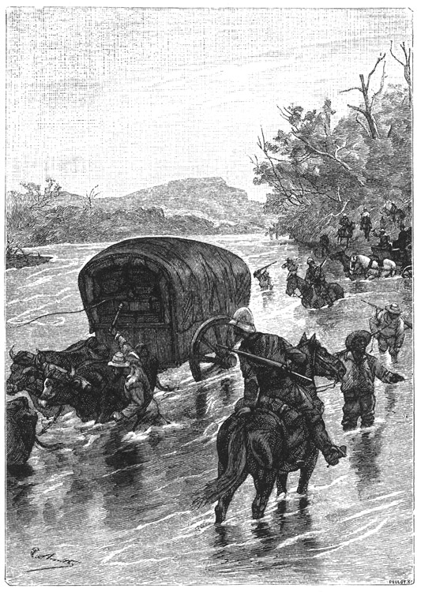Man mußte daher eine Furt suchen.
Als Jane nach Lady-Charlotte kam, ahnte sie noch gar nichts. Wie groß mußte ihre Ueberraschung, man möchte eher sagen, Bestürzung gewesen sein, als sie sich so unerwartet Mrs. Branican gegenüber befand.
Len Burker war damals fünfundvierzig Jahre alt und er hatte noch immer jenen lauernden falschen Blick, jenes heuchlerische Gesicht, das sofort Mißtrauen erweckte.
Was Jane anbelangt, so schien sie um zehn Jahre älter zu sein, als sie wirklich war. Die Gesichtszüge waren verwelkt, die Haare an den Schläfen gebleicht, der ganze Körper schwach. Aber ihr Auge bekam doch Glanz, der durch die Leiden schon fast ganz erloschen war, als sie Dolly erblickte.
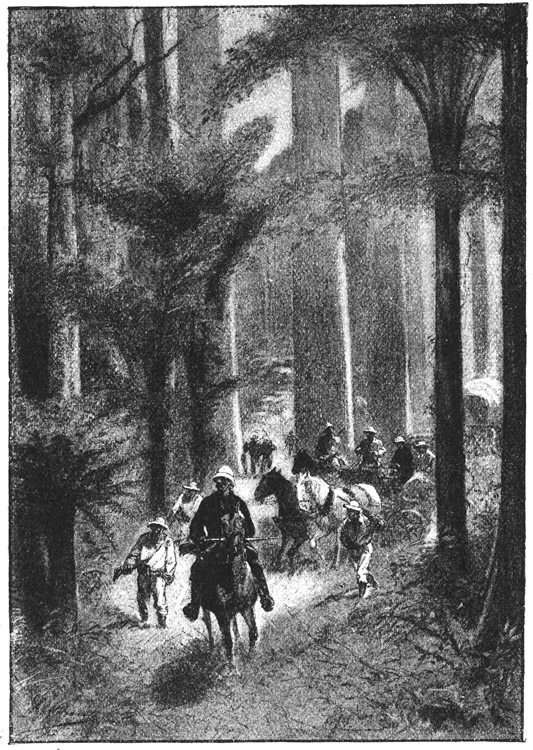Mrs. Branican hätte keinen besseren Führer finden können.
Nachdem Mrs. Branican Jane in ihre Arme geschlossen hatte, führte sie dieselbe in das Zimmer, das ihr von dem Farmer in liebenswürdiger Weise zur Verfügung gestellt worden war. Hier gaben sich die beiden Frauen ganz ihren Gefühlen hin. Dolly erinnerte sich nur an die Pflege, mit der Jane sie im Prospect-House umgeben hatte. Sie hatte ihr nichts vorzuwerfen und war bereit, ihrem Gatten zu verzeihen, wenn er bereit wäre, sich nicht mehr von ihnen zu trennen.
Beide sprachen lange miteinander. Jane erzählte von ihrer Vergangenheit nur das, was sie sagen konnte, ohne Len Burker zu compromittiren, und Mrs. Branican fragte sie auch nicht weiter. Sie fühlte, wie sehr diese Arme gelitten hatte und noch litt. War das nicht genug, daß sie ihres Mitleides, ihrer Liebe würdig war? Die Lage des Capitän John, die unerschütterliche Hoffnung, ihn bald zu finden, die Anstrengungen, die sie machen werde, um dahin zu gelangen, nur davon sprach sie ... dann auch von ihrem kleinen, lieben Wat ... Und als sie sogar sagte, daß er noch lebe, da wurde Jane so bleich, daß Dolly glaubte, die Arme befinde sich unwohl.
Jane gelang es jedoch, sich zu beherrschen, und nun erzählte sie ihr trauriges Leben von dem Tage an, wo ihre Cousine wahnsinnig geworden war, bis zu jenem, der Len Burker zu der Flucht aus San-Diego zwang.
»Ist es möglich, arme Jane, sagte dann Dolly, ist es möglich, daß ich in den vierzehn Monaten, während welcher Du mich pflegtest, keinen einzigen lichten Augenblick hatte? ... Ist es möglich, daß ich mich gar nicht mehr an meinen John erinnerte?
– Nein ... Dolly!
– Nun ... Jane ... so will ich Dir jetzt sagen, was ich Niemandem gesagt habe ... Als ich wieder zur Vernunft kam ... ja ... da hatte ich die Ahnung, daß John noch lebe, daß ich nicht Witwe sei ... und es schien mir auch ...
– Auch? ...«
Ihre Augen drückten eine unaussprechliche Furcht aus, der Blick war verstört, sie erwartete voll Angst, was Dolly sagen werde.
»Ja, Jane, hub Dolly wieder an, ich hatte das Gefühl, daß ich immer noch Mutter war.«
Jane sprang auf und schlug mit den Händen herum, als wollte sie ein entsetzliches Bild verscheuchen; ihre Lippen bewegten sich, ohne daß es ihr gelang, nur ein Wort herauszubringen. Dolly, die ganz in Gedanken versunken war, bemerkte von alledem nichts, und Jane war äußerlich wieder ruhiger geworden, als ihr Gatte auf der Schwelle erschien.
Er blieb an der Thür stehen, und sah seine Frau an, als wollte er sagen:
Jane, die unter seiner unbesiegbaren Herrschaft stand, fiel vor diesem Blick in ein Nichts zusammen.
Mrs. Branican verstand ihn. Der Blick Len Burker's erinnerte sie an seine Vergangenheit und an die Leiden Janes. Aber diese Auflehnung ihres Herzens dauerte nur einen Augenblick und sie war entschlossen, seine Leidenschaften zu bezähmen, um sich nie mehr von Jane zu trennen.
»Len Burker, sagte sie, Sie wissen, warum ich nach Australien gekommen bin; es ist eine Pflicht, die ich verfolge, bis ich John wiederfinden werde, denn er lebt. Da Sie der Zufall auf meinen Weg gebracht hat, und ich Jane, meine einzige Verwandte, wiedergefunden habe, so lassen Sie mir sie und erlauben Sie, daß sie mich begleitet, wie sie es wünscht ...«
Len Burker zögerte mit der Antwort. Da er fühlte, daß sie gegen ihn voreingenommen sei, so wollte er, daß Mrs. Branican ihren Antrag noch in der Weise ergänze, daß sie ihn ersuchte, sich der Karawane anzuschließen. Nun, da Dolly aber schwieg, glaubte er doch, daß er sich selbst anbieten müsse.
»Dolly, sagte er, ich entspreche sofort ohne Umschweife Ihrem Verlangen und war schon darauf gefaßt. Ich bin vollständig damit einverstanden, daß meine Frau bei Ihnen bleibe. Ja, das Leben ist uns Beiden sehr hart geworden, seitdem mich mein Mißgeschick gezwungen hat, San-Diego zu verlassen. Wir haben viel in diesen vierzehn Jahren gelitten, und Sie sehen, daß mir das Glück auch auf der australischen Erde nicht hold war, da ich mir meinen Lebensunterhalt von einem Tage zum anderen suche, und wenn die Schafschur hier in Waldek-Hill vorüber sein wird, weiß ich nicht, wo ich Arbeit finden werde. Da es mir nun aber leid sein würde, mich von Jane trennen zu müssen, so bitte ich meinerseits um die Erlaubniß, mich der Expedition anschließen zu dürfen. Ich kenne die Eingebornen, mit denen ich schon oft zu thun hatte, und kann daher von großem Nutzen sein. Zweifeln Sie nicht, Dolly, daß ich mein Möglichstes thun werde, um zur Befreiung des Capitän John nach Kräften beizutragen ...«
Dolly sah ein, daß sie nur unter dieser Bedingung Jane als Gefährtin erhalten werde. Da er doch bis zu einem gewissen Grade auch von Nutzen sein konnte, so erwiderte schließlich Mrs. Branican, aber in sehr kühlem Tone:
»Einverstanden, Len Burker, und machen Sie sich zum Aufbruche fertig, denn morgen verlassen wir frühzeitig Lady-Charlotte ...
– Ich werde bereit sein,« erwiderte Len Burker, der das Zimmer verließ, ohne daß er gewagt hätte, Mrs. Branican die Hand zu geben.
Als Zach Fren hörte, daß Len Burker sich an der Expedition betheiligen werde, war er wenig erbaut, denn er kannte diesen Mann, dessen Betrügereien an Dolly ihm Mr. William Andrew seinerzeit völlig enthüllt hatte. Da er nun wußte, unter welchen Umständen dieser betrügerische Curator und alte Sünder von San-Diego flüchten mußte, konnte er sich auch von dem Leben, daß er seit vierzehn Jahren in Australien führte, viel Schlechtes denken ... Doch machte er keine weitere Bemerkung, da er sah, wie glücklich Dolly sich fühlte, Jane in ihrer Nähe zu haben; in seinem Innern aber nahm er sich vor, Len Burker nicht aus den Augen zu verlieren.
Dieser Tag verlief ohne weiteren Zwischenfall. Len Burker, der nicht mehr gesehen wurde, traf seine Vorbereitungen zur Abreise und regelte seine Angelegenheit mit dem Squatter von Waldek-Hill. Letzterer machte ihm weiter keine Schwierigkeiten und erbot sich sogar, seinem ehemaligen Aufseher ein Pferd zur Verfügung zu stellen, damit er die Karawane bis Alice-Spring begleiten könne, wo sie reorganisirt werden sollte.
Dolly und Jane blieben den ganzen Nachmittag und Abend im Hause von Waldek-Hill. Dolly vermied es, von Len Burker zu sprechen und machte nicht die geringste Anspielung auf das, was seit der Flucht von San Diego vorgegangen war, da sie einsah, daß Jane dies nicht sagen konnte.
An jenem Abende kamen weder Tom Marix noch Godfrey in die Farm von Waldek-Hill, da sie auf Recognoscirung nach den ansässigen Eingebornen geritten waren, die in der Nähe von Lady-Charlotte ihre Dörfer hatten. Erst am folgenden Tage hatte Mrs. Branican Gelegenheit, Jane ihren Adoptivsohn Godfrey vorzustellen.
Jane war von der auffallenden Aehnlichkeit dieses Knaben mit dem Capitän John so betroffen, daß sie ihn nicht anzusehen wagte. Welche Gefühle durchwogten ihre Brust, als ihr Dolly erzählte, unter welchen Umständen sie ihm an Bord des »Brisbane« begegnet war ... ein Findelkind aus den Straßen von San-Diego, im Wat-House erzogen ... ungefähr vierzehn Jahre alt ...
Jane hörte, bleich wie der Tod, diesen Worten mit der größten Bestürzung zu.
Als Dolly sie allein ließ, fiel sie auf die Knie und rang die Hände; dann belebten sich ihre Züge ...
»Er! ... Er! rief sie bewegt aus. Er! ... bei ihr! ... Gott hat es so gewollt!«
Einen Augenblick darauf verließ Jane Waldek-Hill und eilte in die Hütte, die ihr und ihrem Gatten als Wohnung diente. Len Burker schnürte eben ein Bündel zu, in dem sich einige Kleidungsstücke und andere nothwendige Sachen für die Reise befanden. Als er Jane bleich hereinstürzen sah, erschrak er.
»Was giebt es? fragte er barsch. Sprich doch! ... Wirst Du sprechen? ... Was giebt es?
– Er lebt! rief Jane ... Er ist hier ... bei seiner Mutter ... er, den wir für ...
– Bei seiner Mutter ... Er lebt ... Er? ... erwiderte Len Burker, der wie vom Blitze getroffen dastand. Er hatte nur allzugut verstanden, wer »Er« war.
– Er! ... wiederholte Jane. Er ... das zweite Kind Johns und Dollys.«
Eine kurze Erklärung wird genügen, um uns mit dem bekannt zu machen, was vor Jahren im Prospect-House vorgefallen war.
Einen Monat nach der Uebersiedlung in das Haus zu San-Diego bemerkten Mr. und Mrs. Burker, daß die geisteskranke Dolly zum zweitenmale Mutter werden sollte. Geschickt von der Mulattin Nô bewacht, wurde Dolly, trotz der flehentlichen Bitten Janes, vor allen Freunden und Bekannten verborgen gehalten, indem man ihre Krankheit zum Vorwande nahm. Sieben Monate später brachte die unglückliche Frau ein zweites Kind zur Welt, ohne daß eine Spur davon in ihrer Erinnerung haften geblieben wäre. Da um diese Zeit der Tod des Capitän John schon allgemein angenommen wurde, so durchkreuzte dieses Kind auf einmal die Hoffnungen Len Burker's auf die Erbschaft Dollys. Aus diesem Grunde wurde nun das ganze Dienstpersonal im Prospect-House entlassen, und Dolly von allen Besuchern ferngehalten, ohne daß Jane sich diesen verbrecherischen Vorgängen ihres Mannes hätte widersetzen können. Das Kind wurde einige Stunden nach seiner Geburt von Nô in einer Straße von San-Diego ausgesetzt, glücklicherweise von einem Vorübergehenden gefunden und in das Findelhaus gebracht. Acht Jahre nach der Gründung von Wat-House ging der Knabe zur See. Jetzt erklärt sich die große Aehnlichkeit Godfreys mit dem Capitän John, seinem Vater, und jetzt sind uns die Gefühle verständlich, welche Dolly, die noch immer Mutter war, ohne es zu wissen, zu diesem Kinde hinzogen.
»Ja, Len, rief Jane, er ist es! Es ist ihr Sohn! ... Wir müssen Alles gestehen.«
Aber dies hätte von neuem seine Pläne durchkreuzt. Er fluchte, drohte und schwor; dann faßte er Jane bei der Hand, sah ihr fest in die Augen und sagte:
»Im Interesse Dollys ... wie in dem Godfreys ... rathe ich Dir, zu schweigen.«
Es war kein Zweifel, Godfrey war das zweite Kind des Ehepaares Branican. Diese Liebe, welche Dolly gleich vom ersten Anblicke zu dem Knaben hatte, quoll nur aus dem mütterlichen Instinct. Aber es blieb ihr ganz unbekannt, daß dieser Knabe ihr Sohn war, und wie hätte sie es jemals erfahren können, da Jane, durch die Drohungen Len Burker's eingeschüchtert, gezwungen wurde, zu schweigen, um Godfrey in keine Gefahr zu bringen. Alles einzugestehen war so viel, als den Knaben der Gnade Len Burker's zu überliefern, dessen sich der Elende, der ihn schon einmal dem Tode ausgesetzt hatte, auf diesem gefährlichen Zuge zu entledigen gewußt hätte ... Mutter und Sohn durften nie wissen, welche Bande sie verknüpften.
Als Len Burker Godfrey zum erstenmale sah, da zweifelte er wegen der frappirenden Aehnlichkeit mit John nicht im geringsten, daß er das ausgesetzte Kind sei. Jetzt, wo er den Untergang John Branican's als sicher ansah, erscheint auf einmal dieses Kind! Nun, Tod und Teufel diesem Knaben, wenn Jane das Geheimniß ausplaudern würde! Aber Len Burker konnte beruhigt sein; Jane würde schweigen.
Am 11. October brach die Karawane nach vierundzwanzigstündiger Rast wieder auf. Jane nahm in dem Buggy neben Mrs. Branican Platz; Len Burker, der ein ziemlich gutes Pferd hatte, ritt hin und her und sprach besonders gern mit Tom Marix von den Ländern, welche sie längs der telegraphischen Linie zu durchziehen hatten. Er mied Zach Fren, der aus seiner Antipathie gegen ihn kein Hehl machte: ebenso ging er Godfrey aus dem Wege, dessen Blick er nicht ertragen konnte. So oft der Knabe zu dem Buggy der Mrs. Branican ritt, um mit Dolly und Jane zu sprechen, zog sich Len Burker zurück, um nicht bei ihm sein zu müssen.
Je tiefer die Expedition in das Innere vordrang, desto öder wurde das Land. Hier und da standen einige Farmen, wo sich die Arbeit auf die Schafzucht beschränkte, endlose Prairien breiteten sich aus, und die Gummibäume und Eukalypten bildeten nur noch einzelne Gruppen, die in nichts den Wäldern von Südaustralien glichen.
Am 12. October, Abends sechs Uhr, lagerte die Karawane an den Ufern des Finke-River, in der Nähe des Danielberges, der im Westen emporsteigt. Die Geographen sehen diesen Fluß, den die Eingebornen Larra-Larra nennen, für den größten von Centralaustralien an.
Tom Marix machte Mrs. Branican im Laufe des Abends darauf aufmerksam, während Zach Fren, Len und Jane Burker ihr unter einem der Zelte Gesellschaft leisteten.
»Man wollte wissen, sagte Tom Marix, ob der Finke-River seine Wasser in den ungeheuren Eyresee ergieße, den wir jenseits von Farina-Town umgangen haben. Nun, diese Frage ist von dem berühmten Forscher David Lindsay im Jahre 1885 gelöst worden, der von der Station The-Peak, die wir auch berührt haben, dem Flusse bis zu der Stelle folgte, wo er im Sande verschwindet, nämlich nordöstlich von Dalhousie. Aber man glaubt, daß er in der Regenzeit seine Fluthen bis in den Eyresee wälzt.
– Wie lang mag der Finke-River sein? fragte Mrs. Branican.
– Man giebt ihm eine Länge von ungefähr neunhundert Meilen, erwiderte Tom Marix.
– Müssen wir ihm lange folgen?
– Nur einige Tage, denn er macht sehr viele Biegungen und wendet sich schließlich gegen Westen.
– Diesen David Lindsay, von dem Sie sprachen, habe ich gekannt, sagte da Len Burker.
– Sie haben ihm gekannt? fragte Zach Fren in einem Tone, der deutlich den Zweifel zum Ausdruck brachte.
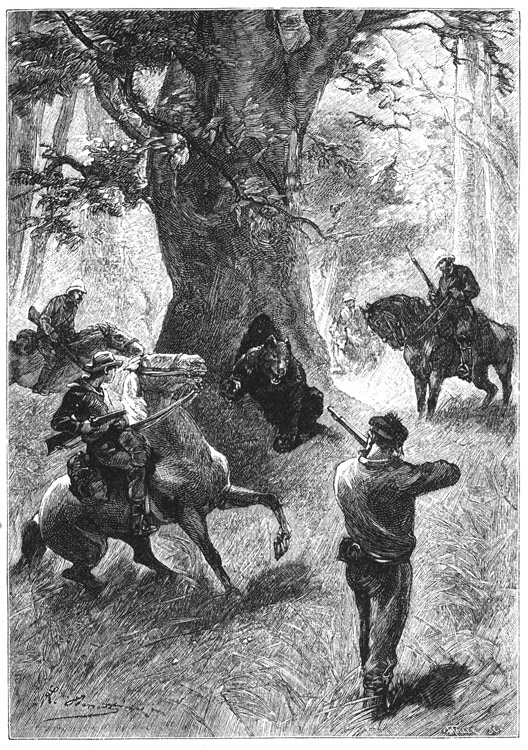... sie hatten bald Gelegenheit, einen derselben zu tödten.
– Ist denn da etwas gar so Erstaunliches dabei? versetzte Len Burker. Ich bin ihm bei Dalhousie begegnet, von wo er an die Westgrenze von Queensland zog, das ich damals für ein Haus in Brisbane bereiste.
– Ja, den Weg schlug Lindsay damals ein, hub Tom Marix wieder an. Dann zog er nach Alice-Spring zurück und von da gegen den Golf vom Carpentaria, wo er seine zweite Reise von Süden nach Norden durch den Continent vollendete.
– Ich füge hinzu, sagte Len Burker, daß David Lindsay von einem deutschen Botaniker, namens Dietrich, begleitet war. Ihre Karawane bediente sich nur der Kameele als Lastthiere. Ich glaube, daß Sie, Dolly, auch die Absicht haben, die Ihrige jenseits von Alice-Spring so zusammenzustellen, und ich bin sicher, daß Sie Erfolg haben werden wie David Lindsay ...
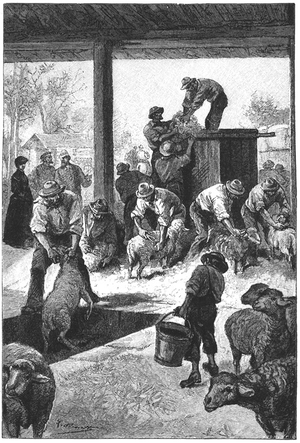Die Arbeiter verloren keine Minute.
– Ja, wir werden Erfolg haben, sagte Mrs. Branican.
– Niemand zweifelt daran«, fügte Zach Fren hinzu.
Es schien nicht unwahrscheinlich, daß Len Burker David Lindsay begegnet habe, was auch Jane Burker bestätigte, doch wenn Dolly ihn gefragt hätte, für welches Haus in Brisbane er damals reiste, so wäre er durch diese Frage vielleicht in Verlegenheit gekommen.
In den Stunden, die Mrs. Branican und ihre Gefährten am Ufer des Finke-River zubrachten, erhielt man indirecte Nachrichten über den Engländer Jos Meritt und Gîn-Ghi, seinen chinesischen Bedienten. Beide waren der Karawane ungefähr um zwölf Meilen voraus. Alan erfuhr nämlich von den Eingebornen, daß sich dieser famose Hutsammler vor fünf Tagen mit seinem Bedienten in dem Dorfe Kilna, ungefähr eine Meile von der Station entfernt, aufgehalten habe.
Kilna zählt einige hundert Schwarze – Männer, Frauen und Kinder – welche in unförmlichen Hütten aus Rinde wohnen. Diese Hütten heißen in australischer Sprache »Villums«, und wir können nicht umhin, auf die Aehnlichkeit dieses Wortes mit dem französischen » ville« und dem englischen » village« aufmerksam zu machen.
Diese Eingeborenen, von denen einige einen bemerkenswerthen Typus haben und die meist kräftig und von unermüdlichem Temperamente sind, verdienen näher ins Auge gefaßt zu werden. Meistentheils haben sie vorspringende Augenbrauen, dichtes, gekräuseltes Haar, eine kleine Stirn, große Nasenlöcher und großen Mund mit starkem Gebiß.
Woher stammen diese Eingebornen des fünften Welttheiles? Existirte wirklich einmal – wie es mehrere Gelehrte behaupten – ein Kontinent im Stillen Ocean, von dem nur noch die Bergesspitzen als Inseln über dem großen Wasser übriggeblieben sind? Sind diese Australier Nachkommen jener zahlreichen Rassen, die diesen Continent in uralten Zeiten bewohnten? Solche Theorien dürften wahrscheinlich nur Hypothesen bleiben. Doch wenn diese Erklärung zugelassen wird, müßte man daraus den Schluß ziehen, daß dieses autochthone Geschlecht sowohl in physischer, als auch in moralischer Beziehung entartet ist. Die Australier sind wild geblieben und stehen durch ihre Menschenfresserei – wenigstens einige Stämme – auf der niedrigsten Culturstufe. In einem Lande, wo es keine Löwen, Tiger und Panther giebt, vertreten sie wegen ihres Cannibalismus diese wilden Thiere. Sie bebauen nicht den undankbaren Boden, entbehren der nothwendigsten Hausgeräthe und haben nur rohe Waffen, wie die Lanze, die Axt »Nolla-nolla«, eine Art Keule aus sehr hartem Holze, und den berühmten »Boomerang«, jenes Wurfgeschoß, das, von kräftiger Hand geschleudert, wieder zurückfliegt, kurz, die Australier sind Wilde im vollsten Sinne des Wortes.
Solchen Menschen hat die Natur auch die passende Frau gegeben, die »Lubra«, die wegen ihres kräftigen Körperbaues die Strapazen des Nomadenlebens ertragen und die härtesten Arbeiten verrichten kann. Diese unglücklichen Geschöpfe sind schon mit fünfundzwanzig Jahren alt und häßlich.
Nun – würde man es glauben? – diejenigen, welche mit den europäischen Colonien in Berührung stehen, beginnen den europäischen Moden zu folgen. Ja, sie wollen Kleider mit Schleppen! Sie wollen Hüte mit Federn darauf! Die Männer sind in der Wahl ihrer Kopfbedeckung nicht weniger eigen und geben Alles hin, um dieser Neigung zu huldigen.
Ohne allen Zweifel kannte Jos Meritt die interessante Forschungsreise Carl Lumholtz' in Australien. Wie sollte er sich auch den Marsch dieses kühnen Norwegers nicht gemerkt haben, der sich ein halbes Jahr bei den wilden Cannibalen des Nordwestens aufgehalten hat? Der Reisende berichtet:
»Ich begegnete unterwegs meinen zwei Eingebornen ... Sie waren sehr schön: Der eine kam im Hemde daher, der andere hatte einen Frauenhut auf. Diese Kleidungsstücke, die von Australnegern sehr geschätzt sind, gehen von Stamm zu Stamm, von denen, die den europäischen Colonien am nächsten wohnen, bis zu denen, die mit den Weißen nie in Berührung kommen. Mehrere meiner Leute (Eingeborne) borgten sich einen Hut und setzten ihn stolz einer nach dem anderen auf. Einer derselben, der vor mir im Adamscostüm ging und unter der Last meines Gewehres schwitzte, sah von rückwärts in diesem Frauenhute komisch genug aus. Welche Stürme mochte dieser Hut auf dem langen Wege von den Europäern bis zu den Wilden durchgemacht haben!«
Das wußte Jos Meritt und vielleicht fand er auf dem Kopfe eines Häuptlings der westlichen oder nordwestlichen Stämme diesen unschätzbaren Hut, dessen Erwerbung ihn schon einmal bei den Menschenfressern des Continentes von Australien in Lebensgefahr gebracht hatte. Da er bei den Stämmen von Queensland keinen Erfolg hatte, so konnte er einen solchen vielleicht bei den Eingebornen von Kilna erzielen; das war der Grund, weshalb er jetzt seine abenteuerlichen Wanderungen durch die Wüste von Centralaustralien fortsetzte.
Am 13. October gab Tom Marix bei Sonnenaufgang das Zeichen zum Aufbruch, und die Karawane nahm ihre gewöhnliche Ordnung ein. Dolly fühlte sich glücklich, Jane bei sich zu wissen, und Jane war es ein großer Trost, Mrs. Branican wieder gefunden zu haben. Sie saßen in dem Buggy allein und konnten so recht nach Herzenslust ihre Gefühle austauschen. Warum wagte Jane nicht, ihr Versprechen gegenüber Len Burker zu brechen? Wenn sie Zeuge war der mütterlichen und kindlichen Liebe, die jeden Augenblick durch eine Handbewegung oder durch einen Blick zwischen Dolly und Godfrey zum Ausdrucke kam, da schien es, als wolle ihr das Geheimniß entschlüpfen ... Aber sie erinnerte sich an die Drohungen Len Burker's, und aus Furcht, den jungen Matrosen ins Verderben zu stürzen, trug sie bei dem Austausch dieser Liebesbezeugungen eine Gleichgiltigkeit zur Schau, die Dolly mit Kummer bemerkte.
Wir können uns leicht vorstellen, was sie litt, als Dolly eines Tages zu ihr sagte:
»Du wirst es begreiflich finden, Jane, daß ich bei dieser Aehnlichkeit und den eigenthümlichen Gefühlen, die mich zu diesem Kinde hinzogen, schließlich glaubte, daß mein Kind nicht ertrunken sei, und daß es weder Mr. Andrew, noch ein anderer meiner Freunde gewußt habe ... Deshalb dachte ich, daß Godfrey unser Sohn sei ... Aber nein! ... Der arme kleine Wat schläft auf dem Friedhofe von San-Diego!
– Ja ... Dort haben wir ihn begraben, liebe Dolly, erwiderte Jane. Dort ist sein Grab inmitten von Blumen!
– Jane! ... Jane! ... rief Dolly, da Gott mir mein Kind nicht zurückgegeben hat, so möge er mir seinen Vater ... möge er mir John zurückgeben!«
Am 15. October um sechs Uhr Abends ließ die Karawane den Berg Humphries hinter sich und hielt am Ufer des Palmes-Creek, eines Nebenflusses des Finke-River. Da er wegen der heißen Jahreszeit fast ganz ausgetrocknet war, so konnte man leicht übersetzen, wie man dies bei dem Hughes-Creek nach drei Tagen ebenfalls that.
In dieser Richtung zogen sich die Drähte der Overland-Telegraf-Line wie die Fäden der Ariadne von Station zu Station dahin. Man stieß hie und da auf einige Häusergruppen, seltener auf Farmen, wo Tom Marix für schweres Geld frisches Fleisch kaufte. Godfrey und Zach Fren gingen stets auf Recognoscirung aus, und die Farmer gaben ihnen bereitwilligst Auskunft über die Nomadenstämme, die diese Gegenden durchzogen. Hatten sie nichts von einem Weißen gehört, der von den Indas des Nordens oder Westens gefangen gehalten wurde? Stets ein trostloses Nein! Sie fanden nicht die geringste Spur, welche sie auf die Fährte des Capitän John gebracht hätte, und mußten sich daher beeilen, nach Alice-Spring zu kommen, von dem sie kaum noch achtzig Meilen entfernt waren.
Vom Hughes-Creek an wurde der Weg beschwerlicher, so daß man nur langsam vorwärts kam. Enge Schluchten mit kleinen Gewässern hielten sie oft auf; Tom Marix und Godfrey suchten immer die besten Durchgänge, welche die Reiter und auch die Buggys oft bequem passiren konnten. Etwas anderes war es mit den Lastwagen, die nur mit den größten Anstrengungen hindurchgebracht werden konnten. Da man auch einen Achsen- oder Räderbruch vermeiden mußte, um nicht mit der Reparatur aufgehalten oder gar zur Zurücklassung des Wagens gezwungen zu werden, so wurden solche Hindernisse womöglich umgangen.
Am 19. October kam die Karawane in jenes Gebiet, wo die telegraphische Linie nicht mehr gerade fortging, was übrigens die Beschaffenheit des Bodens schon allein bedingte.
An einigen Stellen dieser Gegenden gab es zahlreiche Känguruhs, welche die Weißen nur aus Vergnügen jagen, denn man müßte ein Neger sein, um ihr Fleisch genießbar zu finden. Tom Marix und Godfrey gelang es nur, zwei oder drei Paare dieser schnellen Thiere zu erreichen, die wie ein Pferd im Galopp dahinlaufen. Wir müssen nach hinzufügen, daß der Schweif dieser Känguruhs eine ausgezeichnete Suppe gibt, die Jedem beim Nachtmahle recht gut schmeckte.
Diese Nacht war unruhig, da das Lager durch einen Angriff jener Ratten in Unruhe versetzt wurde, wie man sie nur in Australien sieht. Niemand hätte schlafen können, ohne nicht von ihnen gebissen zu werden, und man schlief auch nicht.
Am folgenden Tage zog die Karawane weiter, indem sie diese lästigen Thiere verwünschte. Bei Sonnenuntergang erreichte sie Mac-Donnell-Ranges, von wo aus sie ein günstiges Terrain fand. Noch ungefähr vierzig Meilen, und der erste Theil des Weges war zurückgelegt.
Am 23. October durchzogen sie unabsehbare Ebenen; die Wagen folgten ohne Schwierigkeit dem Wege, den die Telegraphenstangen vorzeichneten. Es war fast unglaublich, wie die Linie, die in diesen öden Gegenden so wenig bewacht war, von den Eingebornen so sehr unberührt gelassen wurde. Tom Marix erwiderte auf eine bezügliche Bemerkung hin Folgendes:
»Die Nomaden, welche von unserem Ingenieur elektrisch gezüchtigt wurden, glauben, daß der Donner an diesen Drähten entlang laufe, und sie hüten sich wohl, daran zu rühren. Sie bilden sich sogar ein, daß ihre beiden Enden bis auf die Sonne und den Mond zurückgehen und daß diese Kugeln auf sie fallen würden, wenn sie nur die Pfähle berührten.«
Um elf Uhr wurde der Gewohnheit gemäß ein dreistündiger Halt gemacht, weil man nicht in der größten Hitze weiterziehen wollte. Es war aber nur ein Halt und kein Lagern, denn Tom Marix ließ weder die Ochsen, noch die Pferde ausspannen. Man schlug keine Zelte auf und zündete auch kein Feuer an, da bei dieser Mahlzeit (die erste fand bei Sonnenaufgang statt) nur Conserven und kaltes Wildpret verzehrt wurden.
Jeder setzte oder streckte sich im Grase aus; nach einer halben Stunde schliefen gewöhnlich die Ochsentreiber und die Leute der Escorte ein und erwachten erst, wenn das Zeichen zum Aufbruche gegeben wurde.
Mrs. Branican, Jane und Godfrey bildeten eine Gruppe für sich; während sie ihr Frühstück einnahmen, sprachen sie von ihrer nahen Ankunft in Alice-Spring. Die Hoffnung, welche Dolly nie verlassen hatte, theilte Godfrey, und selbst wenn ein Grund zum Verzweifeln dagewesen wäre, so würde er in seiner Ueberzeugung nicht erschüttert worden sein. Ueberhaupt waren Alle voll Vertrauen auf den Erfolg der Expedition, und ihr Entschluß stand fest, Australien nicht eher zu verlassen, bis sie nicht genau das Schicksal des Capitän John kannten.
Es versteht sich von selbst, daß Len Burker bei jeder Gelegenheit zur Ermuthigung nur noch beitrug. Es paßte ihm gerade in sein Spiel, denn er hatte ein Interesse daran, daß Mrs. Branican nicht nach Amerika zurückkehrte, wohin er nicht mehr gehen konnte. Dolly, die nichts von seinen schändlichen Plänen ahnte, dankte ihm noch für seine stete Unterstützung.
Während dieses Aufenthaltes sprachen Tom Marix und Zach Fren von der nothwendigen Reorganisation der Karawane in Alice-Spring. Sollten nicht erst dort die eigentlichen Schwierigkeiten einer Expedition durch Centralaustralien beginnen?
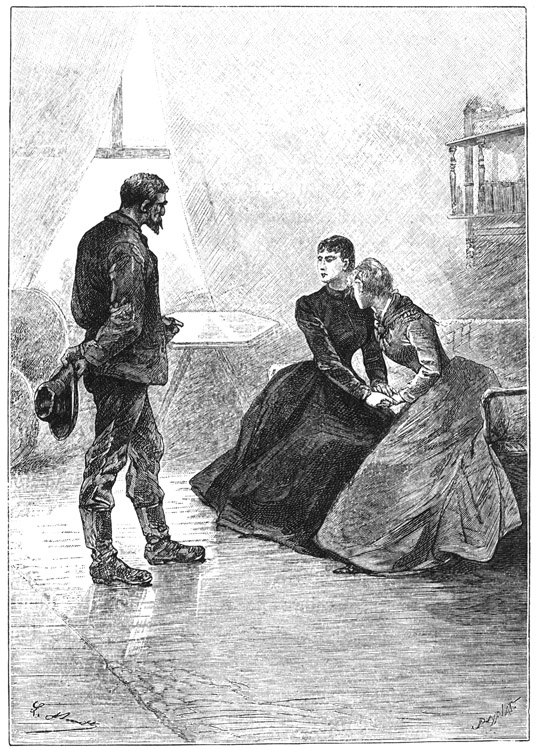»Einverstanden, Len Burker, und machen Sie sich zum Aufbruche fertig.«
Es mochte ungefähr halb zwei Uhr sein, als ein dumpfes Geräusch gegen Norden vernommen wurde. Es war ein fortwährendes Donnern, wir möchten sagen ein Aufruhr, der sich heulend hinwälzte.
Mrs. Branican, Jane und Godfrey standen auf und horchten. Tom Marix und Zach Fren traten auf sie zu und lauschten ebenfalls.
»Was mag das nur sein? fragte Dolly.
– Ein Gewitter ohne Zweifel, versetzte Zach Fren.
– Ich mochte eher sagen, eine Brandung,« bemerkte Godfrey.
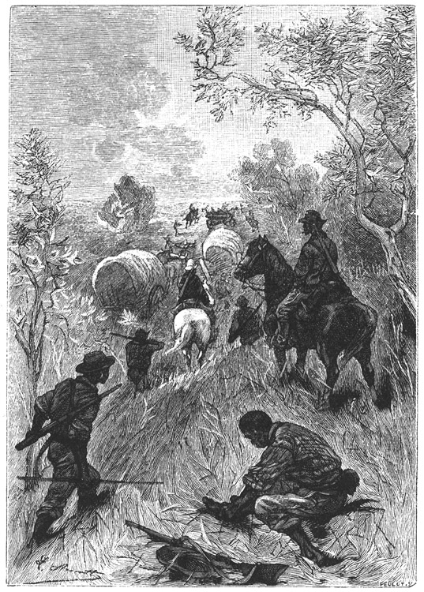Len Burker, der ein gutes Pferd hatte, ritt hin und her.
Aber da die Luft elektrisch leer zu sein schien und auch sonst kein Symptom eines Gewitters da war, so konnte man sich die Erscheinung nicht erklären. Als Zach Fren meinte, es könnten vielleicht wüthende Gewässer sein, die auf einmal durch eine Naturgewalt entfesselt wurden, da erwiderte Tom Marix:
»Eine Ueberschwemmung in diesem Theile des Continentes, um diese Zeit, nach einer solchen Trockenheit? Nein, seien Sie ganz beruhigt, das ist unmöglich.«
In Folge großer Gewitter kommt es oft vor, daß die Flüsse steigen und eine furchtbare Ueberschwemmung anrichten; aber gegen Ende des Monats October war eine solche Erklärung unzulässig.
Tom Marix, Zach Fren und Godfrey bestiegen eine kleine Anhöhe und blickten unruhig gegen Norden und Osten, aber sie sahen nichts auf diesen ungeheuren trockenen Ebenen. Und doch! Dort am Horizont entwickelte sich eine eigenthümliche Wolke, die man nicht mit jenen Dämpfen vergleichen konnte, welche von der Erde zum Himmel emporsteigen. Es war eher ein dicker Qualm, wie er sich über abgeschossenen Kanonen erhebt. Was den Lärm anbelangt, der dieser Staubwolke entstieg – wie hätte man daran zweifeln können, daß es eine Staubwolke war? – so wuchs er deutlich und hörte sich an, als ob mehrere Regimenter Cavallerie dahergeritten kämen. Woher kam das?
»Ich weiß es ... Ich habe es schon einmal gesehen! ... Das sind Schafe! rief Tom Marix.
– Schafe? rief Godfrey lächelnd. Wenn das nur Schafe wären!
– Lachen Sie nicht, Godfrey, erwiderte der Führer der Escorte. Es sind vielleicht Tausende und Abertausende von Schafen, die vor Entsetzen fliehen ... Sie stürzen wie eine Lawine dahin und vernichten Alles auf ihrer Flucht.«
Tom Marix übertrieb nicht. Wenn diese Thiere aus einem oder dem anderen Grunde – was oft im Innern der »Runs« vorkommt – scheu werden, so kann sie nichts aufhalten, sie stürzen die Barrieren um und entfliehen. Ein altes Sprichwort sagt: »Vor den Schafen hält der Wagen des Königs«, und es ist wahr, eine Heerde solcher Thiere läßt sich eher todtschlagen, als daß sie Platz machte. Da sich diese Wolke zwei bis drei Meilen ausdehnte, so konnte man annehmen, daß irgend ein panischer Schrecken Hunderttausende dieser Thiere gegen die Karawane treibe. Sie rannten wie wahnsinnig von Norden nach Süden und würden erst in dem Augenblicke Halt machen, wo sie erschöpft zusammenbrachen.
»Was ist da zu thun? fragte Zach Fren.
– Sich so gut als möglich zu schützen,« erwiderte Tom Marix.
Da nichts anderes zu machen war, so trafen sie gleich alle Maßregeln, denn die Lawine der Schafe war nur noch zwei Meilen entfernt: die Wolke stieg mächtig zum Himmel empor und aus dieser erscholl ein furchtbares Blöken. Die Wagen wurden rasch gegen eine Hügellehne geschoben und die Treiber und Reiter zwangen die Pferde und Ochsen, sich auf der Erde auszustrecken, um so dem Ansturme besser widerstehen zu können, der über ihrem Kopfe dahingehen mußte. Die Menschen drängten sich an die Berglehne hin und Godfrey stellte sich dicht neben Dolly, um sie, wenn nothwendig, zu beschützen.
Unterdessen hatte Tom Marix die kleine Anhöhe noch einmal bestiegen und sah über die Ebene hin, welche »blökte«, wie das Meer unter einem Sturme brüllt. Die Heerde kam mit furchtbarem Getöse daher und füllte ein Drittel des ganzen Horizontes aus. In weniger als zwei Minuten mußte sie bei dem Berge sein.
»Achtung! Da sind sie!« rief Tom Marix.
Schnell eilte er zu der Stelle, wo Mrs. Branican, Jane, Godfrey und Zach Fren dicht nebeneinander standen.
Fast zu gleicher Zeit kam die erste Heerde dahergestürmt; sie hielt nicht ein und würde auch nicht eingehalten haben. Die vordersten Thiere stürzten den Abhang hinab und einige Hundert fielen hin, da ihnen der Boden unter den Füßen fehlte. In das Blöken mischte sich das Wiehern der Pferde, das Brüllen der Ochsen, die von Entsetzen ergriffen waren. Man sah nichts in dieser furchtbaren Staubwolke, während die Lawine den Abhang in unwiderstehlichem Laufe hinunterstürzte: es war ein daherbrausender Sturzbach von Schafen.
Das dauerte ungefähr fünf Minuten, und Tom Marix, Godfrey und Zach Fren, die sich zuerst erhoben, sahen die letzten Reihen gegen Süden weiter eilen.
»Auf! ... Auf!« rief der Führer der Escorte.
Alle erhoben sich. Einige Quetschungen und ein wenig Schaden an den Wagen war Alles, was, Dank dem Schutze dieses Abhanges, die Schafe an Menschen und Material der Karawane zufügten.
Tom Marix, Godfrey und Zach Fren stiegen sofort den Hügel hinauf.
Gegen Süden verschwand die fliehende Truppe wie ein Vorhang sandigen Staubes; gegen Norden dehnte sich endlos die weite Ebene aus.
Aber plötzlich rief Godfrey:
»Dort! ... Sehen Sie dort!«
In einer Entfernung von ungefähr zweihundert Schritten lagen zwei Menschen – gewiß Eingeborne, die von den Schafen umgeworfen und zertreten worden waren.
Tom Marix und Godfrey eilten hin.
Welche Ueberraschung! Jos Meritt und sein Bedienter Gîn-Ghi lagen leblos da ...
Sie athmeten aber noch, und durch schleunige Hilfe erholten sie sich bald von dem furchtbaren Zusammenstoße. Kaum schlugen sie die Augen auf, so erhoben sie sich, so viel Quetschungen sie auch erhalten hatten.
»O! ... Gut! ... Sehr gut!« sagte Jos Meritt.
Dann drehte er sich um.
»Und Gîn-Ghi? fragte er.
– Gîn-Ghi ist da ... oder wenigstens, was von ihm übrig geblieben ist! erwiderte der Chinese, indem er sich die Rippen rieb. Das waren wohl ein bischen zu viel Schafe, Master Jos, mehr als zehntausend!
– Nie zu viel Hammelkeulen, nie zu viel Coteletten, erwiderte der Gentleman, daher auch nicht zu viel Schafe, Gîn-Ghi! Es ist nur ärgerlich, daß wir kein einziges erwischt haben.
– Trösten Sie sich, Herr Meritt, erwiderte Zach Fren, am Fuße des Abhanges liegen Hunderte derselben zu Ihren Diensten.
– Sehr gut! ... O! ... Sehr gut!« versetzte phlegmatisch der Engländer. Dann wandte er sich zu seinem Diener, der sich jetzt nicht mehr die Rippen, sondern die Schultern rieb.
»Gîn-Ghi?
– Herr Jos?
– Zwei Coteletten für heute Abend ... Zwei Coteletten ... blutige!«
Jos Meritt und Gîn-Ghi erzählten dann, was vorgefallen war. Sie waren der Karawane ungefähr drei Meilen voraus, als sie von den Schafen überrascht wurden. Ihre Pferde flohen, trotz ihrer Anstrengung, sie zurückzuhalten. Sie wurden umgerissen, getreten, und ein Glück, daß sie nicht zu Brei zerstampft wurden, und ebenso ein Glück, daß Mrs. Branican und ihre Gefährten zur rechten Zeit gekommen waren, um ihnen zu helfen.
So war denn Jeder dieser ernsten Gefahr entgangen, und man setzte den Weg wieder fort. Gegen sechs Uhr Abends kam die Karawane in Alice-Spring an.
Am folgenden Tage, dem 24. October, beschäftigte sich Mrs. Branican mit der Reorganisation der Karawane für den weiteren Weg, der wahrscheinlich beschwerlich werden würde, da er sich durch fast unbekannte Gegenden von Centralaustralien hindurchzog.
Alice-Spring ist nur eine Station der Overland-Telegraf-Line und besteht aus etwa zwanzig Häusern, so daß sie nicht einmal eine Ortschaft genannt werden kann.
Mrs. Branican begab sich zuerst zu dem Oberhaupte dieser Station, Mr. Flint, der vielleicht etwas über die Indas wußte. Kam dieser Stamm, bei welchem Capitän John gefangen gehalten wurde, nicht manchmal aus dem Westen von Australien bis in die Gegenden des Centrums?
Mr. Flint konnte in dieser Hinsicht nichts Bestimmtes sagen; wenn auch die Indas zeitweilig den westlichen Theil von Alexandraland verlassen, so hatte er doch nie etwas von einem John Branican gehört. Was Harry Felton anbelangt, so wußte er, daß dieser ungefähr achtzig Meilen östlich von der Telegraphenlinie, an der Grenze von Queensland, gefunden wurde. Nach seiner Meinung wäre es das Beste, sich genau an die Angaben zu halten, die der Unglückliche vor seinem Tode gemacht hatte. Er rieth, die Richtung gegen die Districte von Westaustralien einzuschlagen: außerdem hoffte er, daß diese Expedition eben dort erfolgreich enden würde, wo er, nämlich Flint, vor sechs Jahren vergebens Leichhardt aufsuchte, da die Kämpfe der Eingebornen untereinander ihn bald zum Verlassen jener Gegenden zwangen. Er stellte sich Mrs. Branican zur Verfügung, um ihr alle Hilfsquellen der Station zu erschließen. Er hätte dies, fügte er hinzu, auch für David Lindsay gethan, als dieser Forschungsreisende sich im Jahre 1886 in Alice-Spring aufhielt, bevor er die Richtung gegen Nash und die östlichen Gebirge der Mac-Donnell-Ranges einschlug.
So sah um jene Zeit der Theil von Australien aus, den die Expedition jetzt in der Richtung gegen Nordwesten durchsuchen wollte.
Zweihundertsechzig Meilen von Alice-Spring entfernt, bei dem 127. Meridian, befindet sich die Grenze von Norden nach Süden, die Südaustralien, Alexandraland und Nordaustralien von jener Provinz trennt, die unter dem Namen Westaustralien bekannt ist und zur Hauptstadt Perth hat. Diese Provinz ist die größte, am wenigsten bekannte und am wenigsten bevölkerte von Australien. In Wirklichkeit ist sie geographisch nur durch den Umriß ihrer Küsten bestimmt, welche die Länder Nuyts, Lieuwin, Wlaming, Endrack, Witt und Tasmanland umfassen. Die neueren Karten geben im Innern dieses Landes, das nur von den nomadisirenden Eingebornen durchzogen wird, in seinen ungeheuren Einöden drei Wüsten an:
1. Im Süden die Wüste, die sich zwischen dem 30. und 28. Breitegrade ausdehnt, die von Forrest im Jahre 1869 erforscht und von Gilles in ihrer ganzen Länge 1875 durchzogen wurde.
2. Die Gibson-Wüste, zwischen dem 28. und 23. Grade, deren ungeheure Flächen Giles im Jahre 1876 durchzog.
3. Die Große Sandy-Wüste, zwischen dem 23. Grade und der nördlichen Küste, welche der Oberst Warburton unter furchtbaren Gefahren im Jahre 1873 von Osten nach Nordwesten bereiste.
Gerade diese Strecke sollte die Karawane der Mrs. Branican durchmessen, indem sie nach den Angaben Harry Felton's den Weg des Obersten Warburton einschlagen wollte. Der Zug dieses kühnen Reisenden von Alice-Spring bis an die Küste des Indischen Oceans dauerte nicht weniger als vier Monate, die ganze Reise aber vom September 1872 bis Januar 1874. Wie lange würden da Mrs. Branican und ihre Geführten zu diesem Wege brauchen?
Dolly empfahl Zach Fren und Tom Marix, nicht einen Tag zu verlieren und Alles nach den Angaben Mr. Flint's vorzubereiten. Binnen vierzehn Tagen wurden auf Rechnung der Mrs. Branican dreißig Kameele gekauft, die alle in Alice-Spring mit ihren afghanischen Führern des Aufbruches harrten.
Die Kameele wurden erst vor dreißig Jahren in Australien eingeführt, indem Mr. Elder im Jahre 1860 eine große Anzahl derselben aus Indien importiren ließ. Diese nützlichen, mäßigen und starken Thiere können eine Last von hundertfünfzig Kilogramm tragen und vierzig Kilometer in einem Tage zurücklegen, wobei sie immer gleichmäßig dahinschreiten. Außerdem können sie eine Woche ohne Nahrung, drei Tage im Sommer, sechs Tage im Winter ohne Wasser bleiben. Sie werden auf diesem trockenen Continente zu denselben Diensten verwendet, wie in den glühenden Gegenden Afrikas. Dort wie hier ertragen sie geduldig Durst und Hitze. Werden doch die Sahara und die Große Sandwüste von den correspondirenden Breitegraden der beiden Halbkugeln durchschnitten!
Mrs. Branican verfügte nun über dreißig Kameele, zwanzig Reit- und zehn Lastthiere. Die meisten derselben waren männlich und jung, aber auch kräftig und gesund. Wie die Escorte in Tom Marix ihren Führer hatte, ebenso hatten auch diese Thiere ein altes, männliches Kameel zum Führer, dem sie gern folgten. Es leitete sie, sammelte sie bei einer Rast und hinderte sie davonzulaufen. Würde es fallen oder krank sein, so wären die Führer unfähig, die Ordnung aufrecht zu halten. Es ist selbstverständlich, daß dieses werthvolle Thier Tom Marix zugewiesen wurde, und diese beiden Führer – der eine trug den anderen – befanden sich an der Spitze der Karawane.
Man kam überein, die Pferde und Ochsen, welche die Leute von der Station Farina bis nach Alice-Spring getragen hatten, in der Obhut Flint's zu lassen, weil die Karawane wahrscheinlich denselben Rückweg der Telegraphenlinie entlang einschlagen würde.
Dolly und Jane saßen zusammen in einer »Kibitka«, einer Art von arabischem Zelt, das eines der stärksten Kameele der Karawane trug. Sie waren in demselben gegen die Strahlen der Sonne durch Vorhänge geschützt und konnten sich sogar gegen Regengüsse schützen, welche große Gewitter, was freilich selten vorkam, auf diese weiten Ebenen schütten.
Harriette, die Dienerin der Mrs. Branican, war an die langen Nomadenmärsche gewöhnt und zog es vor, zu Fuß zu gehen, da sie diese großen buckeligen Thiere mehr als Last-, denn als Reitthiere ansah. Len Burker, Godfrey und Zach Fren erhielten je ein Kameel und gewöhnten sich rasch an dieses lästige Reiten. Uebrigens konnte keine andere Gangart als der regelmäßige Schritt dieser Thiere eingeschlagen werden, da nur ein Theil der Menschen ritt. Ein Trab sollte nur dann stattfinden, wenn sich die Nothwendigkeit ergab, die Karawane wegen Aufsuchung eines Brunnens oder einer Quelle in der Großen Wüste in schnelleres Tempo zu setzen.
Die übrigen Weißen hatten noch die anderen fünfzehn Kameele; die Schwarzen, denen die Führung der zehn Lastkameele oblag, mußten die zwölf bis vierzehn Meilen täglich zu Fuß machen, was für sie sicher nicht zu viel war.
So wurde denn die ganze Karawane auf diese Weise für den zweiten Theil der Reise reorganisirt, um in jeder Richtung hin allen Anforderungen zu genügen; da sie viel besser mit Transport und Lebensmitteln ausgerüstet war, als je eine der früheren Forschungsreisenden, so hatte man begründete Hoffnung, daß ein Erfolg erzielt werden würde.
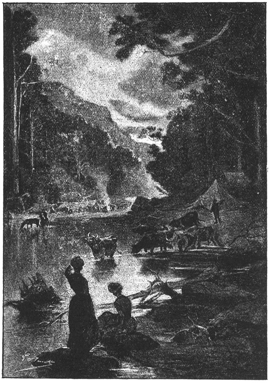... welche Mrs. Branican und ihre Gefährten am Finke-River zubrachten.
Es bleibt noch übrig zu erwähnen, was aus Jos Meritt geworden war. Blieb dieser Gentleman mit seinem Diener Gîn-Ghi in Alice-Spring zurück? Oder, wenn sie weiterzogen, nahmen sie die Richtung gegen Norden längs der Telegraphenlinie? Setzten sie nicht eher östlich oder westlich die Reise fort, um auf Eingeborne zu stoßen? Es war das in der That der einzige Weg, damit der berühmte Sammler endlich einmal die Kopfbedeckung finde, nach der er schon so lange jagte. Da er aber jetzt kein Reitthier, kein Gepäck und keine Lebensmittel mehr besaß, wie sollte er da seine Reise fortsetzen?
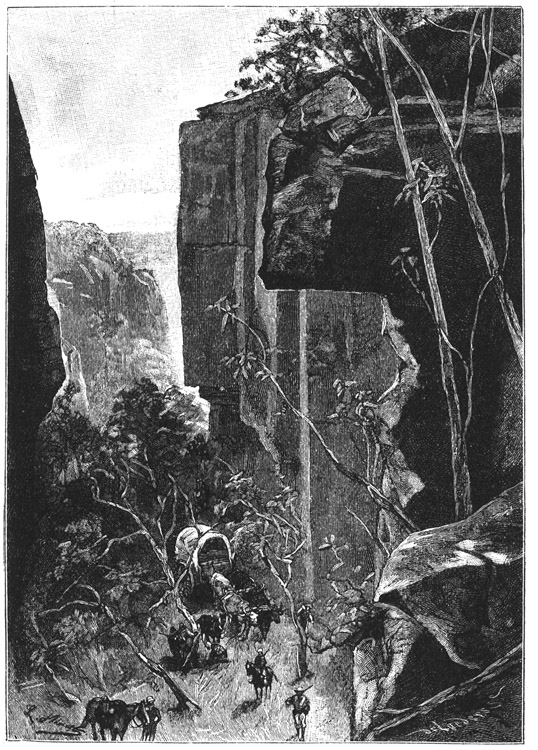Enge Schluchten mit kleinen Gewässern hielten sie oft auf.
Zach Fren hatte diesbezüglich schon einigemale den Chinesen Gîn-Ghi gefragt, der aber selbst nie wußte, was sein Herr beschloß, da es eben dieser selbst noch nicht wußte. Dennoch konnte er mit Bestimmtheit erklären, daß sein Herr Jos Meritt nie den Rückweg einschlagen werde, so lange nicht seine fixe Idee befriedigt sei, und daß er, nämlich Gîn-Ghi, der Hong-Konger, nie mehr sein Vaterland sehen werde, wo die jungen Chinesen, in Seide gekleidet, mit ihren langen Fingern »Nenupharblüthen pflücken«.
Unterdessen neigte sich der letzte Tag vor dem Aufbruche seinem Ende zu und Jos Meritt hatte noch nichts von seinen Absichten verlauten lassen. Da setzte Gîn-Ghi Mrs. Branican in Kenntniß, daß Jos Meritt sie um die Gunst einer wichtigen Unterredung bitte.
Mrs. Branican, die nach Kräften die Wünsche dieses originellen Menschen erfüllen wollte, ließ ihm sagen, daß sie den hochgebornen Jos Meritt bitte, sich in das Haus Mr. Flint's zu bemühen, wo sie seit ihrer Ankunft in der Station wohnte.
Jos Meritt begab sich augenblicklich dahin – es war am 25. October Nachmittags – und als er sich Mrs. Branican gegenüber befand, sagte er:
»Mrs. Branican ... Gut! ... O! ... Sehr gut! ... Ich zweifle nicht ... Nein! ... Ich zweifle keinen Augenblick, daß Sie den Capitän John wiederfinden werden ... und ich möchte gar so gern den Hut finden ... für dessen Entdeckung ich so oft mein Leben gewagt habe ... Gut! ... O! ... Sehr gut! ... Sie sollen erfahren, warum ich durch die entlegensten Gegenden Australiens ziehe ...
– Ich weiß es ... Herr Meritt, erwiderte Mrs. Branican, und von meiner Seite aus zweifle ich nicht, daß Sie eines Tages für Ihre Ausdauer werden belohnt werden ...
– Ausdauer! ... Gut! ... O! ... Sehr gut! ... Ja, dieser Hut ist einzig in der Welt!
– Fehlt er Ihrer Sammlung?
– Leider ... und ich möchte meinen Kopf hingeben, um ihn aufsetzen zu können!
– Ist es ein Herrenhut? fragte Dolly, die sich mehr aus Güte als aus Neugierde für die Phantasien dieses Menschen interessirte.
– Nein, Mistreß, nein ... ein Frauenhut ... Aber welcher Frau! ... Sie werden mir schon verzeihen, wenn ich das Geheimniß über seinen Namen und seine Eigenschaft für mich behalte ... aus Furcht ... Concurrenz zu erhalten ... Bedenken Sie ... Mistreß ... wenn ein anderer ...
– So sind Sie ihm auf der Spur?
– Eine Spur? ... Gut! ... O! ... Sehr gut! Durch vieles Correspondiren, viele Untersuchungen und Nachforschungen ist es mir gelungen zu erfahren, daß dieser Hut nach mannigfachen Schicksalen nach Australien gekommen ist ... und daß ... und daß ... er jetzt den Kopf des Häuptlings eines hiesigen Stammes schmückt.
– Doch was ist das für ein Stamm?
– Es ist einer derjenigen, welche den Continent von Norden nach Westen durchziehen. Gut! ... O! ... Sehr gut! ... Wenn es sein muß ... so werde ich Alle aufsuchen ... Alle durchstöbern ... Und weil es mir da gleich bleibt, bei welchem ich beginne, so bitte ich um die Erlaubniß, Ihre Karawane bis zu den Indas begleiten zu dürfen.
– Sehr gern, Herr Meritt, erwiderte Dolly, und ich werde sofort Befehl geben, daß man, wenn möglich, noch zwei Kameele kaufe ...
– Es genügt schon eines, Mistreß, nur eines für mich und meinen Bedienten ... umsomehr, weil ich mir vornehme zu reiten ... und Gîn-Ghi daneben zu Fuß gehen soll ...
– Sie wissen doch, daß wir morgen aufbrechen, Herr Meritt?
– Morgen? ... Gut! ... O! ... Sehr gut! ... Ich werde Sie nicht aufhalten, Mistreß. Aber es ist selbstverständlich, nicht wahr, daß ich mich um nichts kümmere, was den Capitän John angeht ... Das ist Ihre Sache ... Ich kümmere mich nur um meinen Hut ...
– Um Ihren Hut, abgemacht, Herr Meritt!« erwiderte Dolly.
Darauf zog sich Jos Meritt zurück, indem er erklärte, daß eine so einsichtsvolle, energische und edle Frau würdig sei, ihren Gatten zu finden, wie er selbst, daß er die Hand auf das Kleinod lege, das seiner Sammlung von historischen Hüten die Krone aufsetzen sollte.
Gîn-Ghi, der aufgefordert wurde, sich für den folgenden Tag bereitzuhalten, mußte die wenigen Sachen, welche ihnen aus dem Unglücke erhalten geblieben waren, in Ordnung bringen. Was das Thier anbelangt, das der Gentleman mit seinem Diener auf die oben angedeutete Weise theilen wollte ... so gelang es Mr. Flint, dieses herbeizuschaffen. Als es Jos Meritt sah, da sagte er:
»Gut! ... O! ... Sehr gut!«
Am folgenden Tage, dem 26. October, wurde das Signal zum Aufbruche gegeben, nachdem Mrs. Branican von Mr. Flint Abschied genommen hatte. Tom Marix und Godfrey eilten an die Spitze der Weißen, Dolly und Jane nahmen in der Kibitka Platz, indem sie rechts und links Len Burker und Zach Fren hatten. Dann kam Jos Meritt, der voll Majestät zwischen den beiden Buckeln ritt, gefolgt von Gîn-Ghi. Den zweiten Theil der Karawane bildeten die Lastkameele mit den Schwarzen.
Um sechs Uhr Morgens ließ die Expedition die Overland-Telegraf-Line und die Station Alice-Spring rechts und verschwand hinter einem Hügel der Mac-Donnell-Ranges.
Da im Monate October die Hitze in Australien sehr groß ist, so rieth Tom Marix, nur in den ersten Stunden des Tages zu reisen – von vier bis neun Uhr – und Nachmittags von vier bis acht Uhr. Sogar die Nächte begannen erstickend zu werden, so daß lange Aufenthalte genommen werden mußten, um die Karawane an die Anstrengungen dieser Reise zu gewöhnen. Und doch war das noch nicht die Wüste mit ihren unendlichen Ebenen, ihren fast ausgetrockneten Flüssen und Cisternen, die nur ein schmutziges Wasser oder gar keines enthielten. Am Fuße der Gebirge zog sich eine wenig vegetationsfähige Gegend dahin, welche die Telegraphenlinie nach Nordwesten durchschnitt. Diese Richtung mußte die Karawane verlassen, um sich mehr westlich fast auf dem Breitegrade zu halten, der mit dem Wendekreise des Steinbocks gleichläuft. Es war das fast derselbe Weg, den Gilles im Jahre 1872 nahm und der den Stuart's in einer Entfernung von hundertfünfzig Meilen nördlich von Alice-Spring kreuzte.
Die Kameele schritten nur langsam dahin. Bäche bewässerten hin und wieder das Land, so daß die Menschen im Schatten der Bäume ein fließendes, hinreichend frisches Wasser fanden, mit dem sich auch die Thiere für einige Stunden den Durst stillen konnten. Die Jäger schossen in diesen Gegenden eine Art Kaninchen, so daß die Vorräthe ergänzt wurden.
Man weiß, daß das Kaninchen in Australien dieselbe Stellung einnimmt wie die Gazelle in Afrika. Diese Nagethiere vernichten Alles, wenn man nicht auf der Hut ist. Bis jetzt hatte die Karawane wegen des großen Vorrathes an Lebensmitteln diese Thiere verschmäht, da in den Wäldern und Ebenen von Südaustralien genug anderes Wild vorhanden war und sie immer noch diese Thiere haben konnten, wenn keine Hasen, Rebhühner, Wachteln, Enten, Tauben u. a. m. vorhanden sein würden. Aber in dieser Gegend mußte man sich schon mit dem begnügen, was man fand, nämlich mit Kaninchen.
Godfrey, Jos Meritt und Zach Fren kamen am Abend des 31. October auf die Vernichtung dieser Thiere zu sprechen, nachdem ersterer gefragt hatte, ob es schon von jeher Kaninchen in Australien gegeben habe.
»Nein, mein Junge, erwiderte Tom Marix, ihre Importation fand erst vor etwa dreißig Jahren statt. Das war ein schönes Geschenk, das man uns da machte. Diese Thiere haben sich so vermehrt, daß sie unsere Ländereien verwüsten, und gewisse Districte sind von ihnen derart überfluthet, daß man dort weder Schafe noch Vieh halten kann. Die Felder sind durch ihre Baue untergraben und das Gras wird bis auf die Wurzel abgenagt. Das ist ein vollständiger Ruin, und ich glaube, daß nicht die Colonisten die Kaninchen, sondern die Kaninchen die Colonisten vernichten werden.
– Hat man denn keine wirksamen Mittel gefunden, sich ihrer zu entledigen? bemerkte Zach Fren.
– Reden wir nicht von wirksamen Mitteln, erwiderte Tom Marix, da ihre Zahl sich eher vermehrt als vermindert. Ich kenne einen Farmer, der eine Million Francs ausgeben mußte, um diese Thiere, die seinen ganzen »Run« zerstörten, zu vernichten. Die Regierung hat Preise auf ihre Erlegung ausgesetzt, wie sie es nur bei Tigern und giftigen Schlangen in Britisch-Indien thut. Bah! Sie vermehrten sich wie die Hydra ihre Köpfe, wenn einer abgeschlagen wurde. Man verwendete Strychnin, wodurch Hunderttausende vergiftet wurden und bald das ganze Land verpestet worden wäre. Alles vergebens!
– Ich habe doch gehört, bemerkte Godfrey, daß ein französischer Gelehrter, Namens Pasteur, diese Nagethiere dadurch vernichten wollte, daß er ihnen den Hühnercholerabacillus einimpfte.
– Ja, und vielleicht hätte dieses Mittel auch gewirkt. Aber man wendete es nicht an ... obwohl fast zwanzigtausend Pfund als Preis ausgesetzt waren. Queensland und Neu-Südwales ergreifen alle Mittel, um den Osten des Continents gegen diese Kaninchenplage zu schützen. Das ist wirklich eine Landplage.
– Gut! ... O! ... Sehr gut! Eine wirkliche Landplage ... erwiderte Jos Meritt, wie auch der gelbe Typus, der schließlich die fünf Welttheile überfluthen wird. Die Chinesen sind die Kaninchen der Zukunft ...«
Glücklicherweise war Gîn-Ghi nicht da, denn sonst wäre diese Beleidigung nicht ohne Einsprache geblieben. Ja, wenigstens mit den Achseln hätte er gezuckt und gelächelt, in der seiner Rasse eigenthümlichen Weise, die nur in einem langen, pfeifenden Athmen besteht.
»So werden also, sagte Zach Fren, die Australier auf diesen Kampf verzichten?
– Was sollten sie denn anfangen? erwiderte Tom Marix.
– Ich glaube doch, daß es ein Mittel giebt, diese Thiere zu vernichten, sagte Jos Meritt.
– Und welches? fragte Godfrey.
– Man sollte von dem englischen Parlamente die Erlassung des folgenden Gesetzes verlangen: ›Es werden von nun an nur mehr Biberhüte in ganz Großbritannien und den dazu gehörigen Kolonien getragen.‹ Da nun die Biberhüte aus nichts anderem bestehen als aus Kaninchenfellen ... so ... Gut! ... O! ... Sehr gut!«
Mit der gewohnten Redensart vollendete der Engländer seine Erklärung.
Wie dem auch sei, so wäre es das Beste, bis zur Erlassung dieses Gesetzes recht viel Kaninchen zu essen. Auf solche Weise würde in Australien schon Mangel daran eintreten.
Was nun die anderen Thiere anbelangt, so konnten dieselben nicht genossen werden.
Eines Tages war Godfrey, der sich unter den Mitgliedern der Karawane als ein tüchtiger Schütze auszeichnete, so glücklich, einen »Jarri«, eine Art Känguruh, anzuschießen, der aber trotz seiner Verwundung entkam. Der junge Matrose war darüber nicht besonders ärgerlich, denn nach der Ansicht des Tom Marix hat dieses Thier nur deshalb einen Werth, weil es wegen seines rasenden Laufes sehr schwer ist, es zu erlegen. Auf gleiche Weise verhält es sich mit dem »Bungari«, einem großen Thiere mit schwarzem Pelze, das in den hohen Aesten der Bäume herumkriecht, indem es sich nach Art der Katzen mit den Krallen festhält. Dieses Wesen, das vorzugsweise in der Nacht aus seinem Schlupfwinkel kommt, kann sich so geschickt in den Aesten verbergen, daß es schwer ist, es daselbst zu erkennen.
Tom Marix erwähnte, daß das Fleisch des Bungari ein ausgezeichnetes Wildpret sei, wenn es am Spieße gebraten werde. Man bedauerte ungemein, das nicht selbst kosten zu können, da es wahrscheinlich war, daß, je näher sie der Wüste kämen, sich die Bungaris auch nicht mehr zeigen würden. Allem Anscheine nach war die Karawane, je weiter nach Westen, auf ihren eigenen Vorrath von Lebensmitteln angewiesen.
Trotz der großen Schwierigkeiten des Terrains gelang es doch Tom Marix, täglich zwölf bis vierzehn Meilen zurückzulegen – die Strecke, welche ursprünglich gleich festgesetzt wurde. Obwohl die Hitze schon sehr groß war – dreißig bis fünfunddreißig Grad im Schatten – so vertrug man sie doch noch. Am Tage fand man einige Baumgruppen, in deren Schatten es sich bequem lagerte, und außerdem trat noch kein Wassermangel ein, so daß die tägliche Rast, neun bis vier Uhr Nachmittags, Menschen und Thieren wieder neue Kräfte gab.
Das Land war unbewohnt, und nirgends sah man mehr Einfriedigungen oder Schafhürden, da das kurze und trockene Gras für diese Thiere keine Nahrung gab. Nur selten begegnete man Eingebornen, welche die Richtung gegen die Stationen der Overland-Telegraf-Line einschlugen.
Am 7. November kam Godfrey, der ungefähr eine halbe Meile vorausgeritten war, mit der Nachricht zurück, das er einen Menschen zu Pferde gesehen habe. Dieser Reiter verfolgte einen schmalen Pfad am Fuße der Mac-Donnell-Ranges; als er die Karawane bemerkte, ritt er im Galopp auf dieselbe zu.
Binnen kurzem stellte Godfrey denselben Mrs. Branican vor, die ihm zuerst einen tüchtigen Schluck Branntwein reichen ließ, wofür er sich nicht genug bedanken konnte.
Es war ein weißer Australier, ungefähr fünfunddreißig Jahre alt, einer jener unermüdlichen Reiter, die in Wind und Regen in ihrem Sattel wie auf einem Stuhle sitzen und denen die Sonnenstrahlen nichts mehr im Gesichte verbrennen können. Er war Courier seines Staates und versah sein Amt mit großem Eifer und Lust: Er ritt durch die Districte der Provinz, stellte Briefe zu und trug die Neuigkeiten von Dorf zu Dorf, selbst in die zerstreut liegenden Dörfer, östlich und westlich von der Telegraphenlinie. Er kam damals von Emu-Spring, einer Ortschaft am Südabhange der Buff-Ranges, nachdem er die Gegend, die sich bis zu den Mac-Donnell-Ranges ausdehnt, durchzogen hatte.
Dieser Courier, welcher zu der Classe der »Roughmen« gehörte, glich recht den alten französischen Postillonen. Er ertrug Hunger und Durst, wurde überall freundlich aufgenommen, wenn er auch keinen Brief aus der Tasche zog, war muthig, entschlossen und ritt, den Revolver im Gürtel, auf seinem tüchtigen Rosse Tag und Nacht dahin, indem er keine Gefahr scheute.
Mrs. Branican fand ein Vergnügen daran, mit ihm zu sprechen und sich bei ihm nach den Stämmen zu erkundigen, mit denen er in Berührung gekommen war.
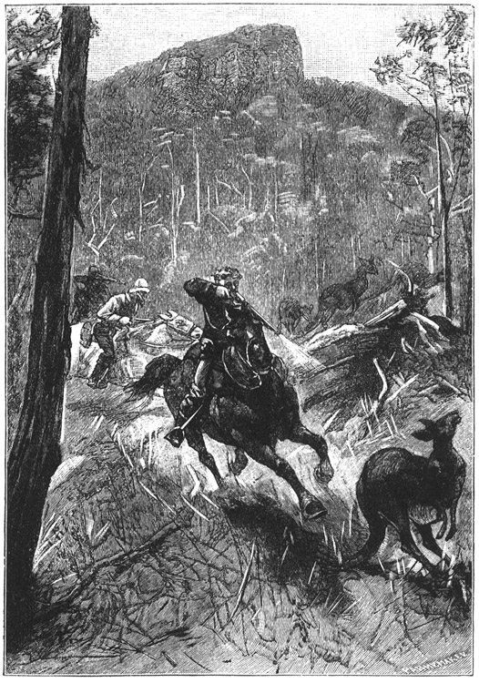Godfrey gelang es nur zwei oder drei dieser schnellen Thiere zu erreichen.
Dieser tüchtige Mann antwortete in schlichter und einfacher Weise. Er hatte, wie alle Leute, von der Katastrophe des »Franklin« reden hören, doch wußte er nicht, daß unter der Leitung der Frau des John Branican eine Expedition von Adelaide aus unternommen würde, um die Gebiete Centralaustraliens zu durchforschen.
Mrs. Branican erzählte ihm noch, daß nach den Berichten Harry Felton's der Capitän John bei den Indas seit vierzehn Jahren gefangen gehalten werde.
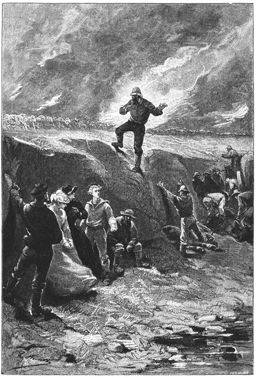»Achtung! Da sind sie!« rief Tom Marix.
»Haben Sie auf Ihren Wegen, fragte sie, einige Eingeborne dieses Stammes kennen gelernt?
– Nein, Mistreß, obwohl diese Indas manchmal dem Alexandralande nahe gekommen sind, erwiderte der Courier, und ich oft von ihnen habe sprechen hören.
– Können Sie uns nicht sagen, wo sie sich jetzt befinden? fragte Zach Fren.
– Mit den Nomaden ist es schwer ... In dieser Jahreszeit sind sie da, in jener wieder dort ...
– Aber ihren letzten Aufenthaltsort? fragte wieder Mrs. Branican, die auf dieser Frage beharrte.
– Ich glaube behaupten zu können, erwiderte der Courier, daß sie sich vor einem halben Jahre im Nordwesten von Ostaustralien an den Ufern des Fitz-Roy aufgehalten haben, denn diese Gegenden suchen die Völker Tasmaniens sehr gern auf. Zum Teufel! Sie wissen doch, wenn man in diese Ländereien vordringen will, daß man die Wüsten des Centrums und des Westens durchwandern muß, und ich brauche Ihnen wohl nicht zu sagen, welche Gefahren da zu bestehen sind! ... Nun, mit Muth und Energie kommt man weit ... So wünsche ich Ihnen denn eine glückliche Reise, Mrs. Branican.«
Der Courier nahm noch ein Glas Branntwein zu sich und einige Büchsen Conserven in die Tasche. Dann bestieg er wieder sein Pferd und verschwand bald hinter dem Rücken der Mac-Donnell-Ranges.
Zwei Tage darauf überschritt die Karawane die höchsten Uebergänge dieser Gebirgskette, die der Gipfel des Liebigberges beherrscht, und gelangte an die Grenze der Wüste, hundertdreißig Meilen nordwestlich von der Station Alice-Spring.
Bei dem Namen »Wüste« erinnern wir uns sofort an die Sahara mit ihren ungeheuren sandigen Ebenen, die von grünen, frischen Oasen unterbrochen wird. Aber die Gegenden von Centralaustralien haben mit den Gegenden Afrikas nichts gemeinschaftlich, höchstens den Wassermangel. Das Wasser hat sich in den Schatten gezogen, sagen die Eingebornen, und die Reisenden müssen von Cisterne zu Cisterne ziehen, die meistens in großer Entfernung von einander liegen. Obwohl der Sand, sei es in der Ebene, sei es als Düne, sich über einen großen Theil der australischen Erde ausbreitet, so ist der Boden doch nicht ganz öde, indem hin und wieder Strauchwerk mit Blüthen, Gummibäume, Akazien oder Eukalypten vorkommen und so dem Ganzen doch nicht jenen nackten Anschein geben, den die Sahara zeigt. Aber diese kleinen Sträucher und Bäume geben weder eßbare Früchte noch Blätter, so daß die Karawanen ihre Lebensmittel mitbringen müssen, umsomehr, als man in dieser Einöde kaum auf animalisches Leben stößt und nur selten den Flug eines Zugvogels beobachten kann.
Mrs. Branican trug Alles regelmäßig und mit großer Genauigkeit in ihr Tagebuch ein, so daß einige Blätter desselben uns diesen beschwerlichen Marsch viel besser beschreiben können, als ein bloßer Bericht; sie werden auch deutlicher zeugen von dem Muthe Dollys, ihrer Entschlossenheit, unerschütterlichen Zähigkeit, nie zu verzweifeln, selbst in dem Augenblicke, wo alle Gefährten um sie jede Hoffnung aufgaben. Man wird auch sehen, was eine Frau im Stande ist, wenn sie sich die Erfüllung einer Pflicht auferlegt.
— — — — — — — — — — — — — — — — — — — — — —
10. November. Wir sind um vier Uhr Früh vom Fuße des Liebigberges aufgebrochen. Der Courier hat uns sehr werthvolle Angaben gemacht, die mit denen des armen Felton übereinstimmen. Ja, im Nordwesten und besonders an den Ufern des Flusses Fitz-Roy müssen wir die Indas suchen. Ungefähr noch achthundert Meilen sind zu machen. Ich muß hinkommen, und sollte ich den Weg allein zurücklegen, sollte ich auch von Indas gefangen genommen werden. Wenigstens wäre ich bei John!
Wir wenden uns gegen Nordwesten, ungefähr auf dem Wege, den Oberst Warburton genommen hat; unser Zug wird dem seinen bis zum Fitz-Roy-River gleich sein. Könnten wir nicht ebenso wie er dieselben Strapazen ertragen, ohne einige unserer Gefährten, die vor Erschöpfung gestorben sind, zurücklassen zu müssen? Unglücklicherweise sind die Umstände weniger günstig, denn Oberst Warburton verließ Alice-Spring im Monat April, was gleich dem Monat October in Nordamerika ist, also gegen Ende der heißen Jahreszeit.
Die Marschordnung, wie sie Tom Marix festgesetzt hat, ist sehr praktisch. Auch die Dauer und Stunden des Marsches sind sehr gut, denn wir marschiren zwischen vier und acht Uhr Früh, dann rasten wir bis vier Uhr. Der zweite Aufbruch beginnt um vier Uhr und die zweite Rast ist um acht Uhr Abends, so daß wir dann die ganze Nacht ruhen. Aber wie viel Zeit wird da verloren! Wie viel Verzögerung! Wenn nichts dazwischen kommt, so können wir in drei Monaten an den Ufern des Fitz-Roy-River sein ...
Ich bin mit den Diensten des Tom Marix sehr zufrieden. Zach Fren und er sind zwei entschlossene Männer, auf die man unter allen Umständen rechnen kann.
Godfrey macht mir durch seine Unerschrockenheit Kummer. Er ist immer voraus und wir sehen ihn fast gar nicht. Ich kann ihn kaum bei mir zurückhalten, und doch liebt mich dieses Kind so, als wäre er mein Sohn. Tom Marix hat ihm schon Vorstellungen wegen seiner Tollkühnheit gemacht, und ich hoffe, daß er darauf achten wird.
Len Burker ist fast immer bei der Nachhut der Karawane und scheint mehr die Gesellschaft der Schwarzen als die der Weißen zu suchen. Er kennt seit Langem ihre Gewohnheiten und Sitten. Wenn wir auf Eingeborne stoßen, so ist er uns von großem Nutzen, denn er kann sich mit ihnen verständigen. Möge sich der Gatte meiner armen Jane bessern, aber ich fürchte ... Sein Blick ist noch derselbe, einer jener mißtrauischen Blicke, die jeden abstoßen!
— — — — — — — — — — — — — — — — — — — — — —
13. November. In diesen drei Tagen ist nichts Neues vorgefallen. Wie froh und glücklich bin ich, daß Jane bei mir ist! Welche Pläne schmieden wir in der Kibitka, wo wir uns Beide eingeschlossen haben! Ich habe meine Ueberzeugung Jane beigebracht, und sie zweifelt nicht mehr, daß ich John wiederfinden werde. Aber die arme Frau ist immer traurig. Ich bedränge sie nicht mit Fragen über ihre Vergangenheit seit dem Tage, wo Len Burker sie zwang, ihm nach Australien zu folgen. Ich verstehe, daß sie sich nicht ganz aussprechen kann. Manchmal kommt es mir vor, als wollte sie mir etwas Wichtiges sagen ... Man könnte fast sagen, Len Burker lasse sie nie aus den Augen ... Wenn er sie sieht und sich nähert, so erschrickt sie und hat ein ganz anderes Benehmen ... Sie fürchtet ihn ... Es ist sicher, daß dieser Mensch sie beherrscht und sie ihm auf einen Wink bis an das Ende der Welt folgen würde.
Jane scheint Godfrey gern zu haben, und doch, wenn dieses Kind zu unserer Kibitka kommt, um zu plaudern, wagt sie weder mit ihm zu sprechen, noch ihm zu antworten ... Sie sieht weg, senkt den Kopf ... Ich möchte sagen, sie wird verlegen, wenn er bei uns ist.
Heute ziehen wir durch eine große, sumpfige Ebene, in welcher sich einiges Wasser, das etwas salzig schmeckt, vorfindet. Tom Marix sagt, daß diese Sümpfe Ueberreste alter Seen sind, die ehemals mit dem Cyre- und Torrenssee in Verbindung standen und ein ungeheures Meer bildeten. Zum Glück haben wir am vorhergehenden Abend Wasservorräthe nehmen und die Kameele ihren Durst löschen können.
Man findet, wie mir scheint, mehrere dieser Lagunen nicht nur in den niedriger gelegenen Theilen des Bodens, sondern auch in den höheren.
Das Terrain ist feucht; der Fuß des Thieres läßt eine Spur darin zurück und manchmal widersteht die Rinde des Bodens sogar diesem Drucke, aus dem, wenn der Fuß plötzlich darauf gesetzt wird, ein Zischen zu vernehmen ist.
Wir gelangen nur mit Mühe über diese Sümpfe, die sich zehn Meilen gegen Nordwesten hin ausdehnen.
Wir sind seit unserem Aufbruche von Adelaide auch schon auf Schlangen gestoßen, die in Australien sehr zahlreich sind und in größerer Anzahl an der Oberfläche dieser Lagunen, die mit kleinem Strauchwerk und Gestrüpp bedeckt sind, vorkommen. Einer unserer Leute von der Escorte wurde sogar von einem solchen giftigen Reptil gebissen, das braun war, eine Länge von ungefähr drei Fuß hatte und, wie man mir sagt, in der Naturgeschichte Trimesurus ikaheca heißt. Tom Marix unterband die Wunde sogleich und brannte sie dann aus, wobei der Mann – es war ein Weißer – keinen Laut von sich gab. Ich hielt ihm während der Operation den Arm, wofür er mir dankte. Hierauf wurde ihm ein Glas Branntwein gegeben, und wir können hoffen, daß die Wunde heilen wird.
Man muß wirklich Acht geben, wohin man den Fuß setzt, denn sogar da oben auf den Kameelen ist man nicht ganz sicher vor diesen Schlangen. Ich fürchte immer, daß Godfrey noch eine Unvorsichtigkeit begehe, und ich fange an zu zittern, wenn ich die Schwarzen rufen höre: » Vin'dohe!«, was in ihrer Sprache »Schlange« bedeutet.
Als Abends die Zelte aufgestellt wurden, tödteten zwei von unseren Eingebornen eine ebenso große Schlange. Tom Marix sagt, daß wenn zwei Drittel von den Schlangen, die in Australien vorkommen, giftig sind, nur fünf Arten sich darunter befinden, deren Gift dem Menschen gefährlich ist. Die Schlange, welche man soeben getödtet hatte, war eine Boa und hatte eine Länge von ungefähr zwölf Fuß. Unsere Schwarzen wollten sie für ihre Abendmahlzeit bereiten, und wir ließen ihnen die Freude. Sie gehen dabei in folgender Weise vor:
Sie graben in den Sand ein Loch, das sie dann mit Steinen, die vorher schon an einem Feuer heiß gemacht worden sind, ausfüllen. Die Schlange, der der Kopf und der Schweif abgehauen worden ist, wird nun in das Loch gelegt und mit den Steinen ganz bedeckt. Darüber kommt eine Schicht Erde, dicht genug, daß der Dampf nicht heraus kann. Wir sahen dieser Zubereitung nicht ohne einen gewissen Ekel zu; aber als die Schlange, genügend gedämpft, aus dem Ofen gezogen wurde, mußten wir zugeben, daß sie einen ganz angenehmen Geruch verbreitete. Weder Jane noch ich wollten davon kosten, obgleich Tom Marix uns versicherte, daß, wenn auch das Fleisch nicht gerade gut ist, doch die Leber zu den feinsten Delicatessen gehöre.
»Man kann sie, sagte er, mit dem bestbereiteten Wildpret und Huhn vergleichen.
– Huhn ... Gut! ... O! ... Sehr gut! ... Fein ... ein Huhn!« rief Jos Meritt aus.
Als er ein Stück von der Leber gekostet hatte, ließ er sich ein noch größeres Stück geben, bis er schließlich die ganze gegessen hatte. Nun ja ... die englische Kaltblütigkeit.
Was Gîn-Ghi anbelangt, so ließ er sich nicht lange bitten. Ein hübsches Stück Schlangenfleisch versetzte ihn in die beste Laune.
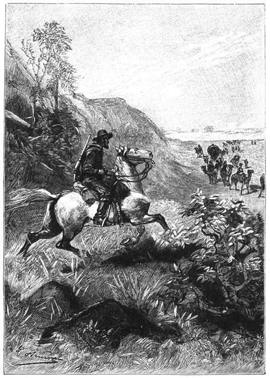Als er die Karawane bemerkte, ritt er im Galopp auf dieselbe zu.
»Ay-ya, rief er nicht ohne Bedauern aus, mit einigen Austern von King-Po und einer Flasche Wein von Tong-King würde man glauben, in Té-Coung-Yuan zu sein!«
Und er wollte mir einreden, daß es wie der berühmte Eisenthee von Peking schmecke.
Godfrey und Zach Fren überwanden ihren Ekel und kosteten auch ein Stück Schlangenfleisch, indem sie sagten, es schmecke sehr gut; ich glaubte es ihnen.
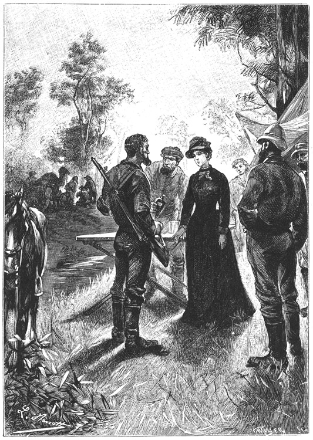Mrs. Branican fand ein Vergnügen daran, mit ihm zu sprechen.
Es ist selbstverständlich, daß dieses Reptil bis auf das letzte Stück gegessen wurde.
Die Eingebornen ließen nicht einmal das Fett übrig, das während des Bratens aus demselben gelaufen war.
In der Nacht wurden wir durch unheimliches Brüllen, das sich aus einer gewissen Entfernung vernehmen ließ, im Schlafe gestört. Dies war eine Schaar »Dingos«, die man mit Recht die Schakale von Australien nennen könnte, da sie zwischen Hund und Fuchs stehen. Sie haben einen gelblichen oder rothbraunen Pelz und einen langen, buschigen Schweif. Glücklicherweise heulten diese Thiere nur und griffen nicht das Lager an, denn in großer Zahl können sie gefährlich werden.
— — — — — — — — — — — — — — — — — — — — — —
19. November. Die Hitze wird immer drückender und die Cisternen, auf die wir stoßen, sind fast ganz ausgetrocknet. Wir müssen nach Wasser graben, wenn wir unsere Fäßchen füllen wollen.
Ich muß zugeben, daß zwischen Len Burker und Godfrey eine wirklich unerklärliche Antipathie besteht, die man fast Instinct nennen möchte. Nie spricht Einer mit dem Anderen, und es ist klar, daß sie sich ausweichen, wo sie nur können.
Ich sprach eines Tages mit Godfrey darüber.
»Du hast Len Burker nicht gern? sagte ich zu ihm.
– Nein, Mrs. Dolly, erwiderte er mir, und verlangen Sie nicht, daß ...
– Aber er gehört doch zu meiner Familie, und er ist mein Verwandter. Wenn Du mich liebst, Godfrey, so ...
– Mrs. Dolly, ich liebe Sie, aber ihn werde ich nie lieben.«
Theurer Godfrey, welche Ahnung, welcher geheime Grund mag ihn in solcher Weise sprechen lassen?
— — — — — — — — — — — — — — — — — — — — — —
27. November. Heute breiten sich vor unseren Augen ungeheure Steppen aus, bedeckt mit Spinifex, einem spitzigen Grase, das sich an manchen Stellen bis zu fünf Fuß über dem Boden erhob und mit seinen scharfen Spitzen unsere Thiere zu verwunden drohte. Wir mußten daher solche Stellen umgehen. Es ist augenscheinlich, daß ein solch eigenthümliches Gras nicht zur Ernährung der Thiere benutzt werden konnte, und die Kameele weigern sich auch, so lange die Halme gelb und grün sind, es zu fressen. Aber darum handelt es sich jetzt nicht, und die Thiere nehmen sich selbst in Acht, an diese spitzen Gräser zu stoßen.
Auf diese Weise wurde der Marsch außerordentlich beschwerlich, denn wir hatten mehr als hundert Meilen in diesen Gräsern dahinzugehen.
Die Hitze stieg immer mehr und nirgends war Schatten. Unsere Fußgänger litten besonders furchtbar darunter. Hätte man glauben können, daß fünf Monate früher, wie der Oberst Warburton constatirt hat, das Thermometer unter Null gesunken war und die Cisternen sich mit einer dichten Eiskruste bedeckt hatten?
Tom Marix gab den Befehl, daß die Männer der Escorte, welche ritten, von Zeit zu Zeit absteigen und die anderen, welche zu Fuß gingen, aufsetzen lassen sollten. Diese Maßregel wurde auf die Forderungen der Schwarzen hin getroffen, wobei ich aber mit Bedauern sehen mußte, daß Len Burker sich zu ihrem Vertreter machte. Gewiß sind diese Menschen zu beklagen, da sie barfuß in dem spitzen Grase bei einer fast unerträglichen Hitze Morgens und Abends marschiren müssen. Aber es gehört sich nicht, daß Len Burker sie gegen die weiße Escorte aufstachelt; er mischt sich da in Sachen, die ihn nichts angehen. Ich bat ihn, sich da zurückzuhalten.
»Ich thue es nur im allgemeinen Interesse, Dolly, erwiderte er mir.
– Ich will es glauben, gab ich ihm zur Antwort.
– Es muß sogar das Gepäck vertheilt werden.
– Ueberlassen Sie dies nur mir, Herr Burker, sagte Tom Marix, der zu diesem Gespräche kam. Ich werde alle nothwendigen Maßregeln ergreifen.
– Das seh' ich«, versetzte Len Burker, indem er uns mit einem wüthenden Blicke den Rücken zukehrte. Jane bemerkte es, wie sich die Blicke ihres Gatten gerade auf sie hefteten und sie wandte sich ab.
Tom Marix versprach mir Alles zu thun, was von ihm abhänge, damit die Männer der Escorte, seien es Weiße oder Schwarze, sich in nichts zu beklagen hätten.
— — — — — — — — — — — — — — — — — — — — — —
5. December. Während unserer Rast haben wir viel von den weißen Ameisen zu leiden, die uns in Myriaden überfallen. Sie sind unter dem Sande, aber ein Tritt genügt, um sie an die Oberfläche zu bringen.
»Ich habe eine harte Haut, sagte Zach Fren, eine wahre Elephantenhaut, und doch beißen mich diese verdammten Thiere.«
Nicht einmal das Leder schützt vor den Bissen dieser Ameisen, und wir können uns nicht auf die Erde setzen, ohne sofort von ihnen bedeckt zu sein. Um ihnen zu entgehen, müssen wir uns gerade in die Sonne setzen, deren Hitze sie nicht ertragen können, und da kommen wir wieder aus dem Regen in die Traufe.
Am wenigsten wurde der Chinese von den Ameisen belästigt. War er zu faul, daß er sich um die lästigen Bisse nicht kümmerte? Ich weiß es nicht, aber während wir uns kratzten, von einem Orte zum anderen gingen und alle möglichen Verrenkungen machten, lag Gîn-Ghi im Schatten des Grases ausgestreckt und schlief ruhig, als wenn die bösen Ameisen vor seiner gelben Haut Respect hätten.
Jos Meritt zeigte sich ebenso gleichgiltig. Obgleich sein langer Körper diesen Thieren ein weites Feld zum Angriff bot, so beklagte er sich doch gar nicht. In regelmäßiger automatischer Bewegung erheben sich seine Arme, fallen herab, streichen mechanisch Tausende Ameisen ab, und er sagt nur, indem er auf seinen Diener schaut:
»Diese Chinesen sind wirklich von der Natur außerordentlich begünstigt worden – Gîn-Ghi!
– Herr Jos?
– Wir werden unsere Haut vertauschen.
– Warum nicht, erwiderte der Himmlische, wenn wir auch das Geld vertauschen können.
– Gut! ... O! ... Sehr gut! ... Doch dazu gehört, daß erst Einer von uns ausgeschält werden muß, und da werden wir zuerst mit Dir beginnen.
– Nun wir können in drei Monaten weiter darüber sprechen,« erwiderte Gîn-Ghi. Dann legte er sich auf das andere Ohr und schlief bis zu dem Augenblicke, wo die Karawane wieder aufbrach.
— — — — — — — — — — — — — — — — — — — — — —
10. December. Wir werden nicht eher Ruhe vor den Ameisen haben, als bis unsere Karawane aufbricht. Es ist nur ein Glück, daß diese Thiere nicht an den Beinen der Kameele hinaufklettern, aber unsere Fußgänger sind von diesen lästigen Insecten nicht frei.
Wir werden aber noch von einem anderen Feinde angegriffen, nämlich von den Mosquitos, die durch ihre Stacheln eine der furchtbarsten Geißeln Australiens sind. Unter ihren Stichen, besonders in der Regenzeit, magern die Thiere wie in Folge einer Epidemie ab, und gehen sogar zu Grunde, ohne daß man etwas dagegen thun kann.
Und doch, was würden wir darum gegeben haben, wenn wir in der Regenzeit hätten sein können!
Denn diese Ameisen und Mosquitos waren nichts gegen die Qualen des Durstes, welche die Hitze des Monates December in Australien mit sich bringt. Der Wassermangel führt schließlich die Vernichtung aller geistigen und physischen Kräfte herbei. Jetzt gehen unsere Vorräthe aus, unsere Fäßchen klingen hohl! Wir haben sie bei der letzten Cisterne gefüllt, aber mit schmutzigem, schlechtem Wasser, das unseren Durst nicht löschen kann. Unsere Lage wird bald der der Heizer an Bord der Dampfschiffe gleichen, welche das rothe Meer durchfahren: Die Unglücklichen stürzen vor dem Feuer ihrer Kessel ohnmächtig zusammen.
Es dient uns nicht gerade zur Beruhigung, daß unsere Kameele einen schleppenden Gang beginnen, anstatt jenen regelmäßigen Schritt beizubehalten, der ihnen eigen ist. Sie strecken den Hals gegen den Horizont, der die lange und breite Ebene umzieht. Immer nur Steppe und Steppe, bedeckt mit diesem trockenen Grase, das seine starken Wurzeln im Sande halten. Kein Baum, keine Spur von einem Brunnen, einer Cisterne oder einer Quelle.
— — — — — — — — — — — — — — — — — — — — — —
16. December. In zwei Märschen haben wir heute nicht einmal neun Meilen zurückgelegt. Uebrigens habe ich seit mehreren Tagen zu meinem Leidwesen constatirt, daß unsere Mittel bedeutend zusammengeschmolzen sind. Die Thiere kommen trotz ihrer Stärke nur langsam vorwärts, besonders diejenigen, welche die Lasten trugen. Tom Marix wird wüthend, wenn seine Leute plötzlich stehen bleiben, bevor er das Zeichen zur Rast gegeben hat. Er geht auf die Lastkameele los, schlägt sie mit der Karawatsche, deren Hiebe die Thiere wegen ihrer starken Haut kaum fühlen.
Jos Meritt sagte mit seinem Phlegma, das ihn nie verließ:
»Gut! ... O! ... Sehr gut! Herr Marix! Aber ich gebe Ihnen einen guten Rath: Schlagen Sie nicht die Kameele, sondern die Führer.«
Gewiß wäre Tom Marix diesem Rathe auch gefolgt, wenn ich ihn nicht daran gehindert hätte. Bei den furchtbaren Strapazen, welche unsere Leute erdulden, müssen wir vorsichtig sein und dürfen sie nicht noch mißhandeln! Einige von ihnen würden schließlich desertiren. Ich fürchte, daß das doch noch eintritt, besonders wenn ein solcher Gedanke die Schwarzen der Escorte erfaßt, obwohl Tom Marix nicht aufhört, mir in dieser Richtung hin die beruhigendsten Versicherungen zu geben.
— — — — — — — — — — — — — — — — — — — — — —
Vom 17. bis 27. December. Der Marsch wird immer noch unter gleichen Umständen fortgesetzt.
In den ersten Tagen der Woche schlug das Wetter mit einem heftigen Winde ein wenig um. Im Norden stiegen einige Wolken auf, die wie ungeheure Kanonenkugeln aussahen, welche schon ein Funke zum Platzen bringen könnte.
An diesem Tage, es war der 23. December, fuhr ein Blitz mit furchtbar grellem Lichte aus denselben, ohne aber von jenem dröhnenden Donner begleitet zu sein, den wir in den Gebirgsgegenden hören. Zu gleicher Zeit entfesselte sich ein plötzlicher Sturm mit so elementarer Gewalt, daß wir uns auf den Thieren nicht halten konnten. Wir mußten absteigen und uns auf dem Boden ausstrecken. Zach Fren, Godfrey, Tom Marix und Len Burker hatten die größte Mühe, unsere Kibitka gegen die entfesselten Elemente zu schützen. Unter solchen Umständen war es unmöglich, an das Aufschlagen der Zelte zu denken.
»Das macht nichts, sagte Zach Fren, indem er sich die Hände rieb. Ein Gewitter ist bald vorüber.
– Es lebe das Gewitter, wenn es regnet! rief Godfrey.
– Godfrey hat Recht: Wasser! Wasser! Das ist unser Ruf ... Aber wird es regnen? ... Das ist die Frage.«
Ja, darum handelt es sich, denn ein ausgiebiger Regen wäre für uns Manna der Wüste. Unglücklicherweise war die Luft so trocken – das konnte man aus dem kurzen Donner annehmen – daß die Wolken nur Dunst blieben und sich nicht in Regen auflösen konnten. Und doch wäre es schwer gewesen, sich ein furchtbareres Gewitter, ein furchtbareres Blitzen und Donnern vorzustellen.
Ich konnte damals auch sehen, wie sich die Schwarzen bei einem Gewitter benehmen, was ich schon nach den Reisebeschreibungen kannte. Weder fürchteten sie, daß der Blitz unter sie einschlage, noch schlossen sie die Augen vor dem grellen Aufleuchten des Blitzes, oder schraken sie bei dem furchtbaren Donner zusammen. Die Schwarzen unserer Escorte stießen Freudenrufe aus und fühlten durchaus nicht jenen physiologischen Eindruck, dem jedes Wesen unterworfen ist, wenn sich die elektrische Spannung der Wolken über unserem Haupte entladet.
Gewiß ist die Nervosität bei Menschen auf niedriger Bildungsstufe wenig vorhanden. Vielleicht begrüßen sie in diesem Gewitter die Sündfluth! Und in der That war es auch nichts anderes.
»Mrs. Dolly ... Mrs. Dolly, sagte Godfrey zu mir, es ist doch Wasser, reines gutes Wasser, Himmelswasser, das über unserem Kopfe hängt! Die Blitze da bringen die Wolken zum Bersten und doch fällt nichts herunter!
– Ein wenig Geduld, liebes Kind, erwiderte ich ihm, verzweifeln wir nicht!
– Ja, versetzte Zach Fren, die Wolken verdichten sich und kommen zu gleicher Zeit der Erde näher. Ach, wenn der Wind nachließe, so würden sich auf einmal die Schleusen des Himmels öffnen!«
Und wirklich war zu befürchten, daß der Sturm diese aufgehäuften Wolken gegen Süden treibe, ohne uns einen Tropfen Wasser zu geben.
Gegen drei Uhr Nachmittags scheint sich der Himmel gegen Norden aufzuheitern; daß das Gewitter bald vorüber sein wird, das wäre eine furchtbare Enttäuschung!
»Gut! ... O ... Sehr gut!«
Jos Meritt brachte seine gewöhnliche Redensart vor, die nie gerechtfertigter war. Unser Engländer streckte die Hand aus und constatirte, daß er einige Tropfen Regen gefühlt habe.
Der Wolkenbruch ließ nicht lange auf sich warten. Wir mußten schnell unsere Gummimäntel umwerfen und dann wurden alle zur Verfügung stehenden Gefäße auf den Boden gestellt, um das kostbare Naß recht reichlich aufzufangen.
Man spannte Decken, Wäsche, Leintücher auf, um nur recht viel Wasser zu erhalten, mit dem man die armen Thiere tränken konnte.
Uebrigens konnten die Kameele sofort ihren Durst löschen, denn es bildeten sich überall Pfützen und kleine Rinnsale, und die weite Ebene drohte ein Sumpf zu werden. Es war Wasser da, genug für Jedermann. Wir erquickten uns an diesem reichlichen Wasserschwalle, welchen die trockene Erde bald wie ein Schwamm aufsaugen, und das die Sonne, die auf dem Horizonte wieder erschien, bald bis zum letzten Tropfen in Dunst verwandelt haben würde.
So hatten wir denn wieder einen Wasservorrath für mehrere Tage und wir konnten unsere täglichen Märsche von neuem beginnen, da die Leute an Leib und Seele gestärkt und die Thiere wieder gut zu Fuße waren. Die Tonnen wurden bis zum Rande gefüllt, und jedes hohle Gefäß, das nicht unumgänglich nothwendig war, als Wasserbehälter benutzt. Was die Kameele betrifft, so füllten diese ihre innere Tasche, mit der sie die Natur ausgestattet hat, für eine gewisse Zeit reichlich mit Wasser. Soll man sich nicht wundern, daß diese Tasche ungefähr siebenundsechzig Liter aufnimmt?
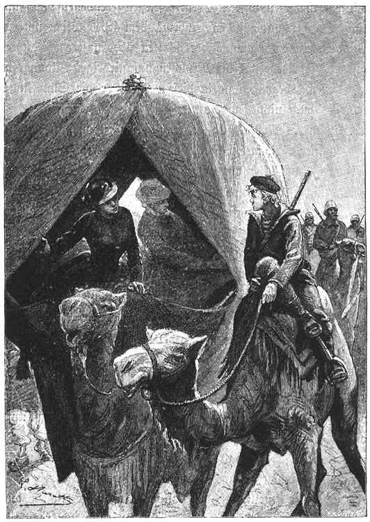Wenn dieses Kind zu unserer Kibitka kommt.
Unglücklicherweise sind diese Gewitter selten, welche gerade um diese Zeit, wo die Hitze am größten ist, die Oberfläche von Australien am wenigsten befeuchten. Es wäre daher unvorsichtig, auf eine so günstige Eventualität für die Zukunft zu rechnen. Dieses Gewitter hatte kaum drei Stunden gedauert und die Cisternen werden von den glühenden Sonnenstrahlen binnen Kurzem wieder trocken gelegt worden sein. Die Brunnen werden zwar viel mehr Wasser aufgefangen haben, und wir können uns Glück wünschen, wenn dieses Gewitter nicht local gewesen ist. Hoffen wir, daß es auf einige hundert Meilen die australische Ebene erquickt hat!
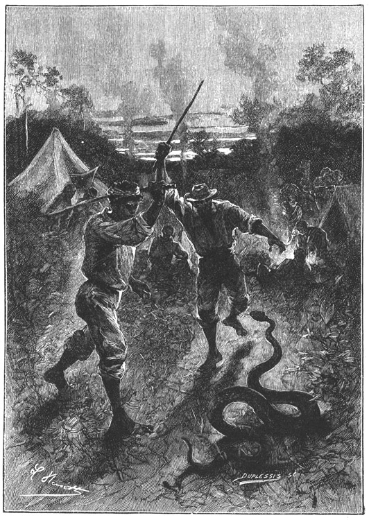... zwei von unseren Eingebornen tödteten eine ebenso große Schlange.
29. December. Indem wir uns unter solchen Umständen fast genau an den Weg des Obersten Warburton hielten, erreichten wir ohne weiteren Unfall Waterlow-Spring, hundertvierzig Meilen vom Berge Liebig entfernt. Unsere Expedition berührte damals den 126. Meridian, den Tom Marix und Godfrey auf der Karte entdeckten. So hatten wir also die Grenze überschritten, die sich vom Norden nach Süden zwischen den anstoßenden Provinzen und Theilen des Continentes hinzieht, der als Westaustralien bekannt ist.
Waterlow-Spring ist weder ein Dorf noch eine Ortschaft ... einige Hütten der Eingebornen, die in dieser Zeit leer waren, weiter nichts. Die Nomaden halten sich dort nur um die Jahreszeit auf, wo die Regengüsse die Gewässer jener Gegend speisen, was ihnen erlaubt, dort einige Zeit zu bleiben. Waterlow rechtfertigt durchaus nicht den zweiten Theil seines Namens, nämlich »Spring« (Quelle), der gewöhnlich allen Ortschaftsnamen der Wüste beigesetzt ist. Nirgends ist eine Quelle zu sehen, wenigstens nicht an der Oberfläche; während in der Sahara mit ihrem frischen Rasen, ihren schattigen Bäumen und fließenden Gewässern solche Quellen hin und wieder vorkommen, würde man solche in der australischen Wüste vergebens suchen.
In dieser Weise ist das Tagebuch der Mrs. Branican geschrieben, aus welchem noch einige Auszüge gegeben werden sollen, denn sie lassen besser als die genaueste Beschreibung die Beschaffenheit des Landes erkennen und alle die furchtbaren Qualen verstehen, welche die Reisenden dort zu erdulden hatten. Wir werden auch die moralische Kraft, die unbezwingliche Energie der Verfasserin ebenso erkennen, wie ihren festen Entschluß, das Ziel zu erreichen, mochten die Opfer noch so groß sein.
— — — — — — — — — — — — — — — — — — — — — —
30. December. Wir müssen uns in Waterlow-Spring achtundvierzig Stunden aufhalten, worüber ich trostlos bin, wenn ich an die Entfernung denke, die uns noch von dem Thale des Fitz-Roy trennt. Und weiß man, ob wir den Stamm der Indas nicht noch jenseits dieses Thales suchen müssen? Mag sich seit dem Tage, wo Harry Felton ihn verlassen hat, die Lage Johns verändert haben? ... Werden die Eingebornen nicht an ihm Rache genommen haben, weil sein Gefährte geflohen ist? ... Ich darf an so etwas nicht denken! ...
Dieser Gedanke würde mich tödten!
Zach Fren versucht mich zu beruhigen:
»Da der Capitän John und Harry Felton bei diesen Indas seit so viel Jahren gefangen gehalten wurden, sagte er zu mir, so haben sie auch ein Interesse daran, sie am Leben zu erhalten. Die Eingebornen haben in diesem Weißen einen werthvollen Häuptling erkannt, und sie warten nur auf eine Gelegenheit, wo sie ihn gegen ein hohes Lösegeld ausliefern können. Nach meiner Ansicht hat die Flucht Harry Felton's die Lage des Capitän John nicht verschlechtert.«
Wolle Gott, daß dem so wäre.
— — — — — — — — — — — — — — — — — — — — — —
31. December. Heute geht das Jahr 1890 zu Ende, und somit sind es fünfzehn Jahre, daß der »Franklin« den Hafen von San-Diego verlassen hat ... Fünfzehn Jahre! ... Erst seit vier Monaten hat unsere Karawane Adelaide verlassen! Wie wird dieses Jahr für uns enden, das in der Wüste beginnt!
— — — — — — — — — — — — — — — — — — — — — —
1. Januar. Meine Gefährten wollten diesen Tag nicht vorübergehen lassen, mir ein »Glückliches Neues Jahr« zu wünschen. Meine liebe Jane umarmte mich tiefgerührt und ich hielt sie lange in meinen Armen. Zach Fren und Tom Marix drückten mir die Hand. Ich weiß, daß ich in ihnen zwei Freunde habe, die für mich in den Tod gehen würden. Alle Leute drängten sich an mich heran und brachten mir ihre Glückwünsche dar. Ich sage Alle, mit Ausnahme der Schwarzen der Escorte, deren Unzufriedenheit sich bei jeder Gelegenheit zeigte. Es ist klar, Tom Marix hält sie nur mit Mühe in Ordnung.
Len Burker sprach zu mir in seinem gewöhnlichen Tone, indem er mir versicherte, daß unsere Unternehmung Erfolg haben werde, doch es fragt sich, ob es gut ist, wenn wir den Weg zu dem Flusse Fitz-Roy einschlagen. Die Indas sind nach seiner Meinung Nomaden, welche man häufiger in den benachbarten Gegenden von Queensland, d. h. im Osten des Continentes, findet. »Es ist wahr, sagte er, daß wir uns an jenen Ort begeben, wo Harry Felton seinen Capitän zurückgelassen hat ... Aber wer kann wissen, ob die Indas nicht ihre Plätze verlassen haben ...« u. s. w.
Diese Worte wurden in jenem Tone gesagt, welcher kein Vertrauen einflößt, jenem Tone, den manche Leute anschlagen, ohne einen beim Sprechen anzusehen. Aber Godfreys Aufmerksamkeit hat mich am meisten gerührt. Er hatte ein Bouquet aus jenen kleinen Blumen gebunden, die zwischen den Grashalmen wachsen, und bot es mir mit so zärtlichen Worten an, daß ich darüber ganz gerührt war und weinen mußte, als ich ihn umarmte und seine Küsse den meinigen antworteten ... Warum erinnerte ich mich wieder, daß mein kleiner Wat so alt ... so gut wie er sein würde!
Jane war auch dabei ... Sie war gerührt und auffallend bleich ... Ich dachte, daß sie ohnmächtig werden würde, aber sie konnte sich beherrschen und ihr Mann führte sie weg ... ich wagte nicht, sie zurückzuhalten.
Wir setzten an diesem Tage bei trübem Wetter um vier Uhr Nachmittags unseren Weg fort. Die Hitze war ein wenig erträglicher, und alle Kameele, Reit- wie Lastthiere, hatten sich von ihrer Ermüdung erholt und schritten kräftig dahin. Man mußte sie sogar zurückhalten, damit die Leute, die zu Fuß gingen, ihnen folgen konnten.
— — — — — — — — — — — — — — — — — — — — — —
15. Januar. Während einiger Tage haben wir einen ziemlich großen Weg zurückgelegt. Zwei- oder dreimal regnete es noch reichlich, wir litten keinen Durst und ergänzten unsere Vorräthe vollständig. Die Wasserfrage ist die ernsteste und auch die erschreckendste, wenn es sich um eine Reise in der Wüste handelt, denn sie verlangt eine beständige Fürsorge. In der That scheinen sehr wenig Cisternen auf den Wegen, die wir nehmen, zu sein. Der Oberst Warburton machte dieselbe Erfahrung auf seiner Reise, welche an der westlichen Küste von Tasmanien endigte.
Wir leben jetzt nur von unseren Vorräthen, denn das Wild hat diese traurigen Einöden geflohen. Kaum sieht man einige Tauben, denen man sich nicht nähern kann. Sie ruhen nach langem Fluge zwischen dem Grase aus, wenn ihre Flügel nicht mehr die Kraft haben, sie zu halten. Nichtsdestoweniger haben wir noch Vorräthe für mehrere Monate und ich kann nach dieser Richtung vollständig beruhigt sein. Zach Fren achtet mit großer Sorgfalt darauf, daß Fleisch, Conserven, Thee, Mehl, Kaffee regelmäßig und in der festgesetzten Menge vertheilt werden. Wir selbst sind diesem Gesetze unterworfen und Niemand bildet eine Ausnahme. Die Schwarzen haben keine Ursache sich zu beklagen, und wir werden nicht besser behandelt wie sie. Hin und wieder fliegen einige verirrte Sperlinge über die Oberfläche dieser Gegenden dahin, aber sie sind nicht werth, daß man sich die Mühe nimmt, sie zu jagen.
Immer bereiteten uns Hunderttausende von weißen Ameisen während der Raststunden große Schmerzen, aber von den Mosquitos blieben wir, da das Land zu trocken war, verschont. »Wir werden sie an feuchten Stellen wiederfinden«, bemerkte Tom Marix. Nun, wir wollen gerne ihre Bisse ertragen, wenigstens stoßen wir wieder auf Wasser.
Wir erreichten am 23. Januar Mary-Spring, neunzig Meilen von Waterlow entfernt.
Eine Gruppe magerer Bäume, halb verwelkt, steht an diesem Orte.
»Ihre Blätter hängen wie durstige Zungen herunter,« sagte Godfrey.
Dieser Vergleich ist ganz richtig.
Ich bemerke, daß dieser Bursche nichts von der Heiterkeit seines Alters verloren hat. Seine Gesundheit läßt nichts zu wünschen übrig, worüber ich sehr beruhigt bin, denn er ist in einem Alter wo die jungen Leute schnell wachsen und kräftiger Nahrung bedürfen. Diese unglaubliche Aehnlichkeit verwirrt mich manchmal ... Ganz derselbe Blick, wenn er mich ansieht, derselbe Ton seiner Stimme ... er nennt die Dinge und drückt seine Gedanken geradeso aus, wie mein armer John.
Eines Tages machte ich Len Burker auf diese Eigenthümlichkeiten aufmerksam.
»Nein, Dolly, antwortete er, das ist eine reine Sinnestäuschung. Ich gestehe, daß ich über die Aehnlichkeit gar nicht erstaunt bin, die nach meiner Meinung nur in Ihrer Einbildung existirt. Nun, da liegt weiter nichts daran, wenn Sie aus diesem Grunde für den Burschen ein so großes Interesse haben.
– Nein, Len, antwortete ich, denn ich fühle mich blos deshalb zu Godfrey hingezogen, weil er sich für das einzige Ziel meines Lebens so begeisterte ... John wiederzufinden und zu retten. Er bat mich inständigst, ihn mitzunehmen, und gerührt von diesen Bitten, willigte ich ein. Und dann ist er ja eines meiner Waisenkinder in San-Diego, die im Wat-House erzogen wurden ... Godfrey ist wie ein Bruder meines kleinen Wat ...
– Ich weiß, ich weiß, Dolly, erwiderte Len Burker, und ich verstehe Sie auch bis zu einem gewissen Grade. Wolle der Himmel, Sie möchten nie eine That bereuen, wo mehr Ihre Einbildungskraft als Ihre Vernunft im Spiele ist.
– Ich höre Sie nicht gern so sprechen, Len Burker, erwiderte ich lebhaft. Solche Bemerkungen verletzen mich. Was haben Sie gegen Godfrey?
– O nichts ... nichts bis jetzt. Aber wer weiß ... später ... könnte er vielleicht Ihre Güte ein wenig zu sehr mißbrauchen ... Ein Findelkind ... Man weiß nicht, woher es kommt ... woher es ist ... welches Blut in seinen Adern fließt ...
– Das Blut braver, ehrlicher Leute, dafür bürge ich, rief ich aus. An Bord des »Brisbane« hatten ihn Alle gern, Vorgesetzte wie Kameraden, und wie mir der Capitän selbst sagte, erhielt Godfrey noch nie einen Tadel! Zach Fren, der sich auf Menschen versteht, schätzt ihn ebenso wie ich! Sagen Sie mir also Len Burker, was Sie gegen diesen Knaben haben?
– Ich ... Dolly! ... Ich liebe ihn und liebe ihn auch nicht ... Er ist mir vollständig gleichgiltig ... Was meine Freundschaft anbelangt, so gebe ich sie eben nicht dem ersten Besten, und ich denke nur an John, ihn den Eingebornen zu entreißen ...«
Wenn Len Burker mir durch diese Worte eine Lehre geben wollte, so beachte ich sie nicht. Ich werde meinen Gatten nicht um dieses Kindes willen vergessen, aber der Gedanke macht mich glücklich, daß Godfrey seine Anstrengungen mit den meinigen vereinigt. Ich bin fest überzeugt, daß John Alles billigen wird, was ich gethan habe, und ich rechne auch für die Zukunft auf diesen jungen Mann.
Als ich Jane dieses Gespräch mittheilte, schlug sie die Augen nieder und gab keine Antwort.
In Zukunft werde ich schweigen, denn Jane will und kann Len Burker nicht Unrecht geben. Ich verstehe diese Zurückhaltung, es ist ihre Pflicht.
— — — — — — — — — — — — — — — — — — — — — —
29. Januar. Wir sind an den Ufern eines kleinen Sees angelangt, den Tom Marix für den White-Lake hält. Er rechtfertigt auch seinen Namen »Weißer See«, denn an Stelle des Wassers, das verdunstet ist, befindet sich da eine dicke Salzkruste, die bis auf den Grund geht. Dieser See ist noch ein Rest jenes großen Binnenmeeres, das ehemals Australien in zwei große Inseln theilte.
Zach Fren ergänzte unsere Salzvorräthe; hätten wir lieber trinkbares Wasser gefunden!
In der Umgebung sind eine Menge Ratten, die kleiner sind wie die gewöhnlichen, vor denen wir aber sehr auf der Hut sein müssen, weil sie wegen ihrer Gefräßigkeit Alles benagen, was man unbeachtet stehen läßt.
Uebrigens fanden die Schwarzen, daß diese Thiere ein gar nicht so übles Wildpret liefern. Sie fingen daher einige Dutzend, zogen sie ab, brieten sie dann und ergötzten sich an diesem ekelhaften Fleische. Wir müßten wohl schon gar keine Lebensmittel mehr haben, wenn wir diese Thiere essen sollten. Gebe Gott, daß wir nie auf solches Fleisch angewiesen seien!
Nun sind wir an der Grenze der Wüste, welche man unter dem Namen der »Great-Sandy-Desert« versteht.
Während der letzten zwanzig Meilen veränderte sich allmählich das Terrain. Die Gräser sind weniger dicht, und diese mageren Pflanzen sind ganz im Verschwinden begriffen. Ist denn der Boden so trocken, daß er kaum dieser so anspruchslosen Vegetation entspricht? Niemand würde es für möglich halten, der nicht diese ungeheure, sandige Wüste sähe. Es muß daher in diesen Gegenden, die von den Sonnenstrahlen förmlich verzehrt werden, gar nicht regnen, nicht einmal im Winter.
Vor dieser fürchterlichen Trockenheit und Einöde konnte sich Keiner von uns eines gewissen ängstlichen Gefühles erwehren. Tom Marix zeigte mir diese öden Gegenden auf der Karte. Ein weißer Fleck, den die Reisenden Giles und Gibson durchschnitten. Gegen Norden zeigt die Linie, welche den Weg des Obersten Warburton angiebt, deutlich die Unsicherheit und die Umwege, welche er machen mußte, um Wasser zu finden. Da sind seine kranken, hungrigen Leute am Ende ihrer Kräfte ... Dort fallen seine Thiere um ... stirbt sein Sohn ... Besser ist es, wir lesen seinen Reisebericht nicht ... Die Kühnsten würden zu entsetzt zurückweichen ... Aber ich habe ihn gelesen und ... ich lese ihn wieder ... Ich lasse mich nicht in Schrecken setzen ... Den Gefahren, denen dieser Reisende zur Erforschung unbekannter Strecken Australiens getrotzt hat, werde auch ich trotzen, um John aufzufinden ... Das ist das einzige Ziel meines Lebens, und ich werde es erreichen.
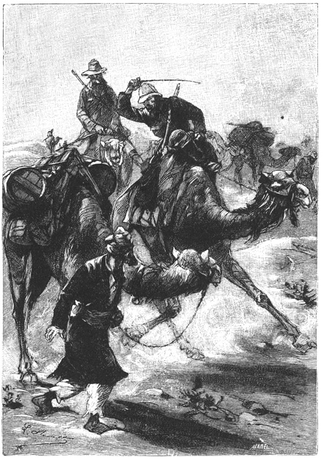»Schlagen Sie nicht die Kameele ...«
— — — — — — — — — — — — — — — — — — — — — —
3. Februar. Seit fünf Tagen müssen wir unseren Marsch um die Hälfte verringern ... nichts ist bedauerlicher. Unsere Karawane, welche durch Terrainschwierigkeiten aufgehalten wird, ist unfähig, geradeaus zu marschiren. Der Boden ist manchmal zerklüftet, so daß wir oft absteigen müssen. An einigen Orten sind Dünen, welche die Kameele umgehen müssen; manchmal erheben sich die Sandhügel bis zu einer Höhe von hundert Fuß, welche wiederum Thäler von sechshundert bis siebenhundert Fuß Breite trennen. Da die Leute tief in den Sand einsinken, so wird der Marsch immer beschwerlicher.
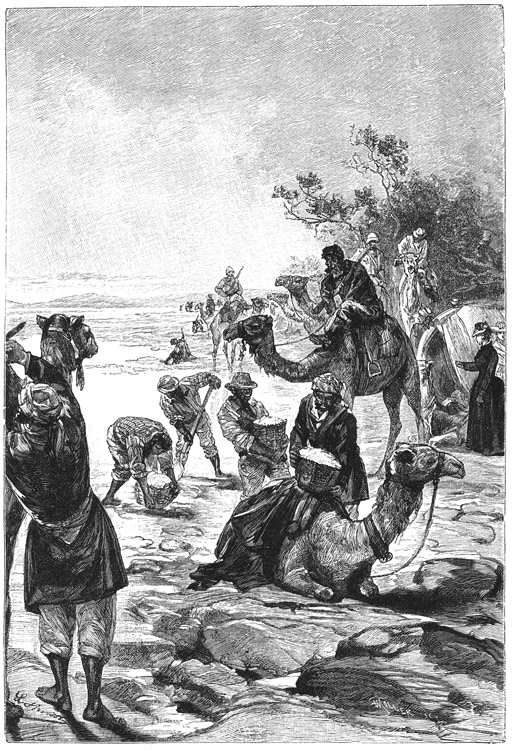Zach Fren ergänzte unsere Salzvorräthe.
Die Hitze ist erstickend, und man kann sich nicht vorstellen, mit welcher Gluth die Sonne ihre Strahlen herabsendet. Es sind förmliche Feuerpfeile, die an tausend Stellen den Körper durchdringen. Jane und ich konnten kaum in unserer Kibitka bleiben. Was mußten erst unsere Gefährten von Früh bis Abends leiden! Zach Fren, der doch so kräftig ist, wird müde, aber er hat nichts von seinem guten Humor verloren. Dieser treue Freund, dessen Leben mit dem meinigen so verknüpft ist! Jos Meritt erträgt diese Strapazen mit einer Seelenruhe und einem Widerstande, um welche er zu beneiden ist; sein Diener, der weniger geduldig ist, klagt, ohne daß es ihm gelingt, seinen Herrn zu rühren. Wenn man bedenkt, daß dieser Mensch solche Strapazen um eines Hutes willen erträgt!
»Gut! ... O! ... Sehr gut! antwortet er, wenn man ihm das sagt; aber welch seltener Hut! ...
– Ein alter Komödiantenhut!« murmelte Zach Fren, indem er mit den Achseln zuckte.
Zwischen acht und vier Uhr ist es unmöglich, einen Schritt zu thun. Man lagert sich gleich hin, wo man steht, man schlägt ein oder zwei Zelte auf. Die Leute, Weiße und Schwarze, strecken sich, wenn sie es können, im Schatten der Kameele aus. Aber was erschreckend ist – das Wasser geht aus; was soll aus uns werden, wenn wir nur auf ausgetrocknete Brunnen stoßen? Ich fühle, daß Tom Marix außerordentlich unruhig ist, obgleich er mir seine Angst zu verbergen sucht. Er hat Unrecht, es wäre besser, er würde mir nichts verhehlen. Ich kann Alles hören und ich werde nicht schwach werden ...
— — — — — — — — — — — — — — — — — — — — — —
14. Februar. Elf Tage sind verflossen und nur an zweien hat es geregnet. Wir waren nicht im Stande, unsere Fäßchen zu füllen; weder konnten die Menschen ihren Durst löschen, noch die Thiere genügenden Wasservorrath zu sich nehmen; wir sind in Emily-Spring angekommen, wo die Quelle ganz ausgetrocknet ist. Unsere Thiere sind erschöpft, Jos Meritt weiß nicht mehr, welche Mittel er ergreifen soll, um sein Kameel weiter zu bringen. Er schlug es nicht, sondern suchte ihm von einer anderen Seite beizukommen. Ich hörte ihn sagen:
»Armes Thier, wenn Du auch leidest, so hast Du wenigstens keinen Kummer.«
Das Thier schien diese Auszeichnung nicht zu verstehen. Wir setzten unseren Weg fort mit größerer Unruhe als sonst. Zwei Thiere sind krank, sie schleppen sich kaum weiter und werden wohl die Reise nicht fortsetzen können. Die Lebensmittel, welche diese Thiere trugen, wurden auf ein Reitkameel gelegt, das einem der Leute von der Escorte genommen wurde.
Seien wir glücklich, daß das männliche Kameel, worauf Tom Marix sitzt, noch kräftig ist, denn ohne dieses Thier würden auch die anderen erlahmen und nichts könnte sie dann weiter bringen!
Die armen kranken Thiere mußten getödtet werden, denn sie verhungern, verdursten, oder als Beute eines langen Todeskampfes zu lassen, wäre unmenschlich gewesen. Besser man macht ihren Leiden durch einen Schuß ein Ende!
Die Karawane zieht weiter und umgeht einen Sandhügel ... zwei Schüsse ertönen ... Tom Marix kommt wieder zu uns und der Marsch wird fortgesetzt. Der Zustand zweier unserer Leute macht mir sehr viel Sorge, sie haben das Fieber, und wir sparen keine Arznei aus unserer Apotheke. Aber ein brennender Durst verzehrt sie, unsere Wasservorräthe sind weg und nichts zeigt uns an, daß wir in der Nähe von Cisternen sind.
Die Kranken liegen auf dem Rücken eines Kameels ausgestreckt, das ihre Gefährten führen. Man kann Menschen nicht zurücklassen, wie man Thiere zurückläßt. Wir werden sie pflegen, das ist unsere Pflicht ... aber die furchtbare Hitze reibt sie allmählich auf.
Tom Marix, der die Schrecken der Wüste gewohnt ist und seine reichen Erfahrungen oft bei der Pflege von Provinzpolizisten verwendet hat, weiß keinen Rath mehr ... Wasser! ... Wasser! ... Das verlangen wir von den Wolken, weil es uns der Boden unmöglich geben kann.
Die Schwarzen ertragen am Besten die Strapazen und scheinen nicht sehr unter der furchtbaren Hitze zu leiden. Wenn sie auch weniger zu erdulden haben, so wächst doch ihre Unzufriedenheit von Tag zu Tag. Die Unwilligsten flüstern während der Rast miteinander, und Alles deutet auf eine Empörung hin.
Am 21. verweigerten alle gemeinschaftlich, den Weg nach Nordwesten fortzusetzen, weil sie vor Durst dem Tode nahe wären. Ach! Wie haben sie Recht! Seit zwölf Stunden ist kein Tropfen Wasser mehr in unseren Fässern; wir müssen Branntwein trinken, dessen Wirkungen schlimm sind.
Ich mußte persönlich unter die aufrührerischen Schwarzen treten, denn es handelte sich darum, es ihnen verständlich zu machen, daß ein Aufenthalt unter solchen Umständen ihre Leiden nicht beenden würde.
»Wir wollen, erwiderte einer von ihnen, den Rückweg einschlagen.
– Zurück? ... und bis wohin?
– Bis nach Mary-Spring.
– In Mary-Spring ist auch kein Wasser, erwiderte ich, und das wißt Ihr sehr gut.
– Wenn in Mary-Spring auch kein Wasser ist, so werden wir es ein wenig weiter finden auf der Seite des Wilson-Berges.«
Ich sah Tom Marix an, welcher die Karte unserer Wüste brachte; wir schauen nach und sehen wirklich nördlich von Mary-Spring einen ziemlich großen Fluß, der vielleicht noch nicht ausgetrocknet war. Er hieß Sturt-Creek. Wie konnte der Eingeborne eine Kenntniß von diesem Flusse haben? Ich fragte ihn; er zögerte zuerst und antwortete schließlich, daß Herr Burker es ihnen gesagt habe. Er ist es auch, der ihnen den Vorschlag gemacht habe, dorthin zu ziehen. Ich war wirklich entrüstet über die Unvorsichtigkeit Len Burker's, einen Theil der Escorte aufzuhetzen, nach Osten zu ziehen. Es würde daraus nicht nur eine Verzögerung, sondern eine bedeutende Abweichung unserer Reise nach dem Flusse Fitz-Roy eintreten.
Ich stellte ihn sofort zur Rede.
»Was wollen Sie, Dolly, besser ist es, wir setzen uns Verzögerungen aus oder Abänderungen, als daß wir auf einem Wege weiter ziehen, wo kein Wasser zu finden ist.
– In jedem Falle, Herr Burker, sagte Zach Fren erregt, gehört es sich, daß Sie Ihre Meinung darüber Mrs. Branican und nicht den Eingebornen mittheilen.
– Sie verkehren mit unseren Schwarzen auf solche Weise, fügte Tom Marix dazu, daß ich sie nicht mehr halten kann. Bin ich ihr Chef oder sind Sie es, Herr Burker?
– Ich finde Ihre Bemerkungen unpassend, erwiderte Burker.
– Unpassend oder nicht, sie sind durch Ihr Benehmen vollständig gerechtfertigt.
– Es hat mir hier Niemand zu befehlen, außer Mrs. Branican ...
– Gut, Len Burker, versetzte ich, wenn Sie künftighin etwas zu sagen haben, so bitte ich, sich an mich zu wenden und nicht an Andere.
– Mrs. Dolly, sagte dann Godfrey, soll ich nicht vorausreiten, um nach einer Cisterne zu suchen? ... Ich werde schließlich doch eine finden.
– Cisternen ohne Wasser«, sagte Len Burker leise, der sich mit einem Achselzucken entfernte.
Ich kann mir lebhaft vorstellen, was Jane, die dieser peinlichen Scene auch beiwohnte, leiden mußte. Das Benehmen ihres Gatten kann für uns von den schlimmsten Folgen sein. Ich mußte mich mit Tom Marix vereinigen, um von den Schwarzen zu erlangen, daß sie nicht mehr auf den Rückzug bestanden. Es gelang uns ohne Mühe. Aber sie erklärten, wenn wir binnen vierundzwanzig Stunden kein Wasser fänden, so würden sie nach Mary-Spring zurückkehren, um den Sturt-Creek zu erreichen.
— — — — — — — — — — — — — — — — — — — — — —
23. Februar. Welch unbeschreibliche Qualen in beiden darauffolgenden Tagen! Der Zustand unserer beiden kranken Gefährten verschlimmerte sich. Drei Kameele fielen um und standen nicht mehr auf, unfähig, sich zu bewegen. Sie mußten getödtet werden, und somit waren vier Mann der Escorte gezwungen, zu Fuß zu gehen.
Kein menschliches Wesen in dieser Great-Sandy-Wüste! Kein Australier aus den Gegenden Tasmaniens, der uns zu Cisternen geführt hätte! Gewiß war unsere Karawane von dem Wege des Obersten Warburton abgewichen, denn dieser hatte nie so lange Märsche ohne Wasser zu machen gehabt. Oft enthielten die halb ausgetrockneten Cisternen nur wenig schmutziges Wasser. Aber es war doch Wasser! Und wir ...
Heute konnten wir nach dem ersten Marsche unseren Durst löschen, indem es Godfrey gelang, in nicht geringer Entfernung eine Cisterne zu finden.
Seit früh befand sich das arme Kind immer zwei Meilen voraus, als wir ihn gegen zwei Uhr in aller Eile zurückkommen sahen.
»Eine Cisterne! ... Eine Cisterne!« rief er schon von weitem.
Bei diesem Rufe bekam Alles wieder Leben. Die Kameele gingen rascher; es schien, als ob das Thier Godfreys ihnen gesagt hätte:
»Wasser! ... Wasser!«
Nach einer Stunde hielt die Karawane bei einer Baumgruppe, deren trockenes Laub die Cisterne beschattete. Glücklicherweise waren es Gummibäume und keine Eukalypten, die wohl den letzten Tropfen aufgezehrt hätten. Aber es darf nicht unerwähnt bleiben, daß eine kleine Schaar Menschen diese selten vorkommenden Cisternen in einem Augenblick leeren kann. Das Wasser ist nicht reichlich vorhanden und muß auch noch oft aus dem Sande gegraben werden, weil diese Cisternen keine menschlichen Werke sind, sondern natürliche Aushöhlungen, die sich während der Winterregen bilden. Sie haben kaum fünf bis sechs Fuß Wasser, was aber genügt, daß es, gegen die Sonnenstrahlen geschützt, vor Verdunstung bewahrt bleibt und sich sogar während der langen Sommerhitze erhält.

Jeder von uns labte sich an diesem kühlen Naß.
Manchmal verrathen sich diese Wasserbehälter an der Oberfläche nicht durch eine Gruppe von Bäumen, und man kann leicht an ihnen vorübergehen, ohne sie zu sehen. Man muß daher das Land sehr sorgfältig absuchen, was Oberst Warburton den Wüstenreisenden nicht oft genug empfehlen kann.
Diesmal hatte Godfrey eine glückliche Hand, denn die Cisterne, an der wir seit elf Uhr unser Lager aufgeschlagen hatten, enthielt mehr Wasser, als den Menschen, Thieren, und zur Füllung unserer Fässer nothwendig war. Das Wasser war, da es durch den Sand sickerte, frisch, weil es, am Fuße einer Düne, nicht direct den Sonnenstrahlen ausgesetzt war.
Jeder von uns labte sich an diesem kühlen Naß und wir mußten sogar unsere Gefährten auffordern, nur mäßig zu trinken, da sie sich schließlich krank machen konnten.
Am folgenden Tage setzten wir um vier Uhr früh unseren Weg fort, indem wir uns nach Nordwest wandten, um auf dem kürzesten Weg Joanna-Spring zu erreichen, das ungefähr hundertneunzig Meilen von Mary-Spring entfernt liegt.
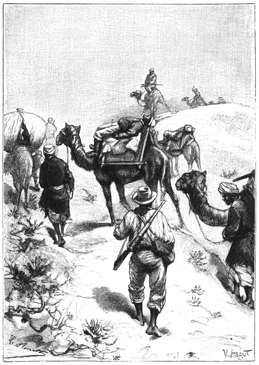Die Kranken liegen auf dem Rücken eines Kameels.
Diese wenigen Blätter aus dem Tagebuch der Mrs. Branican zeigen zur Genüge, daß ihre Energie sie nicht einen Augenblick verlassen hat.
Wir nehmen nun die Beschreibung dieser Reise wieder auf, der die Zukunft noch so Vieles vorbehielt, was unmöglich vorausgesehen werden konnte und so ernste Folgen nach sich zog.
Wie uns die letzten Blätter des Tagebuchs der Mrs. Branican erkennen ließen, wurde die Karawane wieder muthig und vertrauensvoll. An Lebensmitteln war nie Noth und sie hatten auch deren für mehrere Monate vorräthig. Nur der Mangel an Wasser machte sich dann und wann recht fühlbar, und auch mit diesem waren sie jetzt durch die glückliche Auffindung einer Cisterne reichlich versorgt.
Nur mußten sie immer noch eine furchtbare Hitze ertragen, eine erstickende Luft einathmen, während weit und breit kein Baum und Strauch stand. Es giebt wenige Reisende, die diesen Strapazen Stand halten können, wenn sie nicht in dem Lande geboren sind. Wo der Eingeborne fest weiterschreitet, unterliegt der Fremde. Zu diesem mörderischen Klima muß man geboren sein.
Nichts als jene Dünen und rothen Sandmassen! Der gleichsam brennende Boden, dessen intensive Farbe noch durch die Sonnenstrahlen gesteigert wurde, blendete fortwährend die Augen. Der Sand war so heiß, daß es einem Weißen unmöglich war, barfuß zu gehen; die Schwarzen konnten dies vermöge ihrer abgehärteten Haut wohl thun, und sie klagten auch in dieser Beziehung nie. Aber sie klagten doch und ihr Unwille trat bei jeder Gelegenheit hervor. Wenn Tom Marix nicht eingesehen hätte, daß er seine Escorte vollständig beisammen haben mußte, weil sie doch mit einigen Stämmen in Kampf gerathen könnten, so hätte er Mrs. Branican gerathen, sie aus ihrem Dienste zu entlassen.
Uebrigens sah Tom Marix die Schwierigkeiten immer mehr wachsen und er konnte sich nicht verschließen, daß trotz aller Qualen und Gefahren, denen man bisher getrotzt hatte, sie doch dem sicheren Verderben entgegengingen. Er behielt das für sich, und ließ gegen Niemanden ein Wort darüber fallen. Nur Zach Fren durchschaute ihn und war förmlich beleidigt darüber, daß er ihn nicht ins Vertrauen zog.
»Tom, sagte er eines Tages zu ihm, ich hätte Sie nicht für den Mann gehalten, der den Muth verliert!
– Ich den Muth verlieren! ... Sie täuschen sich, Zach, wenigstens in dem Sinne, daß ich nie den Muth verlieren werde, meine übernommene Mission bis zu Ende zu führen. Den Durchzug durch diese Wüsten fürchte ich nicht, sondern nach demselben gezwungen zu werden, ohne Erfolg wieder zurückzukehren.
– Glauben Sie denn, Tom, daß der Capitän John seit der Flucht Harry Felton's zugrunde gegangen ist?
– Ich weiß nichts davon, Zach, und Sie wissen darüber auch nicht mehr.
– O ja, ich weiß es, wie ich sicher weiß, daß zwei mal zwei vier ist.
– Sie sprechen hier geradeso, wie Mrs. Branican oder Godfrey sprechen, und Sie nehmen ebenso wie jene die Hoffnung als Gewißheit an. Ich wünschte, Sie hätten Recht. Aber der Capitän John befindet sich, wenn er am Leben ist, in den Händen der Indas, und wo sind diese Indas?
– Sie sind dort, wo sie sind, Tom, und dahin muß die Karawane ihren Weg nehmen, sollte sie auch noch ein halbes Jahr herumwandern müssen. Zum Teufel! Erst wenn wir nicht mehr weiter können, gehen wir wieder zurück ...
– Ja, Zach, auf dem Meere geht das schon, wenn man weiß, man kehrt in diesen oder jenen Hafen wieder zurück. Aber wissen wir etwas, wohin wir durch diese Gegenden da kommen?
– In der Verzweiflung wird man es freilich nicht wissen.
– Ich verzweifle nicht, Zach.
– O ja, Tom, und was noch furchtbarer ist, Sie werden es schließlich nicht mehr verbergen können. Derjenige, welcher seine Unruhe nicht verhehlt, ist ein schlechter Capitän und bringt in seine Mannschaft Unruhe. Hüten Sie sich davor, Tom, nicht um Mrs. Branican's willen, die nichts von ihrem Wege abbringen könnte, sondern vor den Weißen unserer Escorte! Wenn sie mit den Schwarzen gemeinsame Sache machen ...
– Ich bürge für sie, wie für mich!
– Wie ich für Sie bürge, Tom! Sprechen wir nicht mehr davon, daß wir die Flagge herablassen wollen, so lange noch die Mastbäume stehen.
– Wer spricht denn davon, Zach? Nur Len Burker ...
– O, der, Tom! Wenn ich Commandant wäre, so hätte ich ihn längst in Fesseln schlagen lassen. Nun, er möge wohl auf der Hut sein, denn ich lasse ihn nicht aus den Augen!«
Zach Fren hatte Recht, Len Burker zu beobachten, denn wenn eine Empörung in der Escorte ausbräche, so hätte man dies nur ihm zu verdanken, denn er hetzte die Schwarzen auf, denen Tom Marix so vertraute. Dies wäre ein Grund, weshalb die Expedition mißlingen könnte. Aber war er nicht schon vorhanden, als Tom Marix es kaum mehr für möglich hielt, mit den Indas zusammenzutreffen und den Capitän John zu befreien?
Obwohl die Karawane nicht ganz aufs Gerathewohl weiterzog, indem sie die Richtung gegen den Fitz-Roy einhielt, so konnten doch unter Umständen die Indas Tasmanien verlassen haben; vielleicht befanden sie sich auch auf dem Kriegspfade, denn es kommt selten vor, daß diese Stämme untereinander in Frieden leben. Sie hassen einander, und die kleinsten Streitigkeiten führen zu blutigen Kämpfen, denn der Krieg ist bei den Cannibalen mehr eine Jagd. In Wahrheit ist der Feind nicht der Feind, sondern er ist das Wild, und der Sieger verzehrt den Besiegten. Daher rühren denn auch diese Kämpfe und Verfolgungen, die die Eingebornen so oft zwingen, ihre Ansiedlungen zu verlassen. Es war deshalb von großem Interesse zu hören, ob die Indas ihre Plätze noch innehatten, was man aber nur von einem Schwarzen erfahren konnte, der von Nordwesten kam.
Dahin gingen nun die Bemühungen des Tom Marix und Godfrey's, der es sich trotz aller Ermahnungen Mrs. Branican's nicht nehmen ließ, immer auf einige Meilen vorauszureiten. Wenn er kein Wasser suchte, so wollte er einen Eingebornen finden – bisher leider ohne Erfolg.
Das Land war wüste. Welches menschliche Wesen hätte daher hier leben können?
Am 9. März gegen neun Uhr früh hörte man endlich in kurzer Entfernung einen Ruf – einen Ruf, der aus folgenden zwei Wörtern bestand:
»Coo-eeh!
– Da sind Eingeborne in der Nähe! sagte Tom Marix.
– Eingeborne? fragte Dolly.
– Ja, Mistreß, denn sie haben die Gewohnheit, einander so zu rufen.
– Versuchen wir, mit ihnen zusammenzutreffen!«
Die Karawane näherte sich bis aus ungefähr hundert Schritte, und Godfrey signalisirte zwei Schwarze. Es war nicht leicht, sich ihrer zu bemächtigen, denn sie fliehen die Weißen schon von weitem. Die Schwarzen suchten sich auch hinter dem Gestrüpp einer Düne zu verstecken; der Escorte gelang es aber, sie zu umzingeln, und sie führte dieselben zu Mrs. Branican.
Einer von ihnen war ungefähr fünfzig Jahre alt, der zweite, sein Sohn, etwa zwanzig. Beide begaben sich eben nach der Station an dem See Woods, die zu dem telegraphischen Netz gehört. Verschiedene Geschenke an Stoffen und besonders einige Pfund Tabak machten sie bald zutraulicher, und sie zeigten den Willen, auf die Fragen des Tom Marix zu antworten – Antworten, welche dieser sofort für Mrs. Branican, Godfrey, Zach Fren und ihre Gefährten übersetzte.
Die Australier sagten zuerst, wohin sie gingen – was von geringem Interesse war.
Aber Tom Marix fragte sie, woher sie kämen, was sehr wichtig war.
»Wir kommen von dort her ... weit ... sehr weit her, erwiderte der Vater, indem er nach Nordwesten zeigte.
– Von der Küste?
– Nein ... aus dem Innern.
– Von Tasmanien?
– Ja ... vom Ufer des Fitz-Roy.«
Wir wissen, daß gerade dies das Ziel der Karawane war.
»Von welchem Stamme seid Ihr? fragte Tom Marix.
– Von dem Stamme der Gursis.
– Sind das Nomaden?«
Der Schwarze schien diese Frage nicht zu verstehen.
»Ist es ein Stamm, der von einem Lager zum anderen zieht? fragte Tom Marix wieder, ein Stamm, der kein Dorf hat?
– Er bewohnt das Dorf der Gursis, antwortete der Sohn, der ziemlich verständig zu sein schien.
– Liegt dieses Dorf am Fitz-Roy?
– Ja, zehn große Tagereisen von der Stelle entfernt, wo er ins Meer mündet.«
Der Fitz-Roy mündet in den Königsgolf, wo im Jahre 1883 die zweite Fahrt des »Dolly-Hope« endigte. Die zehn Tagereisen, welche der junge Mann da anführte, zeigten an, daß das Dorf der Gursis ungefähr hundert Meilen von der Küste entfernt lag.
Das fand Godfrey auch auf der Karte, und zwar auf einer, welche den Lauf des Flusses Fitz-Roy in einer Strecke von zweihundertfünfzig Meilen von der Quelle bis in die öden Gegenden Tasmaniens wiedergiebt.
»Kennt Ihr den Stamm der Indas?« fragte dann Tom Marix die Eingebornen.
Als die Beiden diesen Namen horten, leuchteten ihre Augen auf.
»Gewiß, die Indas und die Gursis führen Krieg miteinander, bemerkte Tom Marix, indem er sich an Mrs. Branican wandte.
– Es ist möglich, erwiderte Dolly, und sogar wahrscheinlich, daß diese Gursis wissen, wo sich jetzt die Indas befinden. Fragen Sie sie danach, Tom Marix, und versuchen Sie so genau wie möglich darüber Auskunft zu erhalten. Von dieser Antwort hängt vielleicht der Erfolg unserer Expedition ab.«
Tom Marix stellte nun diese Frage und der Aeltere antwortete ohne Zögern, daß die Indas sich am Oberlaufe des Fitz-Roy befänden.
»Wie weit sind sie von dem Dorfe der Gursis entfernt? fragte Tom Marix.
– Ungefähr zwanzig Tagereisen gegen Sonnenaufgang,« erwiderte der Jüngere.
Diese Entfernung war auf der Karte gleich zweihundertachtzig Meilen von dem Punkte, wo sich die Karawane eben befand. Was die Auskünfte anbelangt, so stimmten sie mit denen Harry Felton's überein.
»Führt Euer Stamm mit den Indas oft Krieg?
– Immer!« erwiderte der Sohn.
Dabei schlug er einen Ton an und machte eine Handbewegung, die deutlich von dem Hasse dieser Cannibalen zeugten.
»Wir werden sie immer verfolgen, fügte der Aeltere hinzu, dessen Kinnbacken vor sinnlicher Lust klapperten, und sie werden geschlagen werden, wenn der weiße Häuptling nicht mehr an ihrer Spitze sein wird.«
Man kann sich leicht vorstellen, welche Bewegung diese Antwort bei Mrs. Branican und ihren Gefährten hervorrief. Konnte man zweifeln, daß dieser langjährige Gefangene der Indas der Capitän John war?
Auf Bitten Dollys hin fragte nun Tom Marix die Wilden weiter, die aber über diesen Häuptling nur sehr unsichre Auskunft geben konnten. Sie erklärten jedoch mit Bestimmtheit, daß vor drei Monaten, wo der letzte Kampf zwischen den Indas und Gursis stattfand, der Weiße noch in der Gewalt der ersteren war.
»Ohne ihn, rief der junge Australier aus, wären die Indas nur Weiber!«
Das war jetzt Nebensache, denn man wußte nun von ihnen, was man wissen wollte. John Branican und die Indas befanden sich also dreihundert Meilen nordwestlich entfernt und man mußte sie an den Ufern des Fitz-Roy suchen.
In dem Augenblicke, als das Lager abgebrochen werden sollte, hielt Jos Meritt die beiden Wilden, die Mrs. Branican eben mit Geschenken entlassen hatte, einen Augenblick auf, und bat Tom Marix, sie nach der Kopfbedeckung zu fragen, welche die Indas und Gursis bei festlichen Gelegenheiten tragen.
Jos Meritt sah ihrer Antwort mit nicht geringerer Bewegung entgegen, als Dolly der über den Capitän John.
Er mußte zufriedengestellt sein, denn ein »Gut! ... O! ... Sehr gut!« entschlüpfte seinen Lippen, weil er erfuhr, daß eigenthümliche Kopfbedeckungen bei den Völkerstämmen des Nordwestens nichts Ungewöhnliches seien und daß bei festlichen Gelegenheiten die Häuptlinge stets Hüte trügen.
»Sie verstehen, Mrs. Branican, sagte Jos Meritt, den Capitän John zu finden, ist sehr gut ... aber die Hand auf einen Schatz zu legen, den ich in der ganzen Welt suche ... das ist noch besser ...
– Gewiß, erwiderte Mrs. Branican.
– Du hast es gehört, Gîn-Ghi, setzte Jos Meritt hinzu, indem er sich seinem Diener zuwendete.
– Ich habe es gehört, Jos, erwiderte der Chinese, und wenn wir den Hut gefunden haben werden ...
– Kehren wir nach England, nach Liverpool zurück, wo Du, Gîn-Ghi, nichts anderes zu thun haben wirst, als ihn in einem rothseidenen Rocke mit gelbem Besatz und eine schwarze Mütze auf dem Kopfe den Liebhabern zu zeigen. Bist Du es zufrieden?
– Wie die Blume Haïtang, die sich vor dem Zephyr erschließt, wenn Joda gegen Westen hinabsteigt,« erwiderte poetisch Gîn-Ghi.
Doch schüttelte er ebenso ungläubig mit dem Kopfe über dieses zukünftige Glück, als wenn sein Herr ihm gesagt hätte, daß er zum Mandarin mit sieben Knöpfen ernannt werden solle.
Len Burker hatte der Unterredung des Tom Marix mit den Wilden beigewohnt, ohne daran theilzunehmen, obwohl er ihre Sprache verstand. Er stellte gar keine Frage über den Capitän John, hörte aber aufmerksam zu und prägte sich die Einzelheiten betreffs des gegenwärtigen Aufenthaltes der Indas wohl ein. Er sah auf der Karte die Stelle nach, wo die Indas wahrscheinlich am Oberlaufe des Fitz-Roy lagerten, und berechnete die Entfernung, welche die Karawane noch zurückzulegen hatte, und die Zeit, welche der Zug durch Tasmanien brauchen würde.
Dieser Weg konnte in einigen Wochen zurückgelegt werden, wenn nichts dazwischen kam, die Thiere kräftig blieben und die Strapazen des Weges und die Qualen von der Gluth der Sonne glücklich überstanden wurden. Len Burker sah ein, daß durch die Auskünfte Alle neuen Muth schöpften, worüber er wüthend wurde. Nun würde die Befreiung des Capitän John erfolgen und es in Folge des Lösegeldes Dolly gelingen, ihn den Händen der Indas zu entreißen.
Während Len Burker über diese Eventualitäten nachdachte, sah Jane seine Stirn sich runzeln, seine Augen leuchten, sein Gesicht die furchtbaren Gedanken zum Ausdruck bringen. Sie gerieth in Furcht, sie ahnte eine nahe Katastrophe, und in dem Augenblicke, als sich die Augen ihres Gatten auf sie hefteten, fühlte sie sich einer Ohnmacht nahe.
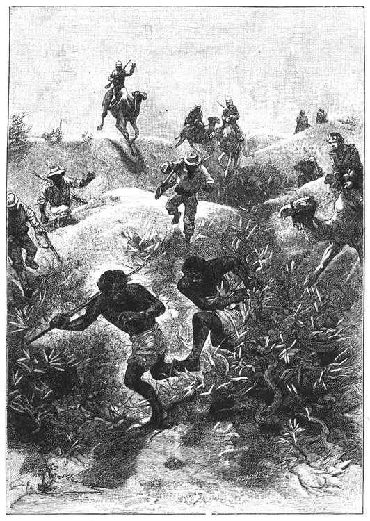Der Escorte gelang es aber, sie zu umzingeln.
Die unglückliche Frau sah, was im Innern ihres Gatten vorging, der aller Verbrechen fähig war, um in den Besitz des Vermögens der Mrs. Branican zu gelangen. Len Burker sagte sich in seinem Innern, daß durch die Begegnung Johns und Dollys seine ganze Zukunft vernichtet würde. Früher oder später müsse auch das Verhältniß Godfreys zu Mrs. Branican ans Tageslicht kommen, denn schließlich würde das Geheimniß seiner Fran entschlüpfen, und doch war er von Jane abhängig, da nur ihr das Vermögen nach dem Tode der Mrs. Branican zufallen konnte.
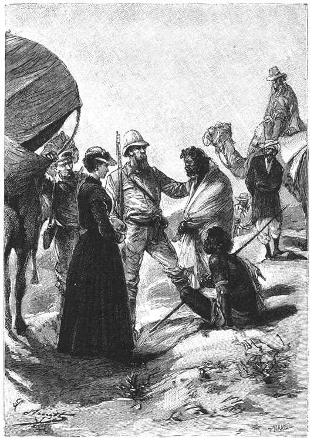Tom Marix fragte sie.
Dolly und Jane mußten also getrennt werden und John Branican vor der Ankunft der Karawane bei den Indas verschwinden.
Einem solchen gewissenlosen und entschlossenen Menschen wie Len Burker war die Verwirklichung eines derartigen Planes nicht unmöglich, besonders da ihm alle Umstände bald zu Hilfe kamen.
An diesem Tage gab Tom Marix um vier Uhr das Signal zum Aufbruche, und die Karawane setzte sich in ihrer gewöhnlichen Ordnung in Bewegung.
Von Dolly ging jetzt die Energie auf ihre Gefährten über. Man näherte sich dem Ziele ... Der Erfolg schien sicher zu sein ... Die Schwarzen der Escorte unterwarfen sich scheinbar gern allen Anordnungen und Tom Marix hätte auf ihre Mitwirkung bis an das Ende der Reise rechnen können, wenn sie nicht Len Burker fortwährend zu Verrath und Empörung aufgehetzt hätte.
Die Karawane war beinahe auf dem Wege des Obersten Warburton, aber die Hitze wurde immer größer, die Nächte waren zum Ersticken, und auf diesen ungeheuren, baumlosen Ebenen fand man keinen Schatten, als neben den Dünen, der bei dem hohen Stande der Sonne oft sehr gering war.
Diese Hitze war vielleicht nicht eine so ausnahmsweise große, sondern gehörte unter diesem Breitegrade zu den alltäglichen. Hierzu kam auch der Wassermangel, der jeden Tag stieg. Sie mußten in großen Entfernungen Cisternen suchen, wodurch bedeutende Umwege nöthig wurden und somit das Fortkommen sehr gehindert war. Meist bot sich Godfrey an, Wasser zu suchen, und auch Tom Marix war darin unermüdlich. Mrs. Branican sah sie immer mit der größten Unruhe fortreiten, aber sie konnten auf keine Gewitter hoffen, die unter diesem Breitegrade zu den größten Seltenheiten gehören. Am Himmel sah man kein Wölkchen, so daß nur der Boden Wasser geben konnte.
Als Godfrey und Tom Marix eine Cisterne entdeckten, lag sie gerade in der Richtung, welche die Karawane einhielt. Man eilte vorwärts, trieb die Thiere an und bot unter dem Stachel des Durstes Alles auf, so schnell wie möglich hinzukommen ... und was fand man? Eine schlammige Flüssigkeit, in der es von Ratten wimmelte. Die Schwarzen und Weißen der Escorte stürzten darauf los und tranken dieses ekelhafte Wasser, aber Dolly, Jane, Godfrey, Zach Fren und Len Burker hatten die Vorsicht und warteten, bis Tom Marix neben der Cisterne aus dem Sande ein etwas reineres Wasser grub. Dann füllte man die Fäßchen, deren Inhalt bis zu dem nächsten Brunnen reichen mußte.
So ging der Zug etwa acht Tage – vom 10. bis 17. März – weiter, ohne daß etwas Besonderes vorfiel, nur die Strapazen wurden immer größer und waren kaum mehr auszuhalten. Der Zustand der beiden Kranken besserte sich nicht, im Gegentheil, es war ein schlimmer Ausgang zu befürchten. Fünf Kameele waren gefallen, so daß man die größten Schwierigkeiten hatte, das Gepäck weiter zu befördern.
Der Führer der Escorte gerieth in die größte Unruhe und auch Mrs. Branican befürchtete das Aergste, obwohl sie es nicht zeigte. Sie war bald an der Spitze, bald am Ende des Zuges, und gab so ein Beispiel außerordentlichen Muthes, den, mit Vertrauen gepaart, nichts erschüttern konnte.
Zu welchen Opfern wäre sie nicht bereit gewesen, um diese unaufhörlichen Verzögerungen zu vermeiden, diesen unendlichen Weg abzukürzen! Eines Tages fragte sie Tom Marix, warum er nicht die gerade Richtung gegen den Oberlauf des Fitz-Roy einschlage, wo nach den Aussagen der beiden Wilden die Indas lagern sollten.
»Ich habe daran gedacht, erwiderte Tom Marix, doch die Wasserfrage hält mich immer zurück, Mrs. Branican. Wenn wir die Richtung gegen Joanna-Spring einhalten, können wir nicht verfehlen, auf einige Cisternen zu stoßen, die der Oberst Warburton signalisirt hat.
– Sind denn keine in der Richtung gegen Norden? fragte Dolly.
– Vielleicht, aber ich weiß es nicht sicher, sagte Tom Marix. Uebrigens ist es auch möglich, daß diese Brunnen jetzt austrocknen, während wir, wenn wir gegen Westen ziehen, sicher den Okaoverfluß erreichen, wo der Oberst Warburton Halt machte. Da dies ein fließendes Gewässer ist, so können wir dort unsere Vorräthe mit Leichtigkeit erneuern, bevor wir das Thal des Fitz-Roy erreichen.
– Gut, Tom Marix, erwiderte Mrs. Branican, da es so sein muß, halten wir also die Richtung gegen Joanna-Spring ein.«
So geschah es auch, doch die Strapazen auf diesem Wege übertrafen alle bisher erduldeten Qualen. Obgleich man schon im dritten Sommermonat war, hielt die Hitze doch immer noch an und im Schatten waren vierzig Grad, worunter man aber die Nacht zu verstehen hat. Vergebens hätte man am Himmel ein Wölkchen, auf der sandigen Oberfläche der Erde einen Baum suchen können. Der Weg wurde unter einer erstickenden Hitze fortgesetzt; die Cisternen enthielten kaum noch das hinreichende Wasser für die Karawane, so daß man täglich mit Mühe zehn Meilen zurücklegte. Die Pflege, welche Dolly, Jane und Harriette, die selbst ganz schwach waren, den Kranken angedeihen ließen, brachte diesen keine Erleichterung. Man hätte rasten, in irgend einem Dorfe halten und abwarten müssen, bis die Temperatur gesunken wäre ... dies Alles war nicht möglich. Am 17. März Nachmittags verloren sie wieder zwei Lastkameele, darunter gerade dasjenige, welches das Lösegeld für den Capitän John trug.
Tom Marix ließ das Gepäck auf zwei Reitthiere legen, wodurch wieder zwei Männer der Escorte absitzen mußten. Diese braven Leute murrten nicht und unterwarfen sich geduldig der neuen Vermehrung ihrer Leiden. Welch ein Unterschied zwischen ihnen und den Schwarzen, die fortwährend Ansprüche machten und über die Qualen klagten! War es nicht zu befürchten, daß diese Schwarzen eines Tages versucht sein könnten, die Karawane zu verlassen, vielleicht gar, nachdem sie dieselbe geplündert hatten?
Endlich konnte die Karawane neben einer Cisterne, deren Wasser sechs Fuß unter dem Sande war, rasten – es war am 19. März; obwohl man sich nur ungefähr fünf Meilen von Joanne-Spring entfernt befand, war es doch unmöglich, den Weg fortzusetzen. Die Menschen und Thiere waren zu sehr ermüdet.
Die Luft war schwer, man konnte kaum athmen. Der Himmel hatte jene eigenthümliche bleierne Farbe, wie man sie manchmal in den südlichen Gegenden vor einer elektrischen Entladung der Atmosphäre beobachten kann.
Tom Marix sah ängstlich gegen den Himmel, was Zach Fren nicht entging.
»Sie wittern etwas, sagte er zu Tom Marix, was Ihnen nicht paßt?
– Ja, Zach, erwiderte er, ich mache mich auf den Samum gefaßt, einen Wüstensturm, der furchtbar ist.
– Gut ... also Wind ... nun da wird es ja ohne Zweifel Wasser geben? bemerkte Zach Fren.
– Nein, nein, Zach, daraus wird eine noch schrecklichere Trockenheit entstehen; außerdem ist dieser Sturm in Centralaustralien zu Allem fähig.«
Diese Worte eines so erfahrenen Mannes mußten bei Mrs. Branican und ihren Gefährten die lebhafteste Unruhe erregen.
Es wurden nun alle möglichen Vorsichtsmaßregeln ergriffen. Es war neun Uhr Abends. Die Zelte wurden nicht in den Sanddünen aufgeschlagen, was auch in diesen erstickenden Nächten unnütz war. Jeder löschte seinen Durst an dem Wasser der Fäßchen und nahm dann seine Portion Speise entgegen, die Tom Marix vertheilte. Man dachte kaum daran, den Hunger zu stillen, nur frische Luft ersehnten Alle, wenn diese auch weniger dem Magen, als den Athmungsorganen zu Statten kam. Einige Stunden Schlaf hätte diesen Leuten wohler gethan, als einige Bissen Nahrung; aber es war unmöglich, in einer solch erstickenden Atmosphäre zu schlafen. Bis Mitternacht ereignete sich nichts Besonderes. Tom Marix, Zach Fren und Godfrey wachten und erhoben sich alle Augenblicke, um den Horizont im Norden zu beobachten. Während sich zuerst der prachtvollste Sternenhimmel über sie wölbte, wurde es gegen drei Uhr plötzlich dunkel.
»Auf! ... Auf! ... rief Tom Marix.
– Was giebt es? fragte Mrs. Branican, die rasch aufgestanden war. Neben ihr suchten Jane, Harriette, Godfrey und Zach Freu sich in der Dunkelheit auszukennen. Die Thiere, die auf dem Boden ausgestreckt lagen, erhoben den Kopf und stießen Rufe des Schreckens aus.
– Was giebt es denn? fragte Mrs. Branican von neuem.
– Der Samum kommt!« erwiderte Tom Marix.
Das waren die letzten Worte, welche gehört werden konnten. Heulend kam der Sturm dahergebraust, so daß das Ohr keinen anderen Ton vernehmen konnte, während die Augen vergebens die Finsterniß zu durchdringen suchten.
Ja, es war der Samum, wie es Tom Marix gerufen hatte, einer jener plötzlichen Stürme, welche die Wüsten Australiens auf weite Strecken durchbrausen. Eine ungeheure Wolke erhob sich im Süden und senkte sich auf die Ebene herab – eine Wolke, die nicht nur aus Sand, sondern auch aus Asche bestand, welche dem heißen Boden entrissen wurde. Ein undurchdringlicher, feiner Staub sauste dahin, der blendete und in alle Poren des Körpers drang. Wenn die Zelte aufgeschlagen gewesen wären, so würde keine Spur von ihnen zurückgeblieben sein.
Alle fühlten den furchtbaren Luftstrom über sich hinweggehen. Godfrey hielt Dolly mit beiden Händen fest, denn er wollte sich nicht von ihr trennen, falls die Karawane von dem furchtbaren Sturme nach Norden geschleudert werden würde.
Das geschah auch wirklich, und ein Widerstand wäre ganz unmöglich gewesen.
Während einer Stunde wüthete der Sturm, wodurch der Boden eine ganz andere Gestalt annahm, denn die Dünen verschwanden und eine endlose Fläche breitete sich aus. Mrs. Branican und ihre Gefährten wurden vier bis fünf Meilen weit getrieben, standen auf und wurden wieder niedergeworfen und wie Strohhalme weitergeschleudert. Sie sahen und hörten einander nicht, und hofften kaum, sich wiederzufinden. Auf solche Weise kamen sie in die Nähe von Joanna-Spring zu den Ufern des Okaover im Augenblicke, als die ersten Strahlen der Sonne die weite Ebene erleuchteten.
Waren Alle da, als man die Namen rief? ... Alle? ... Nein!
Mrs. Branican, die Dienerin Harriette, Godfrey, Jos Meritt, der chinesische Diener, Zach Fren, Tom Marix, die Weißen waren da, ebenso vier Reitkameele. Aber die Schwarzen waren verschwunden! Und mit ihnen zwanzig Kameele – die, welche die Lebensmittel und das Lösegeld für den Capitän John trugen! ...
Als Dolly Jane rief, erhielt sie keine Antwort.
Len und Jane Burker waren nicht da! ...
Das Verschwinden der Schwarzen, der Reit- und Lastthiere brachte Mrs. Branican und diejenigen, welche ihr treu geblieben waren, in eine verzweifelte Lage.
»Verrath!« rief zuerst Zach Fren. »Verrath!« wiederholte Godfrey. Es war zu augenscheinlich, daß diesem Verschwinden Verrath zu Grunde lag, was auch die Meinung des Tom Marix war, der ja wußte, welchen verderblichen Einfluß Len Burker auf die Escorte von Eingebornen ausübte.
Dolly bezweifelte dies noch immer, denn sie wollte an eine solche Niedertracht nicht glauben.
»Konnte Len Burker nicht ebenso von dem Sturme weitergeschleudert werden wie wir?
– Ja, gerade mit den Schwarzen, erwiderte Zach Fren, und mit ihnen auch die Kameele, die unsre Lebensmittel trugen?
– Meine arme Jane, murmelte Dolly, sie wurde von mir getrennt, ohne daß ich es bemerkte.
– Len Burker wollte sie nicht bei Ihnen lassen, Mrs. Branican, versetzte Zach Fren, der Elende! ...
– Elende? ... Gut! ... O! ... Sehr gut! sagte Jos Meritt. Wenn das nicht Verrath ist, so will ich nie den Hut finden ... dessen ...«
Dann wendete er sich zu dem Chinesen:
»Was denkst Du davon, Gîn-Ghi?
– Ay-ya, Herr Jos, ich denke, daß ich tausendmal besser gethan hätte, ein so unfreundliches Land nicht zu betreten.
– Vielleicht!« erwiderte Jos Meritt.
Der Verrath wurde von allen Seiten mit solcher Gewißheit ausgesprochen, daß Mrs. Branican sich zu folgenden Worten genöthigt sah:
»Aber warum haben sie mich getäuscht, was habe ich Len Burker gethan? ... Habe ich nicht Alles vergessen ... Habe ich sie nicht wie meine Verwandten aufgenommen, seine unglückliche Frau und ihn? ... und er verläßt uns, raubt uns alle Hilfsmittel und stiehlt mir das Lösegeld für John! ... Aber warum?«
Niemand kannte das Geheimniß Len Burker's und Niemand hätte ihr darauf eine Antwort geben können. Nur Jane wäre im Stande gewesen, die schändlichen Pläne ihres Mannes zu enthüllen, und diese war nicht da.
Indes war es nur allzu richtig, daß Len Burker soeben einen Plan zur Ausführung gebracht hatte, den er lange mit sich herumtrug und der die erhoffte Wirkung bringen mußte. Unter dem Versprechen, die Schwarzen gut zu zahlen, gewann er sie leicht für seinen Anschlag. Zwei der Eingebornen schleppten während des Sturmes Jane davon, ohne daß ihr Hilfsgeschrei gehört werden konnte, und die anderen trieben die um das Lager zerstreuten Kameele gegen Norden.
Niemand hatte sie in der tiefen Dunkelheit bemerkt, die durch den Wirbelsand noch verdichtet wurde, und bevor die Sonne aufging, waren Len Burker und seine Gefährten schon einige Meilen östlich von Joanna-Spring.
Da Jane jetzt von Dolly getrennt war, hatte ihr Gatte nicht mehr zu fürchten, daß vielleicht doch zuletzt das Geheimniß Dolly enthüllt werden würde. Uebrigens konnte er annehmen, daß Mrs. Branican und ihre Gefährten, entblößt von Lebensmitteln, in der ungeheuren Wüste zu Grunde gehen würden.
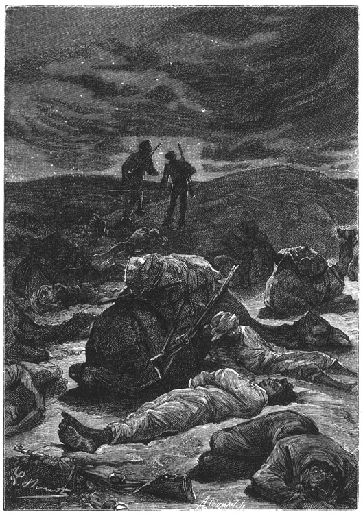... und erhoben sich alle Augenblicke, um den Horizont zu betrachten.
In der That war die Karawane jetzt immer noch dreihundert Meilen von Fitz-Roy entfernt.
Wie konnte Tom Marix auf einem so langen Wege für die Bedürfnisse von Menschen und Thieren sorgen?
Der Okaover ist einer der wichtigsten Nebenflüsse des Grey, der in den Indischen Ocean mündet. An den Ufern desselben, den die glühende Sonne nie austrocknet, fand Tom Marix schattige Plätze und jene angenehmen Stellen wieder, die der Oberst Warburton nicht genug loben konnte.

Alle fühlten den furchtbaren Luftstrom über sich hinweggehen.
Welch herrlicher Anblick, nach monatelangem Zuge durch die Wüste wieder fließende Gewässer und eine grüne Natur zu sehen! Doch wenn Warburton an den Ufern dieses Flusses fast bestimmt wußte, daß er sein Ziel erreichen werde, da er nur stromabwärts bis an die Küste zu ziehen brauchte, so hatte Mrs. Branican noch den Weg durch die öden Gegenden vor sich, die den Okaover vom Fitz-Roy trennen.
Die Karawane bestand nur noch aus zweiundzwanzig Personen gegen dreiundvierzig, die sie bei dem Aufbruche von Alice-Spring zählte: Dolly und die Dienerin Harriette, Zach Fren, Tom Marix, Godfrey, Jos Meritt, Gîn-Ghi und fünfzehn Weiße der Escorte, von denen zwei ernstlich krank waren. Als Reitthiere hatten sie nur vier Kameele, da die anderen von Len Burker geraubt worden waren, darunter auch das Männchen, welches die anderen leitete und auf dessen Rücken sich die Kibitka befand. Auch das Thier Jos Meritt's war verschwunden, so daß er wie sein Diener zu Fuß gehen mußte. Was die Lebensmittel anbelangt, so waren nur noch wenige Büchsen Conserven vorhanden, da ein Kameel eine Kiste derselben hatte fallen lassen. Kein Mehl, kein Kaffee, kein Thee, kein Zucker, kein Salz, keine alkoholischen Getränke, keine Medicamente! Wie hätte Dolly die beiden Fieberkranken pflegen können! Sie standen inmitten dieses nackten Landes aller Mittel entblößt da.
Beim ersten Morgengrauen versammelte Mrs. Branican, die nie den Muth verlor, ihre Getreuen um sich und sprach ihnen in begeisterten Worten neuen Muth zu.
Sie setzten ihren Marsch fort, aber unter solchen Umständen, daß der Vertrauensvollste an jedem Erfolge verzweifelt hätte. Von den vier Kameelen mußten zwei den Kranken überlassen werden, die man doch nicht in Joanna-Spring, einer jener unbewohnten Stationen, welche Warburton so oft auf seinem Marsche antraf, dem sicheren Tode preisgeben konnte. Würden diese braven Leute die Kraft haben, bis an die Ufer des Fitz-Roy auszuhalten, von wo es vielleicht möglich wäre, sie an einen Punkt der Küste zu befördern? ... Es war zweifelhaft, und es preßte das Herz Mrs. Branican's zusammen, wenn sie dachte, daß die Katastrophe des »Franklin« vielleicht noch zwei neue Opfer fordern könnte ...
Und doch gab Dolly ihren Plan nicht auf! Nein! Sie würde noch weiter suchen! Nichts sollte sie in der Erfüllung ihrer Pflicht aufhalten – auch wenn sie allein bliebe!
Als die Karawane das rechte Ufer des Okaover verließ, dessen Bett an einer Furt ungefähr eine Meile stromaufwärts von Joanna-Spring übersetzt wurde, schlug sie eine nord-nordöstliche Richtung ein, da Tom Marix auf diese Weise hoffte, den Fitz-Roy an einer jener zahlreichen Krümmungen zu erreichen, welche dieser Fluß bildet, bevor er sich dem Königsgolfe zuwendet.
Die Hitze war erträglicher. Es bedurfte der lebhaftesten Vorstellungen, daß Dolly bewogen wurde, eines der Kameele zu besteigen. Godfrey und Zach Fren schritten rüstig weiter, ebenso Jos Meritt mit seinen langen Beinen. Als Mrs. Branican ihm ihr Thier anbot, sagte er:
»Gut! ... O! ... Sehr gut! Ein Engländer ist ein Engländer, Mistreß, aber ein Chinese ist nur ein Chinese, und ich sehe durchaus nichts Ungehöriges darin, wenn Sie diesen Antrag Gîn-Ghi machen ... Ich muß ihn aber abschlagen!«
Auch Gîn-Ghi ging zu Fuß, doch er dachte immer mit Wehmuth an die fernen Reize der Blumenstadt Sou-Tchëu, der angebeteten Stadt der »Himmlischen«.
Das vierte Kameel wurde bald von Tom Marix, bald von Godfrey benutzt, denn sie mußten nun recognosciren. Der Wasservorrath, den man vom Okaover mitnahm, würde bald verbraucht sein, und dann drohten von neuem furchtbare Qualen.
Von dem Flusse aus schlugen sie die directe Richtung gegen Norden ein, auf der nur wenig Sandhügel zu erblicken waren. Da das Gras zeitweilig dichtere Gruppen bildete und auch hin und wieder kleine Sträucher zu sehen waren, so gewährte diese Gegend keinen solchen eintönigen Anblick. Vielleicht konnten sie sogar auf Wild stoßen, denn Tom Marix, Godfrey und Zach Fren, die nie ihre Waffen ablegten, waren glücklicherweise noch im Besitze ihrer Gewehre und Waffen, von denen sie tüchtig Gebrauch machen wollten, wenn sich die Gelegenheit dazu bot. Freilich mußte die Munition sehr geschont werden, da sie nur noch wenig davon hatten.
So ging es dann einige Tage weiter. Die Flußbetten, die dieses Territorium durchschnitten, enthielten nur Kieselsteine und trockenes Gras, und der Sand zeigte nicht die geringste Feuchtigkeit. Sie mußten daher auf die Entdeckung von Cisternen ausgehen, und zwar aller vierundzwanzig Stunden eine, weil sie nicht mehr Fäßchen zur Verfügung hatten.
Godfrey ging nach links und nach rechts, wenn er glaubte, Wasser zu finden.
»Mein Kind, sagte Mrs. Branican zu ihm ... sei nicht unvorsichtig! ... Setze Dich keiner Gefahr aus!
– Mich keiner Gefahr aussetzen, wenn es sich um Sie und um das Heil des Capitän John handelt!«
Dank seiner Hingebung und Dank einem gewissen Instinct, der ihn leitete, wurden einige Cisternen aufgefunden, indem sie sich manchmal mehrere Meilen nach Süden oder Norden wandten.
Wenn auch der Durst sie somit nicht mehr so quälte, so erreichten doch ihre Leiden den höchsten Punkt: Es fehlte ihnen an Nahrung, denn die Conserven waren bis auf wenige aufgezehrt, Thee, Kaffee, Tabak war nicht mehr da. Nach zweistündigem Marsche stürzten die Kräftigsten erschöpft zusammen.
Die Thiere fanden in dieser öden Gegend weder einen Halm noch ein genießbares Blatt. Keine Spur von jenen Zwergakazien, deren nahrhaftes Harz von den Eingebornen während einer Hungersnoth gesucht wird! Mit vorgestrecktem Kopfe schleppten sich die Kameele weiter, fielen auf die Knie und konnten nur mit Mühe wieder zum Aufstehen gebracht werden.
Am 25. März gelang es Tom Marix, Godfrey und Zach Fren, sich ein wenig frische Nahrung zu verschaffen, indem einige Schaaren von Tauben daher geflogen kamen. Trotz ihrer Schnelligkeit erlegten sie einige, und wenn diese Vögel nicht gut gewesen wären – aber sie waren es wirklich – so hätten diese Halbverhungerten sie doch ungemein schmackhaft gefunden. Man röstete sie an einem Feuer aus trockenen Wurzeln, und Tom Marix konnte für zwei Tage Nahrung aufbewahren.
Aber die Thiere hatten nichts zu fressen. Am 26. März fiel eines der Kameele, welches dem Transporte der Kranken diente, zu Boden und mußte zurückgelassen werden, denn es konnte nicht mehr aufstehen. Tom Marix schoß ihm eine Kugel in den Kopf, und da er das Fleisch, das sie durch einige Tage ernähren konnte, nicht zurücklassen wollte, so zerlegte er das magere Thier nach australischem Brauche. Er wußte ganz genau, daß alle Theile des Kameels gegessen werden können. Aus den Knochen und einem Theile der Haut, welche er in dem ihnen einzig verbliebenen Topfe auskochte, erhielt er eine Suppe, die den Hungerigen ausgezeichnet schmeckte. Das Gehirn, die Zunge und die Lenden, gehörig zubereitet, lieferten eine ganz gute Nahrung; ebenso wurde das Fleisch in ganz kleine Stücke zerschnitten, in der Sonne getrocknet und aufgehoben; die Füße aber sind am besten.
Es war nur zu bedauern, daß sie kein Salz hatten, denn das eingesalzene Fleisch hält sich viel länger. Unter solchen Umständen machten sie täglich einige Meilen. Unglücklicherweise besserte sich aus Mangel an Heilmitteln, vielleicht auch an Pflege, der Zustand der Kranken nicht. Keiner sollte vielleicht das Ziel erreichen, welches Mrs. Branican unter solchen Qualen zu erreichen strebte, diesen Fluß Fitz-Roy, wo ihr Elend sich doch in etwas mildern mußte!
Am 29. März fielen die zwei Kranken der ungeheuren Anstrengung zum Opfer. Beide waren aus Adelaide, und Beide erreichte nun in dieser Wüste der Tod. Die Armen! Sie waren die ersten, welche diesem Marsche unterlagen, worüber sich ihre Gefährten nicht wenig entsetzten. Stand ihnen nicht dasselbe Schicksal bevor, nachdem sie durch den Verrath Len Burker's in diesen öden Gegenden in Stich gelassen wurden, wo nicht einmal die Thiere Nahrung fanden?
Was konnte Zach Fren antworten, als Tom Marix zu ihm sagte:
»Zwei Menschen sind todt, um einen zu retten, ohne die zu rechnen, welche noch zugrunde gehen werden.«
Mrs. Branican gab sich ganz ihrem Schmerze hin, den jeder theilte; sie betete für diese zwei Opfer und steckte auf ihr Grab ein kleines Kreuz, das die glühenden Sonnenstrahlen bald in Staub verwandeln würden.
Die Karawane setzte ihren Marsch fort.
Die drei Kameele, welche übrig blieben, bestiegen die Müdesten nacheinander, um nicht ihre Gefährten zurückzulassen; Mrs. Branican weigerte sich mit Entschiedenheit, eines derselben zu besteigen. Während der Raststunden suchten Godfrey und Tom Marix mit Hilfe dieser Thiere Wasser, denn man begegnete nicht einem Schwarzen, der sie hätte führen können. Sie entnahmen daraus, daß die Stämme sich gegen Nordosten Tasmaniens zurückgezogen hatten. Wenn sich das so verhielt, so mußten sie den Indas bis in das Thal des Fitz-Roy folgen, was ihren Weg um einige Meilen verlängert haben würde.
Im Anfange des Monats April bemerkte Tom Marix, daß die Conserven ausgingen, weshalb eines der drei Kameele geopfert werden mußte. Auf solche Weise hatten sie wieder für einige Tage Nahrung, während der sie doch die Ufer des Fitz-Roy erreichen mußten, von dem sie nur noch fünfzehn Tagesmärsche entfernt waren.
Da sie keine andere Rettung vor dem Hungertode kannten, so mußten sie zu diesem Mittel greifen. Er wurde nun das Thier ausgesucht, das am wenigsten im Stande schien, seinen Dienst zu verrichten. Eine Kugel machte seinem Leben ein Ende. Dann wurde es zerlegt und das Fleisch an der Sonne getrocknet: die anderen Theile, wie das Herz und die Leber, wurden sorgfältig aufbewahrt.
Zeitweilig gelang es Godfrey, mehrere Tauben zu schießen – eine geringe Nahrung für zwanzig Personen! Tom Marix bemerkte, daß die niedrigen Akazien hin und wieder zu erscheinen begannen, deren Körner, am Feuer geröstet, ihnen ebenfalls als Nahrung dienen konnten.
Ja, es war die höchste Zeit, daß sie das Thal des Fitz-Roy erreichten und jene Hilfsquellen fanden, die sie vergebens von diesem trostlosen Lande verlangten. Noch einige Tage, und die meisten dieser armen Leute hätten nicht mehr die Kraft gehabt, dahin zu gelangen.
Am 5. April hatten sie kein Fleisch mehr und mußten sich von den Akazienkörnern ernähren. Tom Marix zögerte, die beiden letzten Kameele zu opfern, da er an den Weg dachte, der ihnen noch übrig blieb. Und doch mußte er sich dazu entschließen, denn die Armen hatten seit fünfzehn Stunden nichts mehr gegessen.
Sie hielten eben still, als einer der Männer herbeilief und sagte:
»Tom Marix ... Tom Marix ... die zwei Kameele sind gestürzt.
– Versucht sie aufzurichten!
– Es ist unmöglich.
– So tödte man sie sofort.
– Sie tödten? ... erwiderte der Mann, aber sie liegen ja im Sterben, wenn sie nicht schon todt sind!
– Todt!« rief Tom Marix aus.
Er rang verzweifelt die Hände, denn wenn diese Thiere einmal todt sind, so ist ihr Fleisch ungenießbar.
Tom Marix, gefolgt von Mrs. Branican, Zach Fren, Godfrey und Jos Meritt, eilte zu der Stelle, wo die beiden Thiere zusammengestürzt waren.
Sie lagen auf dem Boden, zuckten mit den Gliedern, athmeten schwer; der Schaum kam ihnen zum Munde heraus. Sie starben – und nicht einmal eines natürlichen Todes.
»Was ist ihnen denn zugestoßen? fragte Dolly. Das ist doch keine Ermüdung ... keine Erschöpfung?
– Nein, erwiderte Tom Marix, ich fürchte, sie haben irgend ein giftiges Gras gefressen.
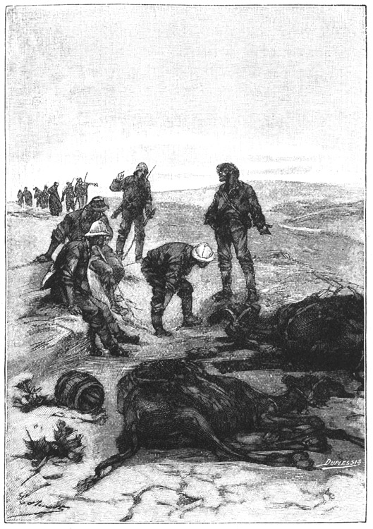»Todt!« rief Tom Marix aus.
– Gut! ... O! ... Sehr gut! Ich weiß, was es ist! erwiderte Jos Meritt. Ich habe das schon in den östlichen Provinzen gesehen ... in Queensland! Diese Kameele sind vergiftet worden!
– Vergiftet? wiederholte Dolly.
– Ja, sagte Tom Marix, das ist Gift!
– Nun, hub Jos Meritt wieder an, da wir jetzt keine anderen Nahrungsquellen haben, so bleibt nichts anderes übrig ... als die Cannibalen nachzuahmen ... um nicht Hungers zu sterben ... Was wollen Sie? ... Jedes Land hat seine Gebräuche ... und das beste ist, man fügt sich in dieselben.«
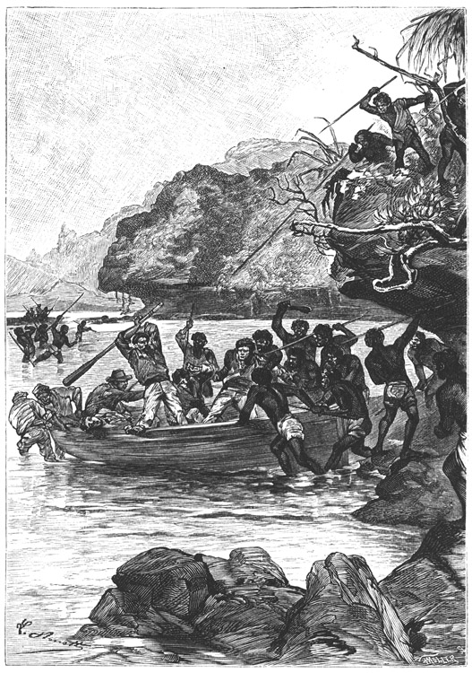Der Capitän John wurde von den Eingebornen angegriffen.
Der Gentleman sprach diese Worte so ironisch, daß er mit seinen eingefallenen Augen und seiner mageren Gestalt fürchterlich aussah.
So starben denn die Kameele an einer Vergiftung, die wohl von einer Art giftigen Strauches herrührte, welcher in diesen Gegenden des Nordwestens nicht selten vorkommt. Es ist dies die » Moroides laportea«, eine Art Himbeere, deren Blätter kleine Stacheln haben. Schon ihre Berührung ruft heftige Schmerzen hervor; die Frucht aber ist tödtlich, wenn man nicht als Gegengift die » Colocasia macrorhiza« nimmt, eine Pflanze, die gewöhnlich in der Nähe derselben wächst.
Der Instinct, der sonst die Thiere von der Berührung dieser giftigen Pflanzen abhält, verschwand diesmal unter dem verzehrenden Hunger, der sie quälte. Wie die zwei folgenden Tage vergehen würden, wußte weder Mrs. Branican, noch einer ihrer Gefährten. Sie mußten die beiden Cadaver verlassen, denn sie waren nach einer Stunde in vollständiger Verwesung, so schnell wirkt dieses Pflanzengift. Dann schleppte sich die Karawane weiter in der Richtung gegen den Fitz-Roy zu ... Würden sie ihn Alle erreichen? ... Nein, denn Einige verlangten schon jetzt, daß man ihnen lieber den Gnadenschuß geben solle, um einem fürchterlichen, langwierigen Todeskampfe zu entgehen ...
Mrs. Branican ging von Einem zum Andern ... Sie versuchte sie zu ermuthigen ... sie flehte sie an, noch eine letzte Anstrengung zu machen ... Das Ziel ist nicht weit ... Nur noch einige Meilen ... Dort unten ist Rettung ... Aber was konnte sie von diesen Unglücklichen erreichen?
Am 8. April Abends hatte Niemand mehr die Kraft, das Lager aufzuschlagen. Die Unglücklichen stürzten in das Gestrüpp und aßen die Blätter ab ... Sie konnten nicht mehr sprechen ... Sie konnten nicht mehr weiter gehen ... Alle stürzten hier zusammen.
Nur Mrs. Branican leistete noch Widerstand. Godfrey kniete neben ihr und sah sie an ... Er nannte sie Mutter! ... wie ein Kind, das seine Mutter flehentlich bittet, es nicht sterben zu lassen ...
Dolly steht allein aufrecht und blickt auf gegen den Horizont.
»John! ... John!« ruft sie voll Verzweiflung aus.
Als ob John ihr hätte Rettung bringen können!
Der Stamm der Indas, der aus einigen Hundert Eingebornen bestand, hielt sich um diese Zeit an den Ufern des Fitz-Roy auf, ungefähr hundertvierzig Meilen von seiner Mündung entfernt. Diese Schwarzen kamen aus den Gegenden Tasmaniens, welche von dem Oberlaufe des Flusses bewässert werden. Seit einigen Tagen waren sie zufällig auf ihren Nomadenzügen ungefähr bis auf fünfundzwanzig Meilen in die Nähe der Stelle gekommen, wo die Karawane ihre letzte Rast hielt, nachdem sie übermenschliche Qualen erduldet hatte.
Capitän John und Harry Felton hatten neun volle Jahre bei den Indas gelebt. Mit Zuhilfenahme der folgenden Ereignisse wurde es möglich, ihre Lebensgeschichte in dieser langen Zeit zusammenzustellen, welche der Bericht Harry Felton's auf dem Sterbebette ergänzte.
In den Jahren zwischen 1867 und 1881 – der Leser hat es wohl nicht vergessen – fand die Bemannung des »Franklin« auf der Insel Browse eine Zufluchtsstätte. Zwei der Matrosen waren während des Sturmes zu Grunde gegangen, und die zwölf Schiffbrüchigen lebten nun sechs Jahre auf dieser Insel, ohne jedes Mittel, in die Heimat zurückzukehren, bis ein Boot an den Strand geworfen wurde.
Der Capitän John, der dieses Boot zur Rettung Aller verwenden wollte, ließ es in einen solchen Stand setzen, um auf demselben Australien zu erreichen. Aber es faßte nur sieben Matrosen; daher schifften sich John, Harry Felton und fünf andere Gefährten ein und ließen die übrigen zurück, welche warten sollten, bis sie ein Schiff holen werde. Wir wissen, wie diese Unglücklichen zu Grunde gingen und unter welchen Umständen der Capitän Ellis ihre Ueberreste fand, als er im Jahre 1883 mit dem »Dolly-Hope« die zweite Fahrt unternahm.
Nach einer gefährlichen Fahrt durch diese klippenreiche See landete das Boot auf der Höhe des Cap Lévêque und gelangte in den Golf, in den der Fitz-Roy mündet. Aber das Unglück wollte, daß der Capitän von den Eingebornen angegriffen wurde, wobei vier Matrosen im Kampfe fielen.
Diese Eingebornen, welche zu dem Stamme der Indas gehörten, schleppten John, Harry Felton und den letzten Matrosen in das Innere des Landes. Der Matrose, welcher verwundet worden war, sollte nicht aufkommen, und John Branican mit Harry Felton waren die einzigen Ueberlebenden der Katastrophe des »Franklin«.
Nun begann für sie ein Leben, das in den ersten Tagen ernstlich bedroht war. Man weiß, daß diese Indas, wie alle herumziehenden Stämme des südlichen Australien, wild und blutdürstig sind. Die Gefangenen, welche sie in ihren fortwährenden Kriegen mit den anderen Stämmen machen, werden getödtet und gegessen, da bei keinem Stamm der Cannibalismus noch so eingewurzelt ist wie bei diesem.
Warum wurden nun John und Harry Felton geschont?
Es ist bekannt, daß seit undenklichen Zeiten ein steter Krieg zwischen den Stämmen des Innern und der Küste wüthet. Sie greifen gegenseitig die Dörfer an, zerstören sie, führen die Gefangenen fort und feiern den Sieg durch eine große Menschenfresserei.
Diese Hinschlachtungen werden die unvermeidliche Vernichtung der australischen Rasse herbeiführen. Dazu kommt noch die unerhörte Grausamkeit der Weißen gegen die Schwarzen, von der die Worte eines australischen Colonisten am besten zeugen: »Alle Männer, denen ich auf meinen Weideplätzen begegne, erschieße ich, weil sie das Vieh tödten; alle Frauen, weil sie solche Schwarze in die Welt setzen, alle Kinder, weil sie Männer werden.«
Man kann daher den Haß der Schwarzen gegen ihre Henker begreifen, und es ist selten, daß ein Weißer, der ihnen in die Hände fällt, geschont wird. Warum wurden nun die Schiffbrüchigen des »Franklin« geschont?
Sehr wahrscheinlich würde dem Matrosen, der bald nach der Gefangennahme gestorben war, dasselbe Schicksal zutheil geworden sein. Aber der Häuptling des Stammes, Namens Willy, der mit den Colonisten an den Küsten in Verbindung stand, erkannte sofort in ihnen zwei Officiere, von denen er einen doppelten Vortheil haben konnte. Im Kriege mit den feindlichen Stämmen würden sie ihm durch ihre Erfahrungen zum Siege verhelfen, und in geschäftlicher Beziehung würde er für ihre Befreiung ein hohes Lösegeld beanspruchen und auch erhalten. Sie blieben also am Leben, mußten aber mit diesen Nomaden überall herumziehen, was ihnen um so peinlicher war, als sie Tag und Nacht scharf bewacht wurden. Sie konnten sich keinen Schritt vom Lager entfernen, so daß ihre Fluchtversuche stets mißlangen.
Zeitweilig verhalfen sie in den häufigen feindlichen Zusammenstößen mit den anderen Stämmen durch ihre Rathschläge Willy stets zum Siege, wodurch dieser Stamm einer der mächtigsten wurde, welche die verschiedenen Länder von Westaustralien durchziehen.
Die Völkerschaften des Nordwestens gehören sicher den Mischrassen der Australier und der Eingebornen von Papuasien an. Die Indas tragen, wie ihre Mitbrüder, langes, gekraustes Haar; ihre Gesichtsfarbe ist nicht so dunkel wie die der Eingebornen der südlichen Provinzen und ihre Größe hält sich zwischen hundertzwanzig bis hundertdreißig Centimeter. Die Männer sind kräftiger gebaut als die Frauen. Die Stirn ist ein wenig zurücktretend, die Brauen sind buschig, die Augen leuchten feurig, das Haar ist braun, der Schädel groß.
Man nennt sie Schwarze, obwohl sie nicht jene schwarze Körperfarbe haben wie die Nubier: man könnte sie »Chocoladebraun« nennen, wenn diese Bezeichnung, welche ihre eigenthümliche Farbe genau trifft, erlaubt wäre.
Der Geruchssinn der australischen Neger ist außerordentlich entwickelt, so daß sie es darin mit den besten Jagdhunden aufnehmen können. Sie erkennen sofort die Spuren eines menschlichen Wesens oder eines Thieres, indem sie sich bücken und die Gräser oder das Strauchwerk beriechen. Auch ihr Gehörsinn ist außerordentlich entwickelt, so daß sie, wie es scheint, sogar die Ameisen in ihrem Baue arbeiten hören. Ihre Geschicklichkeit im Klettern ist bewunderungswerth, denn es ist kein Gummibaum zu hoch, dessen Gipfel sie nicht erreichen würden, indem sie sich dabei eines biegsamen Rotangs bedienen, den sie »Kâmin« nennen.
Die Frau altert schnell und erreicht kaum das vierzigste Lebensjahr; die Männer werden in einem Theile von Queensland gewöhnlich fünfzig Jahre alt. Die unglücklichen Weiber haben die härtesten Arbeiten der Hauswirthschaft zu verrichten. Sie sind die Sklaven eines äußerst grausamen Herrn und müssen Bündel, Werkzeuge, Waffen tragen, eßbare Pflanzen, Eidechsen, Würmer, Schlangen suchen, welche dem Stamme zur Nahrung dienen. Aber sie pflegen in hohem Grade ihre Kinder, um die sich der Vater gar nicht kümmert, denn ein Kind fällt nur der Mutter zu. Welch grausame Sitte! Wenn gewisse Stämme, bei denen der Cannibalismus noch ganz in Blüthe steht, in Noth gerathen, so essen sie ihre kleinen Kinder!
Diese Neger Australiens, die nicht würdig sind, als Menschen angesehen zu werden, concentriren ihr Leben nur in dem einzigen Worte: »Ammeri! ... Ammeri!« das fortwährend in ihrer Sprache vorkommt und Hunger bedeutet. Ihre häufigste Handbewegung besteht darin, daß sie sich an den Bauch schlagen, denn ihr Bauch ist nur allzu oft leer. In diesen wild- und culturlosen Ländern ißt man bei Tag und Nacht, wenn sich gerade die Gelegenheit bietet. Wovon können sich denn diese Eingebornen ernähren, diese unglücklichsten Menschen, die je die Natur auf die Oberfläche der Erde verpflanzt hat? Sie haben eine Art grobes Brot, das sie aus Getreide ohne Hefe nicht im Ofen, sondern unter glühender Asche backen; dann manchmal Honig, den sie in den Gipfeln der Bäume finden, wo die Bienen ihre Stöcke aufschlagen; Eier, welche eine Hühnerart in den Sand legt und von der Sonne ausbrüten läßt; jene Tauben, die ihre Nester an der äußersten Spitze der Aeste hoher Bäume bauen, dann noch die Larven gewisser Insecten, die sie hinter der Rinde der Bäume oder aus der Mitte verfaulten Holzes graben. Das ist Alles.
Aus diesem steten Kampfe um das tägliche Brot erklärt sich auch ihr Cannibalismus mit all seinen Schrecken, der nicht ein Zeichen natürlicher Wildheit, sondern die Folge einer Nothwendigkeit ist, wozu die Natur den Australier treibt, denn er müßte sonst verhungern. Wird dieser Cannibalismus daher eines Tages schwinden?
Die Stämme am Unterlaufe des Murray und in den nördlichen Gebieten haben die Gewohnheit, ihre eigenen Kinder zu verzehren. Furchtbar! Wenn man nichts mehr zu essen hat, so verzehrt die Mutter ihr Kind, dem sie das Leben gegeben hat, und die Reisenden haben die Unglücklichen von dieser Grausamkeit wie von etwas ganz Natürlichem sprechen hören!
Aber nicht der Hunger allein treibt die Australier zum Cannibalismus, sondern auch ein besonderer Geschmack für Menschenfleisch, das sie »Talgoro« nennen. Dank ihren fortwährenden Kriegen, die nur zu diesem Zwecke unternommen werden, verschaffen sie sich »Talgoro« und essen es nicht nur frisch, sondern heben es sich auch auf.
Dr. Carl Lumholtz sagt bei der Beschreibung seiner Reise durch die nordöstlichen Provinzen, daß die Schwarzen seiner Escorte stets diese Ernährung im Auge hatten, denn »Menschenfleisch geht dem Australier über Alles«. Und doch verschmähen sie das Fleisch der Weißen, weil es einen unangenehmen, salzigen Nachgeschmack haben soll.
Die Australier haben noch einen Grund, sich gegenseitig aufzufressen, indem sie ungemein grausam sind. Was ihre Religion anbelangt, so geben sie die Gegenwart eines höheren und bösen Wesens zu, dessen Stimme Kving'gan' sie fürchten; es eilt die Länder entlang und wohnt in den Klüften der hohen Gebirge, obwohl diese Stimme nur der melancholische Gesang eines reizenden Vogels ist, eines der sonderbarsten der Ornithologie Australiens. Aber diese Wilden beten nie, wie wir aus den Reiseberichten hören, und nirgends kann bei ihnen die Spur eines Cultus gefunden werden.
Aber sie sind sehr abergläubisch, und da sie der Meinung sind, daß ihre Feinde sie durch Zauberei vernichten, so trachten sie dieselben zu tödten, wodurch diese dem Cannibalismus ergebenen Gegenden allmählich entvölkert werden.
Wir müssen noch erwähnen, daß die Australier Achtung vor den Todten haben. Sie bringen dieselben nicht mit der Erde in Berührung, sondern umgeben den Leichnam mit Blüthen und Rinde, legen ihn dann in ein wenig tiefes Grab, mit den Füßen gegen Sonnenaufgang; doch machen sie das Grab nicht zu, wie dies auch bei anderen Stämmen Sitte ist. Das Grab eines Häuptlings wird mit einer Hütte bedeckt, deren Eingang gegen Osten ist. Nicht unerwähnt soll bleiben, daß die Wilden glauben, die Todten stehen als weiße Menschen auf; nach der Bemerkung des Dr. Carl Lumholtz haben diese Australier für den Geist und den Weißen dasselbe Wort.
So beschaffen sind die Stämme des australischen Continentes, die ebenso einmal verschwinden werden, wie die Bewohner von Tasmanien. So waren nun auch die Indas, in deren Hände Capitän John und Harry Felton gefallen waren.
Nach dem Tode der Matrosen mußten John und Harry Felton die Indas auf ihren fortwährenden Wanderungen durch die Gegenden des Nordwestens und des Centrums begleiten. Bald von anderen Stämmen angegriffen, bald sie angreifend, gelangten sie allmählich, Dank den Rathschlägen ihrer Gefangenen, zu großer Macht. Sie legten mehrere hundert Meilen zurück, von dem Königsgolfe bis zu dem von Van-Diemensland zwischen dem Thale des Fitz-Roy und Victoria und bis in die Ebenen des Alexandralandes. So kamen John und Harry Felton in ganz unbekannte Länder, die auf den neuesten Karten noch nicht angegeben sind, östlich von dem Tasman- und Arnheimlande, neben der »Großen Sandywüste«.
Wenn dieses Herumwandern ihnen sehr lästig wurde, so kümmerten sich die Wilden nicht darum, denn es ist ihre Gewohnheit, so zu leben, ohne Rücksicht aus Zeit oder Entfernung, wovon sie kaum eine Vorstellung haben. Wie alt der Wilde ist, weiß er nicht, wie viel Uhr es ist, weiß er noch weniger. Es scheint, als ständen die Australier auf derselben Stufe der Wesen, wie gewisse Thiere ihres Landes.
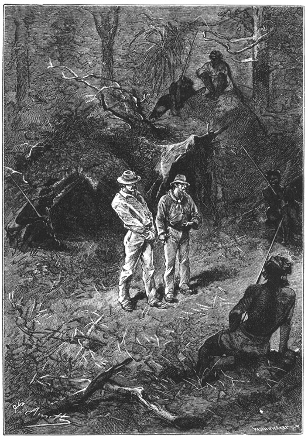Aber sie wurden scharf bewacht.
Solchen Gebräuchen mußten sich nun Capitän John und Harry Felton anbequemen. Die Strapazen dieser Wanderzüge mußten sie ertragen, sich mit der oft ungenügenden und immer ekelerregenden Nahrung begnügen, gar nicht von den kannibalischen Scenen zu reden, deren Schrecken sie nicht verhindern konnten, wenn in den Schlachten Hunderte von Feinden gefallen waren.
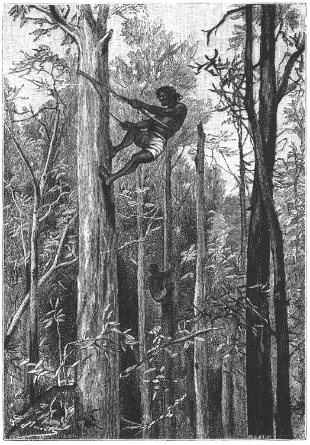Es ist kein Gummibaum zu hoch.
John und Harry Felton trachteten nun die Wachsamkeit ihres Stammes einzuschläfern, um bei Gelegenheit entfliehen zu können. Aber sie wurden so scharf bewacht, daß sie in den neun Jahren nur selten Gelegenheit fanden, das zu versuchen. Ein einzigesmal – und zwar gerade ein Jahr vor der Expedition der Mrs. Branican nach Australien – hätte die Flucht gelingen können. Das kam auf folgende Weise zu Stande.
Die Indas lagerten damals an den Küsten des Amadäussees im Südwesten des Alexandralandes. Da es selten vorkam, daß sie so tief in das Centrum des Continentes vordrangen und die beiden Gefangenen wußten, daß die Overland-Telegraf-Line nur etwa dreihundert Meilen entfernt war, so beschlossen sie, die Gelegenheit zu benutzen und zu entfliehen. Sie hielten es für besser, wenn sie getrennt flöhen und sich einige Meilen jenseits des Lagers wieder träfen. Sie täuschten die Wachsamkeit der Eingebornen, und Harry Felton gelang es, den Ort zu erreichen, an dem er seinen Leidensgefährten erwarten sollte. Unglücklicherweise wurde John zu Willy berufen, der ihn wegen einer Wunde um Rath fragte, welche er im letzten Kampfe erhalten hatte. John konnte daher nicht fliehen und Harry Felton wartete vergebens einige Tage ... Da er nun glaubte, daß, wenn er eine Station oder eine Ortschaft erreiche, eine Expedition zur Befreiung des Capitäns unternommen werden könnte, so schlug er eine südöstliche Richtung ein. Aber er hatte so furchtbar zu leiden, daß er vier Monate nach seiner Flucht sterbend an den Ufern des Parru im Districte Ulakarasa von Neu-Südwales gefunden wurde.
Nach Sydney gebracht, lag er einige Wochen darnieder und starb, nachdem er Mrs. Branican Alles gesagt hatte, was den Capitän John betraf.
Für John brachen nun fürchterliche Tage an, und es bedurfte seiner ganzen moralischen und physischen Energie, um nicht über die Abwesenheit seines Gefährten in Verzweiflung zu gerathen. Mit wem sollte er jetzt von Allem sprechen, was ihm so theuer war: Von seiner Heimat, von San-Diego, von den Lieben, die er dort zurückgelassen hatte, von seiner muthigen Frau, seinem Sohne Wat, der schon groß sein würde, von William Andrew, von allen seinen Freunden? ... Schon seit neun Jahren war John bei den Indas gefangen, und wie viel Jahre würden noch verfließen, bis er die Freiheit wieder erlangte? Aber er verlor die Hoffnung nicht und hielt sich mit dem Gedanken aufrecht, daß Harry Felton die Küste erreichen und alles Menschenmögliche versuchen werde, um seinen Capitän zu retten ...
In der ersten Zeit seiner Gefangenschaft lernte John die Sprache der Eingebornen, die durch ihre logische Grammatik, die Fülle der Ausdrücke zu beweisen scheint, daß die Stämme Australiens einst eine gewisse Stufe der Cultur eingenommen haben müssen. Auch machte er Willy oft aufmerksam, daß er durch die Entlassung seiner Gefangenen nach Queensland oder dem südlichen Australien jedes gewünschte Lösegeld erhalten würde. Aber der Häuptling, von Natur aus mißtrauisch, hörte nicht darauf und erklärte, daß, wenn das Lösegeld käme, er John und seinen Gefährten die Freiheit geben würde. Auf bloße Versprechungen könnte er sich in keinem Falle einlassen.
Die Flucht Harry Felton's brachte es mit sich, daß Willy den Capitän John noch schärfer bewachen ließ. Man verbot ihm, während der Rast oder des Marsches hin und herzugehen, und er mußte sich der Aufsicht eines Eingebornen unterwerfen, der mit seinem Kopfe für ihn haftete.
Monate verstrichen, ohne daß John etwas von seinem Gefährten gehört hätte. War es nicht möglich, daß Harry Felton unterwegs zugrunde gegangen war? Wenn der Flüchtige Queensland oder die Provinz Adelaide erreichte, hätte er da nicht schon längst einen Versuch zu seiner Befreiung gemacht?
Im Anfange des Jahres 1881 – d. h. in den ersten Sommermonaten – zog der Stamm der Indas gegen das Thal des Fitz-Roy, wo Willy gewöhnlich die heiße Jahreszeit zubrachte, und seine Leute genügende Nahrungsmittel fanden.
Hier hielten sich die Indas auch in den ersten Tagen des April auf, und ihr Lager stand an der Mündung eines kleinen Nebenflusses, der aus den nördlichen Ebenen kam.
Sobald der Stamm in diese Gegend kam, wußte John, daß er in der Nähe der Küste war, die er zu erreichen gedachte. Wenn er dahin gelangte, so würde es ihm vielleicht möglich sein, jene Ortschaften im Süden zu erreichen, die der Oberst Warburton auf seinem Zuge berührte.
John war fest entschlossen, Alles zu wagen und sollte er auch dabei zu Grunde gehen.
Unglücklicherweise vernichtete eine Abänderung des Reiseplanes der Indas alle seine Hoffnungen, denn Willy traf in der Mitte des April Anstalten, sein Winterlager an dem Oberlaufe des Flusses zu beziehen.
Was war da vorgefallen, und was war die Ursache, daß dieser Stamm so ganz von seiner gewohnten Richtung abwich?
Dem Capitän John gelang es nur mit Mühe zu erfahren, daß der Stamm deshalb an den Oberlauf des Flusses ziehe, weil die schwarze Polizei soeben an dem Unterlaufe des Fitz-Roy gesehen worden sei.
Wir dürfen nicht vergessen, daß auf Grund der Berichte Harry Felton's die schwarze Polizei den Befehl erhielt, den Capitän John in den Gebieten des Nordwestens zu suchen.
Diese von den Eingebornen so gefürchtete schwarze Polizei steht unter dem Befehle eines Hauptmannes, »Mani« genannt, der unter sich einen Sergeanten, etwa dreißig Weiße und achtzig Schwarze hat, die, Alle wohlbewaffnet, auf guten Pferden dahinreiten. Diese »Eingebornen-Polizei«, wie sie hieß, genügte für die Sicherheit der Bewohner in den entlegenen Gegenden, welche sie zu bestimmten Zeiten besuchte. Während die Einen vom Standpunkte der Humanität aus das Vorgehen dieser Polizei gegen die Eingebornen tadeln, loben es die Anderen wieder wegen der öffentlichen Sicherheit. Ihr Dienst ist ungemein anstrengend; trotzdem eilen sie mit unglaublicher Schnelligkeit von einem Punkte zum anderen. Auch die Nomadenstämme fürchten diese Polizei, und dies war der Grund, warum Willy beschloß, an den Oberlauf des Flusses zu ziehen.
Aber die Gefahr der Indas konnte die Rettung Johns sein. Wenn es ihm gelang, eine Abtheilung jener Polizei zu erreichen, so war seine Befreiung ebenso sicher wie seine Heimkehr. Würde es nicht möglich sein, während des Abbruches des Lagers seine Wächter zu täuschen?
Willy mußte die Absichten Johns durchblickt haben, denn die Thüre seiner Hütte wurde zu der gewohnten Stunde nicht aufgesperrt und vor derselben stand ein Wächter. Als John nach dem Grunde dieser Maßregel fragte, erhielt er keine Antwort; auch seiner Bitte, ihn zum Häuptlinge zu führen, kam man nicht nach.
Was war denn vorgefallen? Beschleunigten etwa die Indas ihre Vorbereitungen, um weiter zu ziehen? Das war wahrscheinlich, denn John hörte ein fortwährendes Kommen und Gehen in der Nähe seiner Hütte, wohin Willy ihm einige Nahrungsmittel geschickt hatte.
Ein ganzer Tag verfloß, dann noch einer. Nirgends zeigte sich eine Aenderung, denn der Gefangene wurde noch immer scharf bewacht. Endlich in der Nacht vom 22. zum 23. April konnte John bemerken, daß das unruhige Hasten und Treiben draußen aufgehört hatte, und er mußte sich fragen, ob denn die Indas wirklich das Lager am Fitz-Roy verlassen wollten.
Am folgenden Tage wurde plötzlich die Thüre der Hütte aufgerissen.
Ein Mensch – ein Weißer – stand vor dem Capitän John.
Es waren ungefähr zweiunddreißig Tage verflossen – seit der Nacht vom 22. zum 23. März – daß Len Burker sich von Mrs. Branican und ihren Gefährten getrennt hatte, indem der Samum seinen Plänen Vorschub leistete. Er hatte Jane, die Schwarzen der Karawane und besonders die Kameele bei sich, welche das Lösegeld des Capitän John trugen.
Len Burker befand sich daher in einer viel günstigeren Lage, die Indas im Thale des Fitz-Roy aufzusuchen. Schon während seines Vagabundenlebens war er in Berührung mit den Eingebornen gekommen, deren Sprache und Sitte er kannte. Das gestohlene Lösegeld sicherte ihm eine gute Aufnahme bei Willy, und wenn der Capitän einmal befreit war, dann hatte er ihn in seinen Händen und dann ...
Nachdem sich Len Burker mit seinen Gefährten von der Karawane getrennt hatte, eilte er nach Nordwesten weiter und befand sich beim Aufgange der Sonne schon einige Meilen entfernt.
Jane wollte ihren Gatten anflehen, ihn inständigst bitten, Dolly und die ihrigen nicht in der Wüste zu lassen, ihn erinnern, daß dies ein neues Verbrechen wäre zu dem, das er bei der Geburt Godfrey's begangen hatte ...
Jane that es – und erreichte nichts, es war Alles vergebens. Len Burker auf seinem Marsche aufzuhalten, stand in keiner Macht, und somit mußte er sein Ziel bald erreichen. Dolly und Godfrey verhungert oder verdurstet, John Branican verschollen – nichts stand mehr im Wege, daß die Erbschaft Starter's auf Jane überging, d. h. in seine Hände kam. Wie wollte er diese Millionen verwenden!
Von diesem Elenden war nichts Anderes zu erwarten. Er gebot seiner Frau Schweigen, die seinen Drohungen nachgeben mußte, da sie wohl wußte, daß er sie schon längst verlassen hätte, wenn sie nicht ein passendes Werkzeug für die Erreichung seiner Pläne wäre. Wie hätte sie nur daran denken können, zu fliehen oder die Karawane Dollys zu erreichen? Was wäre aus ihr geworden? Uebrigens ließen sie zwei Schwarze keinen Augenblick aus den Augen.
Da es Len Burker auf seinem Marsche weder an Thieren noch an Lebensmitteln fehlte, so konnte er große Tagesreisen zurücklegen, besonders weil auch die Schwarzen der Escorte an diese Strapazen viel mehr gewöhnt waren als die Weißen.
In siebzehn Tagen erreichte Len Burker das linke Flußufer, an dem Tage, wo Mrs. Branican und ihre Gefährten in der Wüste erschöpft zusammenstürzten.
Hier begegnete Len Burker einigen Eingebornen und erfuhr von ihnen den gegenwärtigen Aufenthalt der Indas. Da sich dieselben mehr in dem Thale nach Westen befanden, beschloß er, den Fluß abwärts zu ziehen.
Der Weg war nicht beschwerlich, denn im Monate April ist im nördlichen Theile von Australien das Klima nicht so heiß, so daß die Karawane am Flusse Fitz-Roy das Ende ihrer Leiden erreicht hätte. Einige Tage darauf wäre sie mit den Indas in Verbindung getreten, denn John und Dolly waren nur noch fünfundachtzig Meilen von einander entfernt.
Als Len Burker bestimmt wußte, daß er nur noch zwei oder drei Tagemärsche vor sich habe, machte er Halt. Jane mit sich zu nehmen, sie John gegenüberzustellen und Gefahr zu laufen, von ihr entlarvt zu werden, nein, so unvorsichtig war der Schurke nicht! Er befahl Halt zu machen, und trotz der inständigen Bitten wurde die unglückliche Frau unter der Bewachung zweier Schwarzen zurückgelassen.
Hierauf zog Len Burker mit seinen Gefährten weiter nach Westen, gefolgt von den Reit- und Lastkameelen mit dem Lösegelde.
Am 20. April traf Len Burker mit dem Stamme zusammen, und zwar gerade in der Zeit, wo die Eingebornen durch die Nähe der schwarzen Polizei so beunruhigt waren. Schon hatte Willy Vorbereitungen getroffen, das Lager abzubrechen und sich in die obersten Gegenden des Arnheimlandes zurückzuziehen, das zu Nordaustralien gehörte.
Auf Befehl Willy's war eben John in seine Hütte eingesperrt worden, um jeden Fluchtversuch zu vereiteln. Auch sollte er nichts von den Unterhandlungen vernehmen, die wahrscheinlich zwischen Len Burker und dem Häuptlinge der Indas gepflogen wurden.
Diese Unterhandlungen boten keine Schwierigkeiten, denn Len Burker kannte Willy schon von früher her, und dann handelte es sich ja nur um den Loskauf Johns.
Der Häuptling zeigte sich gern bereit, den Gefangenen gegen ein Lösegeld freizugeben, denn das Angebot von Stoffen, Perlen und besonders Tabak sagte ihm ganz zu. Aber er ließ doch durchblicken, daß ihm die Trennung von einem so wichtigen Manne, der so viele Jahre in ihrer Mitte lebe, schwer falle u. s. w. Uebrigens wußte er, daß John ein Amerikaner war, und daher bald eine Expedition zu seiner Befreiung ausgesendet werde, was auch Len Burker bestätigte, indem er sich als den Führer derselben vorstellte. Als er erfuhr, daß Willy sich über die Nähe der schwarzen Polizei beunruhigte, benutzte er das sofort, um die Unterhandlungen zu Ende zu führen. Es lag Len Burker selbst sehr viel daran, daß die Befreiung Johns ein Geheimniß bleibe, und er konnte auch aller Wahrscheinlichkeit nach darauf rechnen; das Verschwinden John Branican's könnte mit ihm nie in Zusammenhang gebracht werden, wenn die Schwarzen seiner Escorte schwiegen, was ihm schon gelingen würde.
So wurde denn das Lösegeld von Willy angenommen, und das Geschäft am 22. April abgeschlossen. Noch an demselben Abend brachen die Indas ihr Lager ab und zogen den Fitz-Roy stromaufwärts.
Len Burker war am Ziel seiner Wünsche! Das Folgende wird uns zeigen, welchen Nutzen er davon hatte.
Am 23. April morgens acht Uhr wurde die Thüre der Hütte aufgerissen; John Branican stand Len Burker gegenüber.
Vierzehn Jahre waren seit dem Tage verflossen, wo der Capitän ihn zum letztenmale bei der Abfahrt des »Franklin« die Hand reichte.
Er erkannte ihn nicht, aber Len Burker war über das Aussehen Johns ganz betroffen, denn er hatte sich gar nicht so sehr verändert. Er war gealtert selbstverständlich – denn er zählte damals dreiundvierzig Jahre – aber weniger, als man nach einem so langen Aufenthalte bei den Eingebornen hätte annehmen können. Er hatte noch immer seine ausgeprägten Züge, seinen entschlossenen Blick, dessen Feuer noch nicht erloschen war, sein dichtes Haar, nur gebleicht. Da er kräftig und stark war, vielleicht noch stärker als Harry Felton, so hätte er bei einer Flucht die Strapazen durch die Wüste besser ertragen als sein Gefährte, der ihnen unterlag.
Als John Len Burker erblickte, wich er zuerst zurück, denn er befand sich seit der Gefangenschaft bei den Indas jetzt zum erstenmale einem Weißen gegenüber.
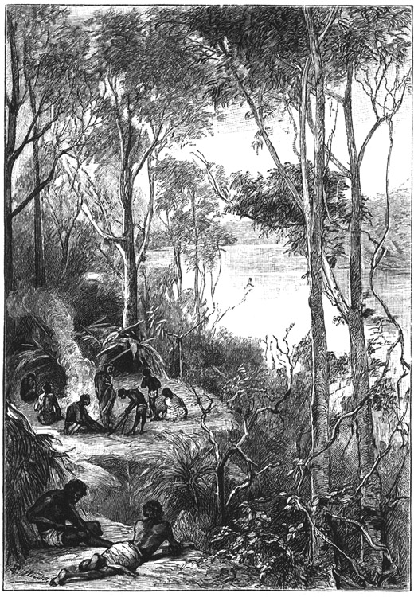Ihr Lager stand an der Mündung eines kleinen Nebenflusses.
– Ein Amerikaner von San-Diego.
– Von San-Diego?
– Ich bin Len Burker ...
– Sie!«
Der Capitän stürzte auf ihn zu, nahm ihn bei den Händen, zog ihn an sich und küßte ihn ... Was? ... Dieser Mensch wäre Len Burker! ... Nein! ... Das war nicht möglich! ... Das war nur ein Trugbild ... John hatte schlecht gehört ... Er träumte ... Len Burker ... Der Gatte Janes ...
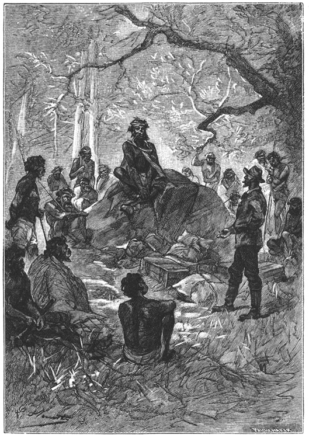Diese Unterhandlungen boten keine Schwierigkeiten.
Jetzt dachte John nicht an die Antipathie, welche er stets gegen Len Burker empfand gegen den Menschen, dem er mit Recht nicht getraut hatte.
»Len Burker, wiederholte er ...
– Ja, ich selbst, John!
– Hier in ... in diesem Lande! ... Ach ... Sie ... Len ... sind auch gefangen gewesen?«
Wie hätte sich John die Anwesenheit Len Burker's im Lager der Indas anders erklären können?
»Nein, erwiderte Len Burker schnell, nein, John, ich bin nur gekommen um Sie von dem Häuptlinge dieses Stammes loszukaufen ... Sie zu befreien ...
– Mich befreien?«
Der Arme glaubte wahnsinnig zu werden ...
Als er sich endlich fassen konnte ... da wollte er aus der Hütte stürzen ... Er wagte es nicht ... Len Burker redete von Befreiung? ... Aber war er denn frei? ... Und Willy? ... Und die Indas? ...
»Sprechen Sie, Len, sprechen Sie! ...« sagte er, indem er die Arme über der Brust kreuzte, als wollte er verhindern, daß sie ihm zerspringe.
Getreu seinem Plane wollte Len Burker nur einen Theil der Ereignisse verrathen und sich das ganze Verdienst dieser Expedition zuschreiben ... Er begann eben mit der Erzählung, als John mit fast erstickender Stimme rief:
»Und Dolly? ... Dolly?
– Sie lebt, John.
– Und Wat? ... Mein Kind?
– Lebt! ... Beide leben ... zu San-Diego.
– Meine Frau ... Mein Sohn! ... sagte John und weinte.
– Jetzt sprechen Sie ... Len ... sprechen Sie! sagte er nach einigen Augenblicken. Ich habe jetzt die Kraft ... Ihnen zuzuhören.«
Len Burker trieb die Frechheit so weit, daß er ihm bei seiner Erzählung offen ins Gesicht sah.
»John! begann er, als vor einigen Jahren kein Zweifel mehr über den Untergang des ›Franklin‹ obwaltete, da mußten meine Frau und ich San-Diego und Amerika verlassen, denn wichtige Geschäfte riefen mich nach Australien. Hier eröffnete ich nun in Sydney eine Kanzlei. Seit unserer Abreise blieben Jane und Dolly in brieflichem Verkehr miteinander, denn Sie wissen, wie lieb sich die beiden Frauen hatten, die weder Zeit noch Entfernung trennen konnte.
– Ja! ... Ich weiß, erwiderte John. Dolly und Jane waren Freundinnen und die Trennung mußte beiden schwer fallen!
– Sehr schwer, John, fuhr Len Burker fort, aber nach einigen Jahren kam der Tag, wo die Trennung ein Ende nahm. Vor ungefähr elf Monaten trafen wir Vorbereitungen, Australien zu verlassen und nach San-Diego zurückzukehren, als eine unerwartete Nachricht unsere Abreise aufhielt. Man hatte soeben erfahren, was aus dem »Franklin« geworden war, wo er scheiterte, und zu gleicher Zeit entstand das Gerücht, daß der einzige Ueberlebende des Schiffbruches als Gefangener bei einem australischen Stamme sich aufhalte, und das waren Sie, John! ...
– Aber wie hat man dies erfahren können, Len? ... Hat Harry Felton? ...
– Ja, diese Nachricht brachte Harry Felton ... fast am Ziele, wurde Ihr Gefährte ganz erschöpft an den Ufern des Parru, im Süden von Queensland, gefunden und nach Sydney gebracht ...
– Harry ... mein braver Harry ... rief der Capitän John aus. Ach, ich wußte, daß er mich nicht vergessen würde ... Als er in Sydney ankam, organisirte er gewiß gleich eine Expedition?
– Er ist todt ... gestorben an den Strapazen! ...
– Todt! ... wiederholte John. Mein Gott! ... Todt! ... Harry Felton ... Harry ... Thränen stürzten aus seinen Augen.
– Doch bevor er starb, fuhr Len Burker fort, konnte Harry Felton noch Alles erzählen, was nach dem Schiffbruche des »Franklin« vorgefallen war ... Ich stand an seinem Bette ... Ich hörte Alles ... Alles aus seinem Munde ... Dann schlossen sich seine Augen, John, indem er noch einmal Ihren Namen aussprach ...
– Harry! ... Mein armer Harry! ... murmelte John bei dem Gedanken an die furchtbaren Leiden, denen dieser treue Freund, welchen er nie mehr sehen würde, zum Opfer gefallen war.
– John, sagte Len Burker weiter, der Schiffbruch des »Franklin,« über den man vierzehn Jahre hindurch ohne jede Nachricht war, brachte eine tiefe Bewegung hervor. Sie können sich daher vorstellen, welche Sensation es machte, als es auf einmal hieß, daß Sie lebten ... daß Harry Felton Sie einige Monate vorher in der Gefangenschaft eines nördlichen Stammes zurückgelassen habe ... Ich telegraphirte sofort an Dolly, indem ich sie zugleich in Kenntniß setzte, daß ich mich auf den Weg mache, um Sie den Händen der Indas zu entreißen, was etwas ganz Leichtes wäre, da es sich, nach den Berichten Harry Felton's, nur um ein Lösegeld handle ... Dann organisirten wir eine Expedition, deren Führung ich übernahm, und so brachen denn ich und Jane von Sydney auf. Seitdem sind sieben Monate verflossen ... während der wir den Fitz-Roy erreichten ... Endlich kamen wir mit Gottes Hilfe in das Lager der Indas ...
– Tausend Dank, Len, tausend Dank ... rief der Capitän John aus. Was Sie da für mich thaten ...
– Hätten Sie unter gleichen Umständen auch für mich gethan, antwortete Len Burker.
– Gewiß! ... Und wo ist Jane, diese muthige Frau, welche sich nicht gescheut hat, so vielen Gefahren zu trotzen?
– Drei Tagereisen von hier entfernt, bei zweien meiner Leute, erwiderte Len Burker.
– Ich will sie sehen ...
– Ja, John, und ich habe sie nur deshalb nicht mit hierhergenommen, weil ich nicht wußte, welche Aufnahme ich bei den Indas finden würde ...
– Aber Sie sind doch nicht allein hier?
– Nein, ich habe meine Escorte hier, die aus etwa zwölf Schwarzen besteht. Ich bin seit zwei Tagen in diesem Thale ...
– Seit zwei Tagen?
– Ja, und ich habe sie wohl zu verwenden gewußt, denn dieser Willy hing sehr an Ihnen, lieber John ... Er kannte Ihren Werth ... Ich mußte lange mit ihm unterhandeln, bis er einwilligte, Sie gegen ein Lösegeld freizugeben.
– So bin ich also frei?
– So frei wie ich selbst.
– Aber die Indas?
– Sind mit ihrem Häuptling weitergezogen und nur wir sind noch im Lager.
– Fort?
– Seht selbst.«
Der Capitän stürzte aus der Hütte.
In diesem Augenblicke waren am Ufer des Flusses nur die Schwarzen der Escorte; nirgends war einer der Indas zu sehen.
Wir erkennen, was in dem Berichte Len Burker's Wahrheit und Lüge war. Von dem Wahnsinne der Mrs. Branican sagte er kein Wort; die große Erbschaft, die Dolly durch den Tod Edward Starter's zugefallen war, verschwieg er; die erfolglosen Fahrten des »Dolly-Hope« durch die Gewässer der Philippinen und die Meerenge von Torres im Jahre 1879 und 1880 existirten nicht für ihn. Kein Wort von der Unterredung der Mrs. Branican mit Harry Felton! Nichts von dem furchtbaren Marsche dieser muthigen Frau durch die Große Wüste! Nur er allein hatte mit Lebensgefahr John, den lieben John gerettet!
Wie hätte auch John an der Wahrheit dieses Berichtes zweifeln können? Warum hätte er nicht dem heiß danken sollen, der ihn den Händen der Indas nach so langer Gefangenschaft entriß? Ihm, der ihn seiner Frau und seinem Kinde wiedergeben würde?
Seine übervollen Dankesworte hätten jeden weniger schlechten Menschen rühren müssen ... Len Burker aber hatte kein Gewissen, und nichts konnte ihn hindern, seine verbrecherischen Pläne durchzuführen. Jetzt beeilte sich John Branican, ihm in das Lager zu folgen, wo Jane ihn erwartete. Warum hätte er zögern sollen? ... Auf diesem Wege würde Len Burker Gelegenheit finden, ihn verschwinden zu lassen, ohne bei den Schwarzen seiner Escorte Verdacht zu erregen.
Da der Capitän sehr ungeduldig war, beschlossen sie noch an demselben Tage aufzubrechen. Sein sehnlichster Wunsch war, Jane wiederzusehen, die aufopfernde Freundin seiner Frau, mit ihr von Dolly und ihrem Kinde, von Mr. William Andrew, von San-Diego zu sprechen.
Sie machten sich am 23. April Nachmittags auf den Weg.
Len Burker hatte Lebensmittel für mehrere Tage, während der Fitz-Roy das Wasser der kleinen Karawane liefern konnte. Die Kameele, welche Len Burker und John als Reitthiere dienten, brachten sie der Escorte immer um einige Meilen voraus, was gerade in die finstren Pläne des Elenden paßte ... John durfte nicht in das Lager kommen ... und er würde auch nicht hinkommen. Um acht Uhr Abends rasteten Beide am linken Ufer des Flusses, um dort zu übernachten. Da aber Len Burker wegen der geringen Entfernung irgend welche unliebsamen Begegnungen befürchtete, so fand er den Zeitpunkt noch nicht für passend.
Sie zogen am folgenden Morgen weiter.
Die folgende Tagereise zerfiel in zwei Märsche, die durch eine zweistündige Rast getrennt waren. Da die Hitze groß war, schliefen die Schwarzen nach der Mahlzeit sofort ein. Einige Augenblicke später fiel auch der Capitän in tiefen Schlaf.
Vielleicht bot sich jetzt eine Gelegenheit für Len Burker dar. Er konnte John erschlagen, den Leichnam etwa zwanzig Schritte weiterschleppen und ihn in den Fluß werfen, so daß alle Umstände sich vereinigen würden, jede Spur des Verbrechens zu verwischen. Am folgenden Tage hätte man John vergebens suchen können ...
Um zwei Uhr Morgens erhob sich Len Burker geräuschlos, schlich mit einem Dolche zu seinem Opfer hin und wollte ihm eben die Mordwaffe ins Herz stoßen, als John erwachte.
»Ich dachte, Sie riefen mich, sagte Len Burker.
– Nein, lieber Len, erwiderte John. In dem Augenblicke, als ich erwachte, träumte ich von meiner Dolly und unserem Kinde.«
Um sechs Uhr früh zog die kleine Karawane den Fitz-Roy entlang weiter.
Als sie zu Mittag rasteten, schlug Len Burker dem Capitän vor, etwas vorauszureiten, denn er war fest entschlossen, jetzt ans Ziel zu kommen, weil sie an demselben Abend das Lager erreichen mußten.
John war damit einverstanden, denn er wollte so bald als möglich bei Jane sein, um mit ihr von seinen Lieben sprechen zu können.
Eben wollten sie aufbrechen, als einer der Schwarzen in einer Entfernung von hundert Schritten einen Weißen signalisirte, der nicht ohne Vorsicht näher kam.
Ein Schrei entrang sich Len Burker ...
Er hatte Godfrey erkannt.
Der Capitän John, ohne daß er wußte, was er that, stürzte auf den jungen Mann los.
Len Burker stand wie versteinert da.
Godfrey gegenüber ... Godfrey, der Sohn Dollys und Johns! Aber war denn die Karawane der Mrs. Branican nicht zugrunde gegangen? ... Sie war also hier ... einige Meilen entfernt ... vielleicht nur einige hundert Schritte ... oder war Godfrey der einzige Ueberlebende von Jenen, welche der Elende verlassen hatte?
Wie dem auch sei, diese unerwartete Begegnung konnte den ganzen Plan Len Burker's vernichten. Wenn dieser junge Matrose spräche, so würde er sagen, daß Mrs. Branican an der Spitze der Karawane sei ... Er würde sagen, daß Dolly tausend Strapazen und Gefahren in den Wüsten bestanden hatte, um ihrem Gatten Hilfe zu bringen ... daß sie da sei ... daß sie ihm folge ...
Und so war es auch.
Am Morgen des 27. März hatte sich nach dem Verrathe Len Burker's die kleine Karawane gegen Nordwesten gewendet. Am 8. April sanken die Armen halbtodt vor Hunger und Durst in den heißen Sand.
Mit allen ihren Kräften versuchte Mrs. Branican ihre Gefährten zu ermuthigen, flehte sie an, noch einmal aufzustehen, die letzte Anstrengung zu machen, um den Fluß zu erreichen, wo sie einige Hilfsmittel finden würden ... Sie sprach wie zu Leichnamen ... sogar Godfrey hatte das Bewußtsein verloren.
Aber die Seele der Expedition war Dolly, und Dolly that, was ihre Gefährten nicht mehr thun konnten.
Sie hatten die Richtung gegen Nordwesten eingeschlagen; nach dieser Richtung hin hatten Tom Marix und Zach Fren ihre Arme ausgestreckt ... Dolly eilte nach dieser Richtung weiter.
Was hoffte die muthige Frau in dieser endlosen Ebene, aller Hilfsmittel entblößt? ... Ihr Ziel war der Fitz-Roy! Dort wollte sie bei den Weißen oder bei den Eingebornen Hilfe suchen ... Sie eilte weiter und legte in drei Tagen etwa zwanzig Meilen zurück ... Aber ihre Kräfte verließen sie, sie stürzte zusammen und wäre gestorben, wenn ihr nicht – man möchte sagen – vom Himmel Hilfe gekommen wäre.
Um diese Zeit ritt die schwarze Polizei der Grenze der »Großen Wüste« entlang, und der Hauptmann unternahm, indem er etwa dreißig Mann an dem Fitz-Roy zurückließ, mit sechzig Mann einen Streifzug in diesen Theil der Provinz.
Diese fanden Dolly. Als sie wieder zum Bewußtsein kam, sagte sie gleich, wo ihre Gefährten wären, zu denen man sie sofort führte. Dem Mani und seinen Leuten gelang es, die Armen wieder zum Bewußtsein zu bringen, von denen kein Einziger nach vierundzwanzig Stunden noch lebend angetroffen worden wäre.
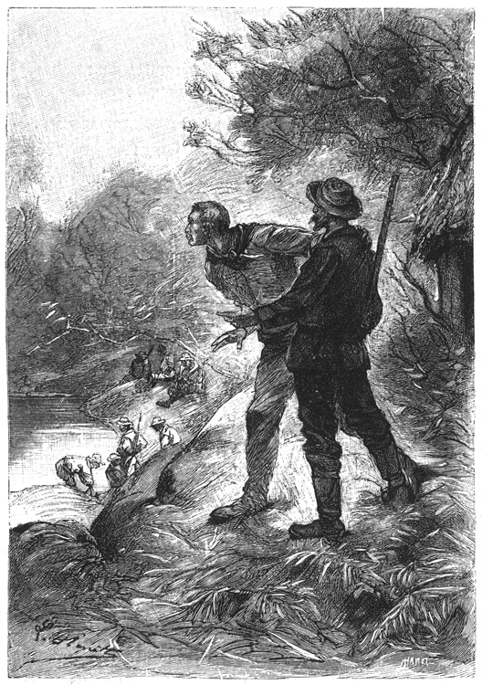In diesem Augenblicke waren an dem Ufer nur die Schwarzen der Escorte.
Tom Marix, der ein Bekannter des Mani war, berichtete, was seit ihrer Abreise von Adelaide vorgefallen war. Als er die Indas erwähnte, erwiderte der Hauptmann, daß dieser Stamm an den Ufern des Fitz-Roy, ungefähr sechzig Meilen entfernt, lagere.
Es war keine Zeit zu verlieren, wenn sie die Pläne Len Burker's vereiteln wollten, den der Mani wegen Theilnahme an verschiedenen Plünderungen und Raubzügen schon von früher her zu verhaften hatte. Es unterlag keinem Zweifel, daß es Len Burker gelingen werde, den Capitän John zu befreien, der keine Ursache hatte, ihm zu mißtrauen.
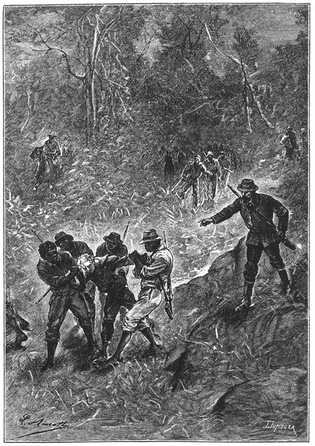Aber er und John wurden überwältigt.
Würde es möglich sein, ihre Spuren zu finden?
Mrs. Branican konnte auf den Mani und seine Leute rechnen, die mit ihren Gefährten die Lebensmittel theilten und ihnen ihre Pferde abtraten. Die Truppe brach noch denselben Abend auf, und Nachmittags am 21. April zeigten sich am Horizonte die Höhen des Thales.
Hier stieß der Mani auf zwei seiner Leute, die er am Ufer des Fitz-Roy zurückgelassen hatte; diese theilten ihm mit, daß die Indas ungefähr hundert Meilen weiter am Oberlaufe lagerten. Man mußte sie sofort erreichen, denn wenn Mrs. Branican jetzt nach dem Verrathe Len Burker's kein Lösegeld mehr hatte, so konnte John nur mit Gewalt den Indas entrissen werden. Doch als sie das Thal erreichten, wo sich sonst das Lager der Indas befand, waren diese fortgezogen. Der Mani verfolgte sie, und so kam es, daß am 25. April sich Godfrey, der eine halbe Meile vorausgeeilt war, plötzlich dem Capitän John gegenüber befand.
Aber Len Burker gelang es, sich zu fassen; er sah Godfrey an, ohne ein Wort zu sagen, und wartete, was der junge Mann thun werde.
Godfrey sah ihn gar nicht, denn sein Auge hing nur an dem Capitän, den er nach der Photographie, die ihm Mrs. Branican gegeben hatte, sofort erkannte. Kein Zweifel – dieser Mann war der Capitän John.
Auch John sah Godfrey mit ungewöhnlicher Bewegung an. Obwohl er nicht errathen konnte, wer dieser junge Mann war, so verschlang er ihn doch mit seinen Blicken ... er streckte ihm die Arme entgegen ... er rief ihn mit zitternder Stimme ... Ja! Er rief ihn, als wäre er sein Sohn!
Godfrey stürzte in seine Arme, indem er rief:
»Capitän John!
– Ja ... ich ... ich bin es! erwiderte John. Doch Du ... mein Kind ... wer bist Du? ... Woher kommst Du? ... Wie kennst Du meinen Namen?«
Godfrey konnte nicht antworten, denn plötzlich erblickte er Len Burker und erbleichte.
»Len Burker! rief Godfrey.
– Ja, mein Kind, erwiderte John, es ist Len Burker ... ihm verdanke ich meine Rettung!
– Rettung! rief Godfrey. Nein, Capitän John, nein, Len Burker rettete Sie nicht! ... Er wollte Sie vernichten, er verließ uns in der Wüste, er stahl Mrs. Branican das Lösegeld ...«
Bei diesem Namen that John einen Schrei und ergriff Godfrey bei der Hand:
»Dolly? ... Dolly? ... wiederholte er.
– Ja ... Mrs. Branican, Capitän John, Ihre Frau, die ganz in der Nähe ist!
– Der Bursche ist verrückt! sagte Len Burker, indem er sich Godfrey näherte.
– Ja ... Verrückt! ... sagte John leise. Das arme Kind ist verrückt!
– Len Burker, hub Godfrey wieder an, der vor Zorn zitterte, Sie sind ein Verräther ... Sie sind ein Mörder! ... Wenn dieser Mörder da ist ... so will er Sie, Capitän John, ebenso vernichten, wie er Mrs. Branican und ihre Gefährten vernichten wollte ...
– Dolly! ... Dolly! ... rief Capitän John. Nein ... Du bist nicht verrückt, mein Kind! ... Ich glaube Dir ... Komm! ... Komm!«
Len Burker und seine Leute warfen sich auf Godfrey und John; der junge Matrose zog seinen Revolver und schoß einem Schwarzen eine Kugel in die Brust. Aber er und John wurden überwältigt und von den Schwarzen gegen den Fluß hingeschleppt.
Glücklicherweise wurde der Schuß gehört, wurden Rufe laut, und sofort stürmten der Mani und seine Polizeisoldaten, Tom Marix und seine Genossen herbei. Mrs. Branican, Zach Fren, Jos Meritt, Gîn-Ghi eilten zu Hilfe.
Len Burker und die Schwarzen konnten keinen Widerstand leisten, und einen Augenblick darauf lagen sich John und Dolly in den Armen.
Die Partie war für Len Burker verloren, wenn man ihn erwischte, konnte er auf keine Gnade hoffen. Dies sah er ein, deshalb floh er. Der Mani und seine Leute, Zach Fren, Tom Marix, Jos Meritt eilten ihm nach.
Es ist unmöglich, die rührende Scene zu beschreiben, als Dolly und John sich nach so langer Trennung in den Armen lagen. Sie weinten, und Godfrey theilte ihre Küsse, ihre Thränen, ihre Freude.
So viel Glück konnte Dolly nicht ertragen. Ihre Kräfte verließen sie und eine tiefe Ohnmacht umfing sie.
Godfrey kniete neben ihr und half Harriette, sie zum Bewußtsein zu bringen. John wußte es nicht, wohl aber die Anderen, daß Dolly das erstemal vor Schmerz wahnsinnig geworden war ... Konnte sie ihren Geist nicht ein zweitesmal vor Freude verlieren? ...
»Dolly! ... Dolly!« rief John.
Godfrey küßte ihre Hände und rief:
»Mutter! ... Mutter!«
Dolly schlug die Augen auf, ihre Hand drückte die Johns, dessen Freude keine Grenzen kannte; er schloß Godfrey in seine Arme.
»Komm ... Wat! ... Komm! ... Mein Kind!«
Aber Dolly konnte ihn nicht in diesem Irrthum, nicht in dem Glauben lassen, daß Godfrey sein Kind wäre:
»Nein, John, sagte sie, nein ... Godfrey ist nicht unser Sohn! ... Unser armer Wat ist gestorben ... gestorben kurz nach Deiner Abfahrt.
– Todt!« rief John, der von Godfrey keinen Blick abwandte.
Dolly wollte ihm eben sagen, welches Unglück sie vor fünfzehn Jahren betroffen habe, als plötzlich ein Schuß auf der Seite ertönte, wohin Len Burker geflohen war.
War dieser Elende gerichtet oder hatte er ein neues Verbrechen begangen?
Fast in demselben Augenblicke erschien eine Gruppe Leute am Ufer des Fitz-Roy. Zwei Polizisten trugen eine Frau, die aus einer Wunde in der Brust heftig blutete.
Es war Jane.
Was war da vorgegangen?
Trotz der schnellen Flucht Len Burker's ließen ihn seine Verfolger nicht aus den Augen, und sie waren nur noch hundert Schritte von ihm entfernt, als er bei dem Anblicke Janes plötzlich stehen blieb.
Am vorhergehenden Abend war es der Unglücklichen gelungen, ihren Wächtern zu entfliehen. Sie wanderte aufs Gerathewohl weiter; als sie die ersten Schüsse hörte, war sie nur noch eine Viertelmeile von der Stelle entfernt, wo sich Godfrey und John gefunden hatten. Sie eilte vorwärts und befand sich plötzlich ihrem Gatten gegenüber.
Len Burker packte sie am Arme und wollte sie vergebens fortziehen. Da er dachte, daß Jane bei einer Begegnung mit Dolly das Geheimniß von der Geburt Godfreys verrathen könnte, so stieß er ihr den Dolch in die Brust.
In diesem Augenblicke ertönte ein Schuß, der von folgenden, jetzt ganz treffenden Worten begleitet war:
»Gut! ... O ... Sehr gut!«
Jos Meritt hatte sich Len Burker von der Seite genähert und ihm eine Kugel durch die Brust geschossen, so daß der Elende todt in den Fitz-Roy stürzte.
Tom Marix beugte sich über Jane, die nur noch schwach athmete. Zwei Polizeisoldaten hoben die unglückliche Frau auf und trugen sie zu Mrs. Branican.
Als Dolly sie erblickte, stieß sie einen herzzerreißenden Schrei aus. Sie stürzte auf sie los, beugte sich über sie, lauschte dem langsamen Schlagen des Herzens. Aber die Wunde Janes war tödtlich, der Dolch hatte ihre Lunge durchbohrt.
»Jane! ... Jane!« rief Dolly schmerzlich aus.
Die Sterbende schlug die Augen auf, und als sie Dolly erblickte, lächelte sie.
»Dolly! ... Liebe Dolly!« sagte sie leise.
Plötzlich belebte sich ihr Blick; sie sah den Capitän John.
»John ... Sie ... John! sagte sie, aber so leise, daß man es kaum hörte.
– Ja ... Jane, erwiderte John ... Ich bin es ... ich ... den Dolly gerettet hat ...
– John ... John ... ist da, murmelte sie.
– Ja ... bei uns, liebe Jane, sagte Dolly. Er wird uns nicht mehr verlassen ... Wir werden ihn mit Dir zu uns nehmen ... mit Dir ... mit Dir ...«
Jane hörte nicht mehr. Ihr Auge schien Jemand zu suchen ... und sie sagte:
»Godfrey! ... Godfrey!«
Die Todesangst begann schon ihre Gesichtszüge zu verzerren.
Mrs. Branican gab Godfrey ein Zeichen, der an sie herantrat.
»Er! ... Er! ... Endlich!« rief Jane mit der letzten Kraft.
Dann ergriff sie die Hand Dollys.
»Komm näher ... komm näher, Dolly, sagte sie. John ... auch Du ... höret, was ich Euch sage!«
Beide beugten sich über die Sterbende, um kein Wort zu überhören.
»John, Dolly, sagte sie, Godfrey ... Godfrey, der da steht ... Godfrey ist Euer Kind ...
– Unser Kind?« fragte Dolly leise.
Dabei wurde sie so bleich wie die Sterbende.
»Wir haben keinen Sohn mehr, sagte John, er ist gestorben. – Ja, erwiderte Jane, der kleine Wat ... ist ... im Golfe von ... San-Diego ... Aber Ihr habt ein zweites Kind gehabt ... und dieses Kind ... ist Godfrey.«
In abgebrochenen Sätzen konnte Jane noch Alles erzählen, was seit der Abfahrt Johns im Prospect-House vorgefallen war. Die geisteskranke Dolly wurde, ohne daß sie es wußte, zum zweitenmale Mutter, das Kind wurde auf Befehl Len Burker's einige Stunden nach der Geburt ausgesetzt, glücklicherweise aber gefunden und unter dem Namen Godfrey im Wat-House erzogen ...
»Wenn ich schuldig bin, fuhr die Sterbende fort, weil ich nicht den Muth hatte, es Dir zu gestehen, liebe Dolly, so verzeihe mir ... verzeihe auch Du mir, John!
– Verzeihung, Jane ... Dir, die uns unser Kind wiedergegeben hat ... – Ja ... Euer Kind, rief Jane. Vor Gott ... John, Dolly, ich schwöre es ... Godfrey ist Euer Kind!«
Als die Sterbende sah, daß Beide Godfrey in ihre Arme schlossen, da lächelte sie glücklich und schloß dann die Augen für immer.
Wir brauchen uns nicht mehr bei den folgenden Ereignissen aufzuhalten, wie auch nicht bei dem Rückwege, den die Glücklichen jetzt unter ganz anderen Umständen nach der Provinz Adelaide einschlugen.
Zuerst wurde folgende Frage aufgeworfen: Sollten sie den Fluß Fitz-Roy hinab zur Küste ziehen, oder sich gegen den Hafen Prinz Friedrich im Yorksund wenden? Aber da sehr viel Zeit verfließen würde, bevor ein Schiff an diese Küste geschickt werden könnte, so war es besser, denselben Weg zurückzulegen. Unter dem Schutze der Schwarzen Polizei, durch die Fürsorge des Hauptmannes reichlich mit Lebensmitteln versorgt und mit allen Kameelen, welche Len Burker gestohlen hatte, brauchten sie nichts zu fürchten.
Bevor sie aufbrachen, wurde Jane Burker am Fuße einer Gummibaumgruppe begraben. Dolly verrichtete ein inbrünstiges Gebet für die unglückliche Frau.
Die Karawane verließ den Fitz-Roy am 25. April unter der Leitung des Mani, der sich angeboten hatte, sie bis zur nächsten Station der Telegraphenlinie zu begleiten.
Alle waren überaus glücklich und wußten nichts mehr von den erlittenen Qualen. Zach Fren sagte in seiner Freude wiederholt zu Tom Marix:
»Nun, Tom, wir haben den Capitän doch gefunden.
– Ja, Zach, aber bald wäre es anders gekommen. Die Vorsehung hat es so gewollt.«
Aber Einer war doch nicht zufrieden, nämlich Jos Meritt.
Mrs. Branican hatte ihren Gatten gefunden, aber der berühmte Sammler fand nicht den Hut, um dessen Auffindung er so viele Qualen erduldet hatte. Welches Unglück, bis zu den Indas vorzudringen und nicht mit Willy sprechen zu können, der vielleicht den schönsten historischen Hut trug. Er tröstete sich ein wenig, als ihm der Mani sagte, daß die Stämme des Nordwestens noch keine europäische Kopfbedeckung hätten, was aber gerade das Entgegengesetzte von Jos Meritt's Ansicht war. Wenn sich auch sein Wunsch bei den Eingebornen des nördlichen Australien nicht erfüllt hatte, so konnte er sich wenigstens zu dem Meisterschusse gratuliren, durch den er die Familie Branican von dem elenden Burker befreit hatte.
Der Rückweg der Karawane ging so schnell wie möglich von Statten. Sie hatten nicht viel Durst zu leiden, denn die Brunnen wurden von den Herbstregen wieder gefüllt und die Temperatur war erträglich. Uebrigens schlug man nach dem Rathe des Mani den directen Weg in die Gegenden ein, welche von der Telegraphenlinie durchschnitten wurden, so daß sie immer auf wohlversorgte Stationen stießen und mit der Hauptstadt in Verbindung waren.
Dank dem Telegraphen erfuhr bald die ganze Welt, daß die kühne Reise der Mrs. Branican von Erfolg gewesen war.
Auf der Höhe des Woodsees erreichten John, Dolly und ihre Gefährten eine der Stationen der Overland-Telegraf-Line, und hier mußten der Mani und sein Gefolge sich verabschieden. Mr. und Mrs. Branican dankten ihnen in heißen Worten und versprachen, sofort nach ihrer Ankunft in Adelaide sie für ihre großen Dienste zu belohnen.
Sie hatten nur noch die Districte des Alexandralandes zu durchziehen, um nach Alice-Spring zu kommen, das sie am 19. Juni Abends, nach einem Marsche von sieben Wochen erreichten.
Hier fand Tom Marix Alles vor, was er in der Obhut des Stationschefs Mr. Flint zurückgelassen hatte: Ochsen, Wagen, Karren, Buggys und Pferde. Am 3. Juli gelangten sie nach Farina-Town, der ersten Eisenbahnstation, und waren am nächsten Tage in Adelaide. Welcher Empfang wurde da dem Capitän John und seiner muthigen Frau zutheil!
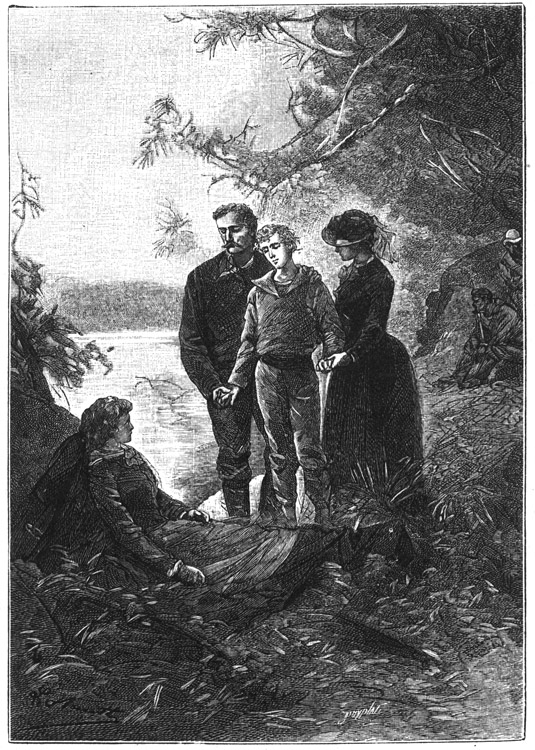Als die Sterbende sah, daß Beide Godfrey in ihre Arme schlossen,
Die ganze Stadt erwartete sie auf dem Bahnhofe und begleitete sie unter steten Zurufen bis in das Hotel in der King William-Street. So oft John, seine Frau und ihr Sohn sich am Fenster zeigten, brach die versammelte Menge in solche Hurrahrufe aus, daß sie, wie Gîn-Ghi sagte, bis an die äußerste Grenze des Himmlischen Reiches gehört wurden.
Der Aufenthalt in Adelaide dauerte nicht lange, denn John und Dolly Branican sehnten sich schon nach San-Diego, ihren Freunden und ihrem Prospect-House, wo sie das lang verlorene Glück wiederfinden würden. Sie nahmen von Tom Marix und seinen Leuten Abschied, nachdem sie dieselben reichlich belohnt hatten. Nie würden sie ihre Dienste vergessen.
Aber sie würden auch nie den Sonderling Jos Meritt vergessen, der sich ebenfalls entschloß, mit seinem Diener Australien zu verlassen. Doch da er seinen Hut dort nicht finden konnte, wo befand sich wohl dieser?
In einer königlichen Wohnung, wo er mit der ihm gebührenden Achtung aufbewahrt wurde. Ja! Jos Meritt war in allen fünf Welttheilen umhergeirrt, um diesen Hut zu finden – der, wie man ein halbes Jahr später erfuhr, in dem Schlosse Windsor war. Dies war der Hut, den Ihre Majestät anläßlich des Besuches Ludwig Philipps im Jahre 1841 trug, und es konnte sich nur ein Verrückter einbilden, daß dieses Meisterwerk einer Pariser Modistin sein Dasein auf dem Schädel eines Wilden in Australien beschließen werde.
Die Folge davon war, daß die Wanderungen Jos Meritt's aufhörten – zur großen Freude Gîn-Ghi's, zum Aerger des Sammlers, der mißgestimmt nach Liverpool zurückkehrte, weil es ihm nicht gelang, sein Museum mit diesem in der Welt einzig dastehenden Hute zu bereichern,
John, Dolly und Godfrey schifften sich in Adelaide auf dem »Abraham Lincoln« ein, begleitet von Zach Fren und Harriette, und kamen nach drei Wochen in San-Diego an.
Hier wurde John von Mr. William Andrew, dem Capitän Ellis und Tausenden von Menschen jubelnd empfangen, die Alle stolz waren, daß einer der berühmtesten Söhne ihrer Stadt endlich wieder zurückkehrte.
*